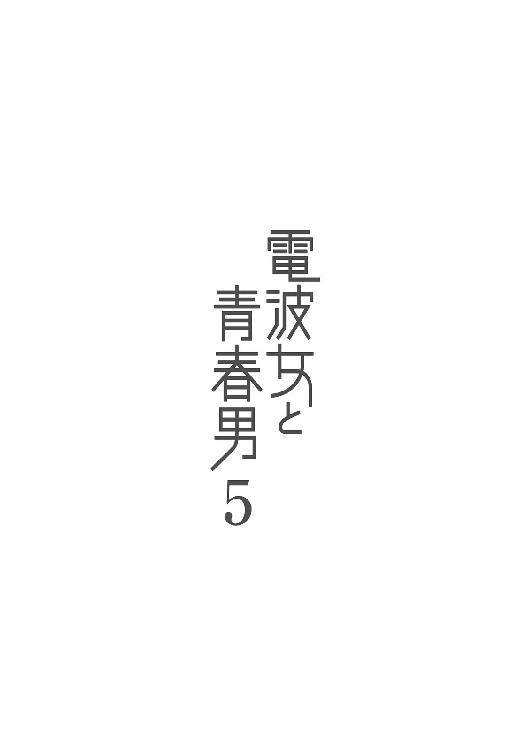
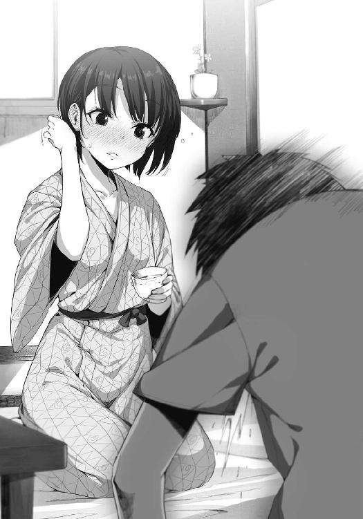

| 電波女と青春男(5)<電波女と青春男> (電撃文庫) | |
| 入間 人間 | |
| (2012) | |

本書（電子版）に掲載されているコンテンツ（ソフトウェア／プログラム／データ／情報を含む）の著作権およびその他の権利は、すべて株式会社アスキー・メディアワークスおよび正当な権利を有する第三者に帰属しています。
法律の定めがある場合または権利者の明示的な承諾がある場合を除き、これらのコンテンツを複製・転載、改変・編集、翻案・翻訳、放送・出版、公衆送信（送信可能化を含む）・再配信、販売・頒布、貸与等に使用することはできません。
「も、もっふふもっふっふ。も、もっふふふ」
「あー、んー......ナウシカ？」
「もっふー、もっふー」
正解だったみたいだ。不正解だと返事がふもふもになる。
「もーふーふー、もふふもふふもー」
「えーと、暴れん坊将軍のテーマ」
「もっふー、もっふー」
選曲が謎なやつだ。あと、埃が舞うから布団ごと飛び跳ねない。
「もっふもっふもっふもっふもっふふっふふー」
「それは危険だからやめなさい」
「むぐー」
布団の上から口を押さえて抑止した。ネズミさん、不届き者は指導したのでお許しを。
しかし猛烈に暇だからって、布団に巻かれた従妹と真っ昼間に居間でイントロクイズやっている夏休みは有意義と言えるのだろうか。あ、もちろんだけど丹羽真です、こんにちは。
高校二年生、青春の絶頂期。そんな大事な時期の夏休みも、残すところ一週間となっていた。外傷のない綺麗な蝉の死体が道路の隅に転がっていたりして、夏の終わりを少しずつ感じる。
それでもまだ、しゃうしゃうしゃう、と庭先から夏の音色が届く。振り返った庭は何週間か前に刈ったのに雑草がもう伸びきって、地面を茂らせていた。
「もーもふーもふふー、もふふー。もーもふーもふふー、もふふふふふふ」
「まだクイズ中なのかよ。えーと......なんだそりゃ。分からん」
「もふふふーもふふふのもふふふふ」
「いや正解教えられても伝わらないから。布団用の辞書、近所の本屋に売ってねえんだ」
床に寝転がってじたばたしている郷土妖怪スマキン、藤和エリオ。その閉じこもり具合は蝉に近い。ただ違うのは、蝉は殻を破っても劇的な見た目の変化はないがこいつは凄まじい変化がある、ということか。宇宙忍者のナントカ星人みたいなのが美少女に突如として脱皮を果たしたら、そりゃあ周囲は仰天するだろう。
その妖怪の母親が居間に、廊下から顔を覗かせる。ぴょこっと、明らかに可愛さを意識した仕草と首の傾け方を見せつけてくる四十歳の名誉のために、どたどたと廊下を子供のように走る音が数秒前にくっついていたことを明記しておこう。
今日は俺の大きめのシャツを勝手に着て下は短パン、それと髪を手ぬぐいで結んでまとめていた。顔立ちは無邪気で、年齢はともかく幼げな雰囲気がいつだってつきまとっている。
「エリたーん、パパー。ご飯できたわよー」「もーふ」「じゃねえよ」返事したエリオの頭を押さえる。床にまた転がったエリオは「ももふふ！」と両足をジタバタさせて抵抗を試みてきた。
塵を巻き上げるだけの抵抗か、下らん。とか言われてしまいそうなほど無意味であった。
「だれがパパですか」
叔母さんこと藤和女々さんの四十歳とは思いがたい無邪気な笑顔を睨む。やだよ布団の父親なんて。なに、最高級羽毛布団？ ベッド？ 電気毛布？
「あーん、エリたーん」
助走もつけていないのに妙に素早いヘッドスライディングを決めて、俺の方になだれこんできてしかも遠慮なく抱きついてきた。手早く確実に俺の背中を絡め取って、隙間なく密着してくる。キャーオバサンノムネガアタッテルー。ぐは。俺のなにかがぐは。「そう呼ぶなら言動一致させてそっちに抱きついてくれ！」あんたのエリたんはそこに転がっているでしょ！ こんなのが俺の叔母だというのだから、地球は順調に狂っている。
腰にしがみついてくる叔母を引きずり、スマキンを転がして台所へ向かう。気温が平熱でも上回りそうな、典型的な日本の夏だというのにこの親子は全く自重しない。「シャツ引っ張らないでください。ていうか離れなさい」手のひらでデコをぐいぐい押す。だがそうすると女々さんは鼻息も荒く、一層しがみついてくる。なんで俺はこんなくそ暑い家の中で、北風と太陽ごっこやっているんだ。それとスマキンはいい加減、転がされてないで自前の足で歩け。
「マコ君も大きくなったわねぇ、しみじみ。女々ちん泣いちゃう」
「今のあんたの姿を見たら俺の父親が泣きますよ」
「マコ君を初めて見た頃は女々ちんもキュッピキュピな二十代......うぅ、ぐすっ」
そっちかよ。
ズルズルゴロゴロ。普通の人間が廊下を移動する音からは程遠かった。
小型の扇風機が首を振っている台所に入る。するとすぐに独特の刺激臭が漂ってきて、昼ご飯の献立を察する。女々さんの用意したものはソーメンだった。匂いはすり下ろしたショウガだ。ちなみに二日前もソーメンだったが、相手のツユにショウガをひたすら注ぎ足すショウガ合戦となってしまって、味のバランスが崩壊した。なにが原因になったか忘れたが、子供すぎる四十歳の急所をえぐる一言を俺が発した気もする。今日はそうならないように努めよう。
「ていうかあれよねー、そろそろ女々ちんの可憐な女子高生編とか描かれるべきなのよ」
「俺たちが生まれる前の話をされても」
「マコ君の精子！」
などといつも通りのやり取りが済んでから、女々さん、俺、エリオと三角形を描くように着席する。「ふぐ」椅子の脚にスネをぶつけたらしい、エリオが呻く。「布団を脱げ」「む」スネが痛むのか、大人しく従う。布団の下から腕を出して、窮屈そうながらも器用に縛った紐を外していく。もはやその行動に逐一注目する者はこの家にいない。箸や薬味の用意を粛々と進める中、ようやくエリオがその顔を表に晒した。
......相変わらず、生態系のエラーから生まれたような規格外ぶりだな。美容院で髪を梳くだけで、抜けた毛が勿体ないと感じさせる水色。その髪と組み合わさることで蒼天を思い起こさせる、白い肌。四十歳の落ち着きが絶無な表情を少し分けてもいいんじゃないかと思う端整な無表情。まぁ最近は結構、表情豊かになってきているけど。単に叔母さんの顔がもう少し大人っぽく落ち着けばいいかなぁと切望して提案してみただけです。
で、そのエリオが打ったスネを俺に見せびらかすように、足を大胆にあげてくる。ワンピースみたいな服装で、足を布で保護していないにも関わらず、エリオには恥じらいというものがないのだろうか。普通にパンツ見えとる。ハレンチックな、と憤慨しながらも時々目がいってしまう、自分のこういうところは高校生らしくていいんじゃないカナ！ よくないかそうか。
「スネ、まっかっか」
「時間が経つと青くなるぞ、それ」
「信号みたい」
自分で言って愉快だったのか、エリオが目を線にして笑う。そうやって笑顔になるともう一段脱皮したように、魅力の質が変貌する。直視できる人類は、地球上にいるのだろうか。
学校では女子に疎まれていたらしいけど、ああなるほどなぁって合点がいってしまう。
「イトコ、夏休みそろそろお終い？」
「そりゃ、八月が終わるし。しかし後半は部屋に引き籠もってばかりだったな」
外はこんなにもいい天気なのに、インドア派のまま夏休みを締めくくっていいのだろうか。
などと考えていたら、人の心でも読んでいるように女々さんが話を振ってくる。
「あ、そういえばね。回覧板で旅行のお誘いが来てたのよ」
「旅行？」
「一泊二日の町内旅行なんだけど。マコ君たちは行きたい？」
ソーメンのツユに水を足して調整しながら、女々さんが俺とエリオの顔を窺う。エリオは「旅行」と無表情に呟いてから、俺を一瞥する。無垢に丸くなった水色の瞳は、触れると波打つ清い水面のようだった。それはいいが、どうして俺の反応を待っているんだろう。
「んー、旅行の行き先は？」
「近場の海だって。宴会つき、お酒は飲み放題。お酒って言ってもー、女々ちんみせーねんだから関係ないなーい」
くねくねする謎のババァの台詞は俺も関係ないなーいしつつ、目を泳がせて考える。海。夏の海。波が砂浜へ押し寄せる度、青春ポイントを運んできそうな伝統と実績ある青春空間。
青春男が海に一度も足を運ばず夏を終えるのは、甲子園の土を踏めなかった球児の悔しさに比肩する。ここで頷かない理由が、俺にあろうか！
......しかし、冷静に考えてほしい。町内旅行である。修学旅行とは参加者の年齢層が違いすぎる。ぶっちゃけ海と聞いて最初は水着姿に釣られかけたのだが、だれが参加するんだ？
どこまでが町内かも分からん。でも取り敢えずリュウシさんの家は外れているだろう。前川さんは、どうなんだろう。近所に住んでいるってイメージはないけど。
「わたし、行きたい」
俺が悩んでいる間に、エリオが少し弾んだ声で返事する。俺と、女々さんの顔を見渡した。
「お母さんと、イトコと、海行って遊びたい」
エリオがそうやって喜色ばんだ声と顔つきで、積極的に提案してくるのはなかなか珍しい。
俺と女々さんは目を合わせて、うんうんと頷きあう。
ここでいぃえぇと首を横に振ることができるほど、俺は捻くれてないつもりだ。
「よぅし決まり！ 満を持した女々たんのＲ─18指定な過激水着がマコ君を悩殺よ！」
「え、脳殺？」
どんな恐怖を見せつけられるのでしょう、ガクガクブルブル。いやー、十八歳未満は視聴禁止で助かった。健全なる青少年の育成とかいう役に立たない建前の規制が、ここまで納得できるのも珍しい。というかそんなもん、一体だれに見せる気だ。あの山本さんって人か？
「エリちゃんも水着買いに行きましょうね」
「わたし、服で泳げるよ」
エリオがソーメンを箸で掴みながら答える。こいつ、風呂も服着て入るからな。
「ダメよ。エリちゃんの水着姿を夜な夜な妄想しているマコ君の鼻息を静めないと、二酸化炭素を排出しすぎて、ご近所からエコしてないとか怒られちゃうもの」
「ん」
「頷くな」
エリオが床に畳んで置いてある布団をチラリ。こいつの場合、どの水着がほしいか尋ねたら迷わず、新品の布団を指差しかねないからな。
「はーい、エリたんあーん」
ツユに浸したソーメンを、エリオの口もとへ持っていく女々さん。エリオは「た、食べれるよ」と子供扱いに若干赤面して、俺の視線を気にするように目が落ち着かない。が、結局「あーん」と母親の箸とソーメンをくわえた。むぐむぐ、と普段より早くソーメンを啜っていく。
「美味しい？」
「う、うん」
味もよく分からなそうに慌ただしく飲みこんだエリオが頷く。それから女々さん同様、ソーメンを箸で一掴みしてから、ツユにべったべたにつけて俺の口もとへ差し出してきたいや待て。
「イトコ、あ、あーん」
いやなぜ。エリオの行動にホワイ。どういう思考回路を駆使すれば、女々さん→エリオ→俺という流れを見出すのか。慣れないせいか肩が引きつって、頬も赤くなっている。
「ほーらマコ君、いっき、いっき」
女々さんがニコニコ素直そうに笑いながらはやし立ててくる。手拍子つきで、人の神経を逆撫でする術としては天然で一流だ。
「あ、ツユ垂れる。イトコ、早くあーん」
エリオまで急かしてくる。えぇい、と目を瞑って口を開けた。そしてソーメンの味と冷たさが口いっぱいに「ぎゃ！」かぁっと血の味が染みた。慌てて目を開く。不慣れで加減が分からなかったのか、エリオの箸の先端が舌を突き刺したのだ。しかもそのまま、ぐいぐいとソーメンを遠慮なく口にねじ込んでくる。口の中が様々な液体でいっぱいになり、ツユが舌に染みた。
「美味しい？」
「やっぱりお前との絡みは甘酸っぱくない......」
女の子とのはい、あーんは青春ポイントの枠からは外れてるけどさ。甘すぎるから。
それより本当の問題はこの後かもしれない。チラッ。うわ、向かいに座る叔母さんが「んがー」と既に目一杯口を開いて待ち構えている。喉の奥まで見渡せそうだが、見たくねーっての。
「うー、お腹空いたわー。パパー、ひな鳥にご飯プリーズ」
始祖鳥がなにか言っている。ああ、もう素っ気なくいこうとざーっと麺をすくって、ざーっとその口に突っこんだ。「がじがじ」と人の箸ごと噛んで、一向に離そうとしない。
「ちゅばちゅば」
「箸を舐めるな！」
引っこ抜く。唾液べっとりで返ってきた。これを洗わず使えたらそいつは勇者だ。いやエリオなら問題ないんだろうけど......せめて矢印の方向が反対になっていればなぁ。
「この美しきトライアングル、これがピラミッドパワーなのね」
「随分と平面なピラミッドだことで」
ただのいびつな三角形じゃねえか。藤和家の住人の関係そのものだな。
「......うーむ」
掲げた小皿の中を覗きながら、女々さんが唸る。ツユに映った自分の顔を睨んでいるようだ。
「どうかしたんですか？」
女々さんの悩みなど知りたくもないが、人が聞くまで絡んできそうなので先手を打つ。
「最近思うんだけど女々たん、お顔のシワなくなってきてない？」
「老眼が進行して見分けつかなくなっただけじゃないですか？」
ショウガ合戦が始まった。藤和家は今日も（住人の頭が）ポッカポカ。
「というわけで明後日から旅行に参加となりました」
『むー、パパはそんなの許しませんぞ！』
「えー」
俺の周囲のパパが複雑すぎる。それなのに家系図作ったら、一直線になりそうだな。
開け放した窓の縁に手をついて身を乗り出し、夜風と飛行機が空を切る音を天井としながら、御船リュウシさんと電話中だった。最近は電話代が怖くなってきたのでメールでのやり取りが多くなっていたけど、『旅行に行くことになりました』と送ったらすぐに電話がかかってきた。
外にはティッシュがひらひらと翻るような、頼りない風が吹いている。ジッとしていればそれなりに涼しく、髪の濡れるような独特の、冷ややかな湿気が渦を巻いているようだった。
『無断外泊なんてふんとにもー、にわ君存亡の危機じゃない』
「存亡ってマジですか。旅行が重大なのか、俺の命が水素より軽いのかどっちだろ」
後、無断ってだれの許可取ればいいんだ？ よく分からんが、リュウシさんは旅行と聞いて憤慨しているようだ。羨ましいのか他に理由があるのか。そういえば五月に俺が入院していた頃、海に行くのを取り締まろうとしていたな。クラゲがぷよぷよとか言ってた。うーむ、あの頃からわけ分からん台詞が意外と多いな......ミステリアスな部分も素敵！ よぅし、今日も順調に視野狭窄だぜ。
『とにかく、リュウコさんの目が黒いうちはにわ君の風紀を許しません！ どーしても藤和さんと海に行きたいのなら、あたしを倒してからにしなさい！』
シュッシュッシュ、と拳が風を切る音......を口で再現してくる。口笛を吹くのを失敗しているようにしか聞こえなかった。百歩譲って、マッチに火をつけるのを失敗している音。
「別にエリオとだけ海に行くわけじゃないけど......ていうか、倒していいの？」
『え、じゃあ今からウチ来る？』
なぜそうなる。いや倒すなら会わないと駄目なんだけど、リュウシさんのは少々ニュアンスが柔らかすぎる。リュウシさんのお部屋拝見は魅力的だが、藤和家は夜間外出が禁止なのだ。
「あ、そういえば前川さん一家も旅行に参加するってメール来てた」
『ホワイ！』
「いや同じ町内らしいし。あと、そんなに疑問のない疑問系を初めて聞いた」
『首を傾げてる暇もないほど謎なのであーる！』
ばふばふばふ、と足がベッドでも蹴ってばたつくような音がする。布団を巻いたエリオが跳ね回る音に似ていた。リュウシさんの布団かー、どんな匂いが以下略。
『にわ君はいっつもあたしを除け者にするー』
「してないしてない。ていうか俺、この旅行の主導じゃないし」
『にわ君のケチー』
「ごめんな、この旅行は三人用なんだ......とか言ったこともないのにケチ扱いとは」
『ケチースト』
「最上級好きだね、リュウシさん」
『リュウコやっちゅーに......あ、いいこと思いついた』
ぽん、と手のひらを握りこぶしで叩く音をわざわざこっちに伝えてきた。
「え、なに？」
『リュウコさん、リュックに入るの巻！』
「.............................................うん？」
『リュウコさん、リュックにイン。にわ君、それをがっちりキャッチ！ 旅行に出発、海とうちゃーく、キャーリューコチャンハイッテルー、ババーン！ ......というわけです』
「いや、あの......」
『ごく自然に海へ来てしまうためのエスパー御船作戦、いかがですか！』
「いかがなものでしょう......」
『むむ、気乗りしない態度。あ、もしかしてあたし入りリュックを背負えるか不安とか、失敬な悩みを抱えていませんかな？ ほんとシッケーよにわ君！』
邪推されて、プンプンされた。ていうかリュウシさん、リュックに収まるって......そんなもん背負ったら海なんか行かないで自分の部屋に持ち帰るっつーの。とは面と向かって言えない。
『しからば第二の作戦、にわ君一日養子獲得作戦が日の目を見るしかない！』
「いやぁ、あのさ。そんなスーパーな作戦立てなくても、普通に参加したいって言えばさせてくれるんじゃない？」
作戦の概要が非常に気になったが、無難なところを提案してみる。町内旅行なんて管理も緩いだろうし、費用さえ払えば問題ないだろう、とは思う。厳密に言えば俺だって、本来の町民じゃないわけだしなぁ。
『それはあれ、リュウコさんが他の方々より地味っ子だからくっついてってもだれも気づかないゼ！ という遠回りなにわ君式いじめっ子攻撃？』
「なぜそこまで卑屈になるのですか」
『にわ君がそうさせるのです』
えー。俺、なにか地味子さんコンプレックスと関係あるか？ うーん......サッパリだ。
『ちゅーかね、にわ君は、えっとー......海に、あたしも来てほしかったりする？ しちゃうかなっ？』
「そりゃあ勿論。そっちの方が楽しいし」
『ぶふー』
おどけた調子でなにか噴き出す。え、それはお前は楽しいかもしれないね、こっちも面白いよ君が笑いもの的な意味で、ということだろうか、リュウシさんを真似するなら。
『じゃ、じゃあリュウコさんも一緒に常夏行っちゃおっかなー』
「いいんじゃないかな、というか行かなくても今、夏だけどね」
などと冷静を装ってはいるが、内心はイエス！ イエス！ だった。何回ガッツポーズしたか数えるのも面倒だ。だってアナタ、海ですよ。海＋リュウシさん。これで水着姿が日差しの中で輝かなければアナタ、海とかマジ塩水じゃないですか。塩素の入った水以下ですよ。
『リュウコさんもねー、バスケに部活に多忙だけどにわ君の保護者役だから、仕方ないねー。スケジュール帳、ちょちょいと空けちゃおうねー』
「なんか今、米とライスを食べるみたいな日本語使ってなかった？」
『な、なんだよー、疑ってるのかよー。リュウコさんは公私ともに忙しいんだぞー！』
小学生の反論になっている。いや普段からどことなく、小学生的の雰囲気漂う人だが。
だからこっちも引きずられて小学生の気持ちとなり、ちょっと意地悪してみたくなる。
「忙しいって、たとえば？」
『え、そりゃーミッキーと遊んだり』
「ふむふむ」
『部活でボールバムバムしたり』
「ふむふむ」
『......ミッキーがあたしと遊んだり』
......ふむふむって相づち打たない方がよさそうだな。このままだとボールが友達になったりするだろう。なんというか、社会見学に行ったときの社長に、『社長ってどんな仕事するんですか？』と尋ねたら『書類にサインして』『はい』『判子押して』『はい』『......サインして』と答えていたのを思い出してしまった。
『とまぁ、そんな感じに色々あるのでした』
「そーですね」
ぼくときみでもぼくたち、色が二色でも色々みたいな。
『でも海に行くとなれば準備を怠ってはいけない！ なにしろにわ君の存亡とか繁栄とかかかっているし！』
「そうそう海なんだし水着の準備とかね」
つい本音がぼろぼろ出る。が、テンション最高潮のリュウシさんの耳には届いていない。
『ではにわ君、しばしサヨナラグッバイ！ ......海をお楽しみに！』
「そりゃあもう」
あなたが希望の星です、リュウシさん。ついエロ本購入のときみたいに、リュウシさんのあられもない姿を想像してしまう。そんな正直者の側頭部を殴った。
......え、なんで前川さんの水着姿に期待しないかって？ やだなぁ、あの人がそんなもん、着てくるはずないじゃないか。魚柔道着マンの格好で来てももはや驚かないぜ。
電話が終わって、ふぅと息を吐く。リュウシさんとの電話は楽しいけど、その天然ぶりに翻弄されて凡人の俺は頭が疲れたりもする。位置や捻りが固定されていた腕を揉んで、肩を回す。
「.............................................」
触れた腕には隕石の掠めた跡が、痣のように残っていた。時間が経てば薄れはするかもしれないが、完全に消えることはないだろう。この傷跡が、今年の夏の奇妙な象徴だった。
なかなか強烈なものを頂いてしまった。目の焼きつけが未だに時々、復活してくる。
今も生まれたそれを振り払うように、腕を前へ、前へと突きだす。
吹き抜ける夜風が傷跡を覆って、肌に残った隕石の粒を少しずつ、溶かしているようだった。
「......お？」
庭先で、望遠鏡と共に立つエリオが二階の俺に向けてぶんすか手を振っていた。月も隠れているような夜空の下で、その髪は自ら粒子を放つことで強く存在を主張していた。
「イトコー、星ー」
「はいはーい、今行くー」
手を振り返してから、屋根を歩いて庭にでも飛び降りてやろうかと思ったけど大人しく部屋に引き返す。地球人の俺はちゃんと、家の中にある階段を使うのだ。ワープとかマジ無理。
自分の足をちゃんと前に出さなければ、五センチメートル先にも行けやしない。
「......とまぁ、そういうことで夏休みの尻尾編、始まり始まり」
今年の夏は様々な意味で衝撃的すぎた。
だから、プールで泳ぎ疲れた身体を、大の字に寝転んで休ませるように。
この旅行が本当の意味での夏休みになればいいな、と慎ましく希望するのであった。
「水着だ！ 海だ！ 夏だ！」
「順序おかしくないですか？」
「マコ君の心情を酌み取ってみたのよ」
的確なお世話ですこの野郎。それと道路で叫ばないで、みんな注目してるから。恥ずかしいよ、おかーさーんと服の袖を引っ張りたい子供の気持ちだが、実の娘は別の理由で世間を恥ずかしがって、俺の背中に隠れているのだった。えぇい、人見知りめ。しかしエリオにはシャツを引っ張るなと強く言えない俺なのであった。えぇい、美少女め。
八月最後の土曜日、町内旅行に参加するメンツが商店街端のバス停付近に集っていた。貸し切りバスは費用削減のために省かれたらしい。ま、バスも暇で席が空いてるだろうし、安く済むならそっちの方がいいよな、と居候の俺は考える。旅行費は女々さんが払うわけだからなぁ。
「つまりこの旅行はマコ君を買ったに等しい！ 今日から明日まで叔母奴隷！」
「心を読んだうえに不穏当な発言を声高らかに叫ばないでください」
この人の背中にはボリューム調節のひねりが必要だと思う。まっとうにかつ、周囲がストレスなく生きるために。でも今更、年相応の態度を取り始めても違和感しかないのでこの性格をどこか黙認している自分がいる。なんというか人間、慣れって怖いよね。
でも、降り注ぐ夏の日差しには一向に慣れそうもない。建物の前にいくつも置かれた植木鉢や雑草で緑が多く、草の匂いが強く立ちこめるバス停前。木々は生えていないために蝉がほとんど鳴いていない商店街は、聴覚、視覚に変化がないために暑さがのっぺりとしていた。
潰れた煙草屋の看板を掲げる小屋、前川さんがバイトしている和菓子屋に客のいない自転車ショップ。安売りの服を投げ売りしている感じの衣服屋といった建物に囲われて、風も通らない。その上、背中にはエリオがくっついているし、隙を見せると女々さんが腕を組んできたりするので、意識だけがバスに乗らないで海へ飛んでしまいそうだった。少し耳鳴りがする。
旅行の参加者である前川さん一家は廃線した、元線路の側に三人で立っている。両親の頭の高さは差がないのに、前川さんだけが一人飛び抜けている。今は家族で輪を作って談笑していた。前川さんたちの方が先にここへ来ていて、さっき挨拶は済ませた。前川父に娘との関係を露骨に警戒されていたので、長々と話すことはできなかったけど。
ちなみに今日の前川さんはなぜか上下ともに赤ジャージ姿。で、大きなリュックサックを背負っている。本人曰く、『体育会系の合宿っぽく決めてきた』らしい。リュックの中身は恐らく、海で着こなすコスプレ衣装だろうことは、想像に難くない。なので敢えて言及は避けた。
しかし、前川さんの両親は娘のコスプレ趣味をどう捉えているんだろう。ちょっと気になる。
「ぐぇっ。おい、シャツ引っ張りすぎ」
襟元で首が絞まったので、流石に背後のエリオに注意する。見ると木にへばりついたコアラみたいにシャツを掴んでぶら下がっていた。振り落とす。地面に着地したエリオは、「うぅ」と俯きがちになりながら、周囲の大人たちの視線をちらちらと気にしていた。なんだかなぁ。
旅行の参加者としてここに集っているのは、俺たちも含めて二十名前後だろうか。これでも例年より多い方だ、と幹事のお爺さんがさっき、嬉しそうに話していた。俺やエリオみたいに若い子が参加するのは物珍しいらしく、随分と友好的だった。エリオにも特別視がないし。
見回してみると、確かに平均年齢が四十代を超えそうな顔ぶれだ。驚きの事態だが、この中では女々さんが若い部類に入るのである。思わず地球の明日を心配してしまうぜ。
「なに、女々たんに新茶のような若々しい息吹を感じるですって？ マコ君がついにデレた！ 叔母奴隷万歳！」
「だから人間的に読んじゃいけないところは把握しないでくださいって......あ、人間じゃないのか。ちょっと納得」
女々さん、という固有の生物とでも認識しておこう。でもこれだけ自己主張の激しい母親から、どうしてここまで世間に怯える小動物みたいな娘が生まれたんだろう。藤和女々をローマ字で書くと、ｔｏｕｗａｍｅｍｅ、ミーミーなんだぜ。携帯電話に登録されたそれを見る度（女々さんが勝手に登録し直した）、自分の顔が微妙にしかめ面になるのはどうしてだろう。
尚、エリオは旅行にも愛用の布団を持っていこうとしたので（むしろ他の荷物など一切用意していなかった）強引に置いていかせた。着替えは女々さんの鞄に一緒に入れてある。よって手ぶら。しかも散歩気分の裸足で出ていこうとしたので、ビーチサンダルを履かせるのにも苦労した。つーかなんで、俺が一々こいつの身支度に構わなくてはいけないんだろう。エリオの頼りない態度や常識のない行動を傍から見ていると、保護者の振る舞いを自然と行ってしまう。
しかし保護という大人の視点は青春ポイントに反するのであった。だからこう、受け入れがたいのだ。それでもエリオが俺の背中にくっついているのを黙認している最たる理由は簡単。
『イトコー』。
これに尽きる。なまじ名前で呼ばれるより、効果は抜群なのであった。
「イトコー」
くいくいと今度は控えめにシャツを引っ張ってくる。しかも頭の中で再生した声と抑揚をそのまま、現実で再現するように呼んできた。
「なんだよ」
「なんとなく呼んでみただけ」
「.............................................」
母親の悪い点ばかり学習してないか、こいつ。イトコはこの子の将来が心配......になるような立場ではないはずなので、無言に努めた。だから、シャツを意味なく引っ張るなと。
などとエリオに構っていると、娘の藍ちゃんを肩車した美容師さん、大井遠江さんがにこにこと笑って近寄ってくる。この人とその家族も今回の旅行に参加する。相変わらず親子ともども、幽霊を毎晩塗っていると説明されても納得できそうな肌の白さだ。大井さんの腰より伸びた髪が左右に振れると、つい目で追ってしまう。エリオの髪とはまた違う、艶やかさを含んだ髪だ。今日はツバの広い、年季によって少しボロのめだつ赤い帽子を被っていた。
「藤和ファミリーちゃーっす」
聞き捨てならないまとめ方で、俺たちへの挨拶を口にしてくる。俺まで藤和家として含めるのはどうだろうか。帰化するように、この街と藤和の家に骨を埋めるつもりはない。
......ああでも、どうなんだろう。昔の家にすぐ帰りたい、わけじゃないし。でも、いつかそれがやってくるわけだし。ああ、転校生気分。しかも今度は結構、名残惜しいかも。
「お、おはようです」
俺の腕の陰からこそっと顔を出したエリオがぺこぺこと、大井さんに頭を下げる。それから、肩車中である女の子となぜか見つめあう。ジーッと。女の子はエリオの水色の髪を珍しそうに見つめて、エリオはその視線に戸惑うように固まっているみたいだ。同レベルか、この子ら。
「エリオちゃん、おはー。相変わらず可愛いし目がふるふるしてるのねー」
うわ、妙に目が輝いてる。猫が弱った動物を見つけたような目だ。いじめっ子気質というか。
エリオがそれを察知したのか、ススッと俺の背中に完全に隠れてしまう。
「うちのエリたんを褒めるとは見る目があるわね、床屋ちゃん」
女々さんがエリオをさりげなく守るように、大井さんの肩をぽーんと叩く。それを受けて大井さんは、「ウチは美容院ですって」と苦笑した。この人は笑うと、大人びた容姿にうっすら、悪戯を企む子供のような無邪気さが加わる。似合うのに、どこかアンバランスという矛盾した笑顔だ。
「それでねぇねぇ、さっきから気になってたんだけどね、三人とも髪が伸びてきてるよ。夏が終わる前に切った方がいい、私に切られるべきだよぉ」
ご機嫌そうな口調で商売してくる。二本の指を目の前で、ハサミのように開閉させた。女の子も「ふ、ふぇー」とまたヤギのように鳴きながら、母親のハサミを真似してチョキチョキ。
俺はどうかな、まだいいんじゃないかなと自分の髪を摘んで、少し考える。
「大井さんこそ、ますます髪が伸びてますね」
どうでもいい疑問だけど、美容師さんは自分の髪を切ったりもできるのか？
「ふっふっふ、負けてられるかってね」
「はい？」
「あ、こっちの話。気にしないで、今回の伏線とかじゃないから」
「なーんだ安心、ホッ」
女々さんが意味不明に胸を撫で下ろす。この人たち、なにか大きな流れに喧嘩売りすぎ。
「学校が始まる前にみんなで来たらファミリー割引効かせるから。待ってますぞー」
なぜかムッ○口調で締めて離れていく。娘も「ふぇー」と小さく手を振ってきたので、少しは人見知りしなくなったのかな。手を振り返して、ふと思ったことを呟く。
「エリオって、あの女の子と同じレベルだよな。態度とか警戒心とか」
「そ、そんなことない。ないし」
むん、と胸を張るエリオ。いやいいけどさ、俺のシャツから手を離して虚勢張れよ。
それから大井さんは前川さんにも話しかけて、その髪を摘んでいた。前川さんはその手を払わず、はにかむようにしている。そうして大井さんと並んでいると、大人同士みたいだな。
「そういえばさー、前川ちゃん。カグヤは旅行来ないの？」
「昨日、店にいたときなんか言ってましたよ。家の片づけが終わったら行くかもとか」
カグヤ？ 話し方からすると、大井さんの友達なのかな。姫様みたいな名前だけど。
「ふーん。ま、どっちでもいいんだけどさー。あいつまで来たら高校の修学旅行みたいだし」
大井さんがケラケラと笑う。それから前川さんの髪を離して、旦那さんの元へ戻っていった。
町内旅行の若い参加者は、これでお終いだ。他は五十代、六十代のお爺さんお婆さんで脇を固める形となる。皆さん気心の知れた仲みたいで、緩い輪っかを作ってお喋りに興じている。
女々さんは田村商店の田村お婆さんも誘ったみたいだけど、断られたそうだ。海なんか行ったら貧相な自分の身体を他の連中に笑われる、とか言っていたと、少し寂しそうに話していた。
「よっほーい、にわくーん」
「......おっ、あの声、あの躍動感、あのリュウシさん」
道の向こうよりてってことランニングで向かってくるのは、説明不要のリュウシさん。今日は緑のフェルト帽を被って、黒い肩かけ鞄つき。遠目だと、社会見学か遠足中の小学生みたいである。大変に可愛らしい。ぶんぶん手を振ってくる。若い参加者、もう一人いたね。
そのまま一定の速度で走ってきて、「ききー」と踵ブレーキの効果音を口ずさんで、俺やエリオの前で停止した。帽子を被り直してから、俺、エリオ、女々さんの順に顔を眺める。
ちなみに表情の移り変わりは笑顔、曖昧な笑い、むむむと思案顔の順番でした。
「やーやーにわ君、本日はお招きに預かりました」
「いえいえ、こちらこそこのような暑苦しい場所に......」
水着の準備は万全ですか？ と挨拶代わりに聞きそうになった舌を前歯で噛む。欲望はそっと引っこめて空気読め。そういえば昨日、エリオと女々さんが水着買いに行ったとき、俺は自宅でのお留守番を命じられていた。現地でのお楽しみ、だそうだ。......どっちが？
「それと藤和さん、とえーと、叔母あ様！ おひゃびゃうあうあうあう」
「ほっぺぷに美ちゃんをほっぺつね美ちゃんに改名することに賛成の人ー、はーい」
リュウシさんの頬が女々さんの指に摘まれて、びろーんとなった。モモンガのようである。で、その伸びたほっぺたを挙手に見立てるように上へと引っ張る。問答無用にリュウシさんをぶっ飛ばさないだけ、今日の女々さんは大人と言える。旅行前で機嫌が良いせいかな。
「マコ君、お友達の教育がなってないわよ」
「いやー、友達って教育するもんじゃないですから」
それに俺、あなたの娘の教育で手一杯なもので。という冗談のもとにエリオを窺うと、相変わらずの無表情で、リュウシさんの間延びした顔を指差していた。
「なんとかリュウシ、凄い顔になってる」
なんとかって。こいつ、人の名前を覚える気がほとんど感じられないんだよな。
「ひゅーふぉやっふゅーふぃ」
どんな状況でもリュウコやっちゅーにを諦めないリュウシさんの精神に幸あれ。
「あうあう......モチモチ先生は手厳しい」
両方の頬を手のひらで覆いながら、解放されたリュウシさんがよろける。そんなリュウシさんを、リュックの重さに「おっと」とか同じくよろけている前川さんが見つめていた。
その周囲にいるお爺さん、お婆さんも元気よく現れていきなり頬を引っ張られていたリュウシさんに注目しているようだ。続いていた談笑が地下にでも埋まるように潜まる。
「へぇ、リュウシも旅行に参加するのかい？」
話しかけられて、リュウシさんの足もとが安定する。背筋を伸ばしながら、前川さんに答える。前川さんもリュックを背負い直して、姿勢を正した。そうなると、リュウシさんの顎の角度や前川さんの目線の低さが、大人と子供の構図になる。
「うっすっす。よその町の子だけどよろしくっす、リュウコやっちゅーに」
「あはは、よろしく。でも、だれが誘ったかは簡単に想像がつくね」
そう言って、俺の顔を一瞥してニヤリと笑ってきた。そりゃまぁ、俺ってすぐ分かるよな。別に悪いことをしたわけじゃないのに、見透かしているという態度を取られると心がざわつく。
前川さんと接していると時々、その見抜かれる感覚にバツが悪くなる。聡いんだよな、多分。
「旅行ってさー、出発前が一番ワクワクするよねー」
頬の状態も復活したリュウシさんが、にこーっと正面から微笑んでくる。約一週間ぶりのリュウシさんスマイルは、地球に明日がきっとあると信じさせるような魅力を備えている。
だけどそれも束の間、リュウシさんが開眼。腕を組んで、むふぅと息を吐いた。
「でも早速いけませんな。にわ君の保護者さんとしてこれは見逃せないねー」
「なにが？ というか保護者って、」あ、隣にいる大供さんは立候補しなくていいです。
「藤和さんをそうやってずーっとくっつけてると、にわ君の背中があせもだらけになって、かぶれてカユイカユイになっちゃうと思います。あぁおそろしや」
怪談でも話すような調子と、両手の指をワキワキとさせる手つきであせもの恐ろしさを語るリュウシさん。それ、クラゲの恐怖を語るときの手つきじゃなかったかな。万能なんだなぁ（いつだって盲目気味）。
そしてその話になにを思ったのかエリオが、背中をガリガリと掻いてきた。爪を立てて遠慮ないので、なかなかに痛い。特に中指の爪がガリッと上手に肌を引っかけることが多かった。
「なにしてるんだよ」
振り向いてエリオに説明を求める。見下ろされると無表情のエリオが、若干得意げになった。
「カユイカユイ対策」
「......いや、気が早いって」
「ちゅーか、一番の対策はこれだしー」
リュウシさんが俺の背中側にステップで回りこむ。それから、エリオの手を引く。
「離れるだー」
「は、離れないだー」
お、弱々しいながらも抵抗した。がばーっと人の背中にくっついてくる。いやあのね、エリたん。さっきから言いたいけど暑いとかそういう前に、心臓の鼓動が激しくなるから止めて。
「むー」リュウシさんがエリオの頬を摘んで引っ張る。
「いー」エリオが反撃する。リュウシさんの頬を摘んで引っ張り返した。
で、エスカレートして両手で相手の頬をがっぷり掴みあう。
「「むーい！ むーい！」」
二人で綱引きのようにかけ声をあわせて、両頬を引っ張り合い出した。女々さんもリュウシさんの頬を引っ張っていたし、日本女性の嗜みとして流行っているのか？ 二人とも足がじたばたとその場で駆け足になって、顔は相手の手から逃れようと、空を見上げる形となっている。
そんな状態のまま左右にバタバタ慌ただしく動き回って、どっちも頬を真っ赤にしていく。
......なんか面白いので、放っておいた。仲がいいのやら、悪いのやら。
女々さんも娘が同年代の少女とじゃれあうのを、微笑ましそうに見守っていた。......嬉しいんだろうな、やっぱり。色々あったけど娘であるエリオがまた、友達と遊んでる姿は。
前川さんもこっちの様子を、一歩引いた位置から呆れ笑いを浮かべて観賞していた。
女の子のほっぺの引っ張り合いを眺めながらしばらくすると、リュウシさんが走ってきた方向とは真逆から、今にも車体の横を建物で削りそうになっている赤いバスがやってきた。
「はい、あのバス乗りますからー。列作ってくださーい」
その騒々しい走行音と幹事さんの指示に反応して、輪っかを作っていたお爺ちゃん連中がのそのそと動き出して、停留所の側に並び始める。それを見て、道路の脇に散らばっていた藤和家、前川家、大井家の若年層も会話を打ち切ってお爺ちゃんズの後ろに続くように移動する。
俺の背中には相変わらずエリオがくっついて、両脇はリュウシさんと、えーと女々さん。
「これは新婚旅行？ それとも婚前旅行？ マコ君が決めていいのよ」
「すいません、地球で条件が成立する質問しか答えたくないです。あと、腕組まないでください。あせもが酷くなるらしいから」
「私と旦那様の初めての共同作業はあせも作りでした」
「別の意味で全米まで泣きそうだよ！」
「あー、叔母さんと腕なんか組んじゃってるー。それにリュウコさんディスペクトしてるー」
「また素敵な造語を作って。ていうかリュウシさん、え、腕、く、組むの？」
「うぃ！ でもにわ君とあたしはこ、心ががっちり組んでるからね！」
「え？ あー、うん、そう、かな」
「イトコー」
「呼んでみただけに対する無言の反応も三度までという言葉を今作るぞこの、」
「海、楽しみだね」
そこで勢いをバッサリ断ち切られて、一時停止。エリオ、ニコッとしたまま俺を見つめる。
不覚にも、青春ポイントの増加を感じてしまうような笑顔を直視してしまった。
「.............................................おう」
列の前の方に立つ前川さんが振り返って、愛想を敢えて悪くして答える俺を笑っていた。
なにはともあれバスの到着に、俺は待ちくたびれて鈍く痛む頬をようやく思う存分曲げる。
そしてふっふっふ、と不敵に笑ったりなんかしたりする。
電波女ってなに？ みたいな。
この旅行中の俺は、ラブコメ親善大使ですことよ。
たとえ唐突に宇宙戦争とか始まっても握るのは剣じゃなくて彼女の手、みたいな。
そこんとこよろしく。
世の中に偶然はないとか、そもそもそういう決めつけがおかしいとか、色々な意見がある。そういうことは、なにが正しいとか決めつけること自体間違っていると思うけど、それでもこのバスの状況はなにか意図があるのか？ と勘ぐってしまう。
商店街の熱気が淀んだような停留所に訪れたバスは予想通り、がら空きだった。だからエアコンの涼風は、俺たちのこめかみが寒くなるほど出迎えてくれる。幹事のお爺さんを先頭に、そのバスにぞろぞろと乗りこむ。お爺さんたちは奥から詰めて座ることもなく、思い思いに好きな席へ収まっていった。で、俺たちも残った席に適当に座った結果、ちょっとおかしくなった。そこに規則性は恐らくなくて、こだわりさえなければ偶然の産物と呼んでしまって構わないのだろう。リュウシさんとエリオが並んで席に着いてしまった。
途中、どこの席に座るかということで争って、頬を引っ張り合ったままバスに乗った結果がこれである。二人とも神妙そうな表情で、ちらちらと相手の顔を窺っている。ただ席を替わってくれ、とは周囲に頼まない。
そうして、一時停止していたバスが乗客をめいっぱい詰めこんでから発進する。ぶろろろ、と揺れる座席。俺はリュウシさんたちの横に座っていて、そこは丁度、後輪の上に位置する席だった。そのためか、振動が他の席より強いみたいだ。胃の奥が小刻みに揺れる。
ちなみに俺の隣、窓側に座るのは前川さん。エリオとリュウシさんが『むーい！』している間に、いつの間にか一緒に座っていた。うーむ、並んで座ると高身長だけあってそれなりの威圧感だ。ついでに言うと、前方の席から訪れる前川父の視線もなかなかに威圧的だ。
「転校生としては、リュウシか藤和が隣に座った方が嬉しかったかい？」
ふふふ、と斜に構えた態度と笑い方で前川さんが尋ねてくる。俺はいやいや、と手を振った。
「さっきあんまり前川さんと話せなかったから、丁度いいよ」
そう言うと、どうしてか前川さんは「むぐ」と喉を詰まらせたみたいに目を白黒させた。窓の側に頬杖を突いてから、その落ち着かない目玉で俺を値踏みするように見つめてくる。
「えぇと、どうかした？」
「ひょっとして、転校生は天然なのかな」
「え、俺が？ 普通だと思うけど」
むしろ天然といえばリュウシさん。あの探り合いはどうなっただろうと横目で確かめると、動き出して通りすぎていく商店街の建物を背景に、リュウシさんがエリオとの対話を試みていた。某エイリアン映画で、少年がチョコ菓子を宇宙人に差し出すときを彷彿とさせる構図だ。
「が、ガム噛むかい？」
妙な遠近法を利用したような姿勢のリュウシさんが、鞄から取りだした葡萄味のガムを一枚エリオに渡そうとしてみる。友好の証なのかな、あれ。エリオはどう出るんだろう。
「あ、ありがとです。あぐあぐ」
エリオがリュウシさんの指ごと、ガムを口に入れて噛み出す。リュウシさん、そのあまりに素直な受け取り方にちょっと唖然。仲良くなるというか、餌づけみたいになっている。
「あ、そうふぁ」
ガムを噛んだままのエリオがごそごそと、スカートのポケットを漁る。手ぶらなはずのあいつがなにを探しているんだろうと注目していたら、小さな巾着袋を取りだした。
袋の紐を緩めるとパラパラ、大きな雨粒のように飴玉がこぼれた。その中の一つであるミルク飴の包みを外して、リュウシさんの鼻先に突きだす。
「あ、アメ舐めるかい？」
「か、かたじけない。れろれろ」
リュウシさんもエリオに倣ったように、相手の指と一緒に飴を舐める。くすぐったそうにしながらもエリオは手を引かず、そのまま噛みかけのガムにかぶりつく。......相手の尾っぽを呑みこもうとする蛇って、こんな感じなのかな。まぁでもよそよそしく目を逸らし合うよりはよっぽど、歩み寄っていていいんじゃないだろうか。うんうん、と一応頷いて見なかったことにする。で、ふと強い視線を感じて前川さんの方に振り向くと、ジト目だった。
「あっちの補助席にでも座るかい？」
リュウシさんたちの方を投げやりに指差す。「いやいや」ともう一度手を振りながら、どうして前川さんが不機嫌そうになっているのか考える。まさか構ってほしいとかそういう欲求の発露じゃないだろう。想像つかない。前川さんはあっちに座る同年代より大人風だしなぁ。
じゃあなんだろう。まさかバス車内からコスプレに着替えたくて、俺が邪魔とか？
「ん、電話か」と前川さんが目を細めたまま、ジャージのポケットを漁る。取りだした携帯電話は黒電話を模した着信音がリンリンと鳴って、ぶるぶると震えている。前川さんの携帯電話はリュウシさんのストラップがごてごてくっついた感じとは違い、スッキリしていた。性格出ているなぁ、と電話に出る姿を眺めながら、ぼんやりと感心する。
「はい、はい。......はぁ？ 詳細は？ ない？ ああ、そう」
前川さんが電話を耳もとから離して、俺の方を向く。すぐに目があって、見つめていたことでなにか言われるのかなと身構えてしまう。が、その口からは文句でなく問いかけが飛び出す。
「転校生、右と左ならどっちだい？」
「は？」
「いや、今そういう質問をされたから。深く考えず、直感で答えてくれって。なんか宇宙戦争がどうこうって言っていたけど、そっちはいつものことなので無視していいと思う」
そこでどうして俺に返答を任せるんだ。そもそもだれからの電話なんだろう、宇宙戦争とか。いつもそんなこと言っている人からの電話ってどうよ。内容が省かれすぎて、想像の疑問がぐるぐると頭を回って、締めつけてくる。けど、電話の向こうの人も答えを待っているようだし何より直感でいいと言われたのなら、それに従ってしまえばいいか。
「じゃあ、左」俺が左側の席に座っていたから、というしょうもない理由だが。
「ん、分かった。はいお待たせ、左らしいよ」
前川さんが軽い調子でそう電話越しに伝えて、二、三言やり取りしてから通話を断つ。電話をポケットにしまって、また窓際に頬杖を突いた。窓の向こうの景色に目をやっている。
「今のなに？」
「ああ、ちょっとした知り合いだよ」
微妙にかみ合っていない返事だった。前川さんはこういう思わせぶりな返事が多いよな。
で、そんな話が終わったころ、更にもう一つの粘っこい視線が額周辺に飛んでくる。なんだよ俺ばかり注目するなよ、左側にもっと面白い二人組がいるだろうがと思いながら顔を上げると、女々さんが一つ前の座席の上から顔を出して、ジーッと俺を見据えていた。行儀の悪いというか落ち着きのない小学生みたいに、シートに膝を乗せているのだろう。おい、まばたきしてくれ。
「走行中はシートベルトをして大人しくお座りください」
ガイドさんを真似て注意を促すと、ようやく瞼がパチパチと下りた。いやだから、口に出していない方の注意だけ受け止めるとか、そういう人間離れした行為は慎むように。
「マコ君が退屈しないようにずっと見張っていてあげようと」
「あんたが退屈なだけじゃないですか」
女々さんの隣に座る婦人用の帽子を被ったお婆さんは、窓に側頭部をつけて居眠りしている。
「そーなのよー！」
シュバッと女々さんが席から飛ぶ。走行中のバスを跳ねるピンホールのように、転がって床を蹴ってと大忙し。で、前の席と俺の間にある隙間へ身体をねじ込んできた。ただでさえ狭い足場は女々さんでいっぱいになる。めめさんがいっぱい。地獄絵図じゃねーか。
「ねーねー、トランプでもしましょーよー。チョ暇ー、みたいな感じー的なー」
小さな子供みたいに俺と、前川さんの手を引っ張ってくる。
「トランプなんか持ってきてないんですけど」
答えながら、俺と前川さんはこの足もとに巣くう大きな子供をどうするか相談するように顔を見合わせて、苦笑を浮かべた。前川さんの不機嫌さはそこで解消されたようで、いつも通りの少し斜に構えたような表情を形作る。
「トランプは私が荷物の中に用意してきたよ」
「お、さすが気配り上手の前川さん」
と称えつつ、内心はうぎゃ。トランプにはいい思い出がない。初ハグを叔母に奪われたとか。
あばばば。
「ふふふ、カードゲーム研究会所属の友達がいる私にトランプ勝負を挑むとはね」
「いや勝負挑んだのはこっち」
この足もとに挟まってる人。俺はなんでこの人が圧迫されて苦しくないようにと、足を引っこめて窮屈な思いをしているんだろう。生きるって不条理だ。
それにしても前川さんは相変わらず、妙に幅広い人脈をお持ちのようで。
「ちなみに研究会は学校非公認」
「ただでさえ脆い後ろ盾を更に貶めてどうするのさ」
下方から女々さんの握り拳が勢いよく突きだしてきて、危うく顎を打ち抜かれそうになる。
「よぅーし、それじゃあ女々たんの唇を賭けたキスババ抜き一回戦始め！」
「ねぇよそんな変態御用達ゲーム」
......ということで、偶然か必然か、この世のなにかが意図するものは存じ上げないが。
行きのバスの中で、自称ラブコメ親善大使と一番密着しているのは叔母さんだったりする。
......あれー？ これ、普段の生活となにが違うの？
「うーみーですよー！」
「え、地元の海に来ただけでそんなに感動するの？」
いや、俺も最初に海へ来たときは砂浜で踊っていたけど。あれは地元の海がない街から来たという事情もあってやむを得ないのだ。島国なのに海がないとか、詐欺みたいな立地だ。
「いやー、せっかく来たんだからしっかり感動しとかないとっていう使命感があって」
へへへ、と道路の頂上から海を一望して叫んだリュウシさんが、頬を掻きながらはにかむ。俺もリュウシさんの笑顔に感動しそうだった、という心情は後から下りてくる人たちの流れと注目に押しやられて、そのまま沈殿していく。自然、早歩きになっていた。
バスを出発から四十分近く利用して、現在は昼前。砂の弾け飛びそうな、強い日差しの時間。
これまた商店街と同様に閑散とした停留所に停車する。そこは坂のように起伏がある道路の途中に、錆びた黒いベンチと中心が露出して朽ちそうなバス停表示があり、道の左右は生い茂った細長い木に囲われていた。バスから出て一歩下りると、靴の裏にサラサラとした砂を踏む感触。そして潮の強い匂いがべとつく風に運ばれてきて、前を歩く大井さんが帽子からはみ出した長髪を手で押さえた。手を繋いでいる女の子も、母親を真似るように頭を押さえていた。微笑ましい。子供の頃は大人を真似したものだったな。
吹き抜けるというより肌に張りつくような風に周りの木々が揺れて、波の音のようにざぁざぁと鳴る。太陽は丁度雲に隠されて、程良い薄暗さの中で肌は一瞬、寒気を覚えて震えた。
本物の、砂浜に押し寄せる波はまだ遠い。道路からは水平線と、観光客用の小型船が海上を走っている姿が見えているだけだ。まだ残念ながら俺の中に、リュウシさんほどの感動はない。
バスを降りた町内旅行の集団はさし当たって、今夜宿泊する旅館を目指して歩き出していた。その後は自由行動なので、俺たちはどうするんだろう......って海に行くに決まっている。
夏の海の側まで来て塩水を無視するとか、青春への冒涜といえよう。まぁ多分。
俺の隣を歩くエリオが、こっちを見上げていた。「ん？」と目をやると、「んん」と小さく首を横に振る。なんだろう、と少し考えを巡らせるとすぐに思い当たるものがあった。
ここは、俺たちの街から最寄りの海。エリオが昔、なぜか浮かんでいた海だ。そういう思いがあるだろうしそれに、この道を越えていけば四月、俺とエリオが自転車で飛んだ坂に辿り着く。まだ若く、熱かった頃......というほど時間は経過していないけど、今考えるとゾッとするほど無謀な行いだった。もう一度やれと言われたら、スタントマンを用意するしかない。
そりゃ、学校で密やかに自殺野郎って噂されるよなぁと納得してしまう。いやはは、と苦笑したものの、後悔は特にない。だけど一つだけ、考えてしまうことはある。
あの自転車は海の底で命を使い切った後、ちゃんと空を飛んでいけるのだろうか、って。
町内旅行の宿泊先はいわゆる旅館であり、そこは入り口の右側に大きなたぬきの置物があったり経営者の趣味なのか魚拓が壁に飾ってあったりと、非常にレトロなムードを保っていた。
空気もレトロ、外観も萎びている。雰囲気があると古臭いの違いを明確に表したような、建築素材を山積みにしたような作りの旅館は、しかし裏から波の音が届くだけでそれなりに許されてしまうのであった。海は生物の大いなる母的なアレで実に卑怯だ。いいのだが、別に。
ロビーの前で予約の確認と受付を済ませて、鍵を大量に受け取った幹事さんが、部屋の割り当てを行う。この後は夜の宴会まで基本、自由行動となる。
何人かのやり取りの後、部屋の鍵を藤和家の代表である女々さんに差し出しながら、部屋番を指定してきた。幹事さんの手にある鍵は、一つだけだ。
「藤和さんたちのお部屋の割り当てはここですね。ここ右に行って、突き当たりです」
「はーい」
横でそのやり取りを眺めていた俺は、え、ちょっと待てと心の中で疑問を挟む。俺と女々さんとエリオが三人で同じ部屋に泊まれと仰るか。いやぁ、それは親類であってもマズイのでは。
「ピピー！ ピピピピー！ ふぃふぃふぃふぃー！」
最後の方は警笛代わりの口笛が掠れているリュウシさんが、部屋の割り当てに異議を挟んでくる。エリオはビクッとなって赤みの引いた頬を手のひらで防御しながら、女々さんの陰に隠れる。こいつ、いつもなにかに隠れてるな。「むむ？」と女々さん自身は首を傾げた。
「ほっぺぷに美ちゃん、なにかご不満？」
つんつん、とリュウシさんの頬を指で突っつく。うーむ、いいなぁ。いいんだよなぁ、あれ。
「そーいうお泊まりはですね、えっとー、にわ君の危機に繋がると思います！」
「貞操の？」
「てーそー？」
ほぇ？ という表情でリュウシさんが首を傾げる。自分の手のひらをかざしてジーッと見つめる。それは恐らく手相だ。「ほぇ？」女々さんは可愛さアピール狙って首傾げないように。
「とにかく藤和さんとあの日あのときあの場所あの部屋が一緒とか、もー、ダメダメなのです」
リュウシさんじたばた。『うきーっ』といった顔つきでばふばふと絨毯の敷かれた床を踏む。その騒ぎに幹事さんは面食らっていたものの、「じゃ、次」と他の旅行者に鍵を回し始める。
前川さんはこちらを見向きはしていない。が、ニヤニヤと頬の横が吊り上がっている。リュウシさんの慌てふためく態度が楽しくて仕方ない、って表情だ。大井さんも手で口もとを隠しながら、目が意地悪そうに笑っていた。二人ともそれが素の表情であるように自然体だ。
「エリたんとマコ君セットがダメ？」
女々さんが、エリオと俺の頭にぺたっと手を載せてくる。払う前にサッと引いて避けられた。くそ。
「混ぜるな危険とお見受けしますな」
「な、なんで？」
こそっと女々さんの腕の陰から右目を覗かせて、エリオが疑問兼抗議を発する。それに対して「うがー」とリュウシさんが両手を上げて威嚇......かわいさ魔神が悩殺ポーズ決めているようにしか見えないが、エリオはまたささっと俊敏に隠れる。なんかこの二人、微妙に楽しんでないか？ 取り分けエリオの方は、女の子の友達みたいなのが相手してくれて嬉しそうだ。
「ほほぅ、では魔性の美少女こと女々たんと童貞マコ君の取り合わせなら構わないと？」
「おい、常人が世間には大っぴらに公表できない表現を二つも使うな」
髪の先端を掴んで引っ張って言動を慎ませようとしたら、後ろに目があるようにそれを察知して女々さんが回転する。髪の毛はするりと俺の手のひらから抜け出し、エリオ共々回った女々さんは勝ち誇ったようにふふんと鼻で笑い飛ばしてくる。ますます妖怪じみてきたな。
「それで、ほっぺちゃんはどうしろと？」
女々さんの質問に、リュウシさんは人差し指を突きつけた。
母親の背中に隠れながら、こっそりと自分を覗くエリオに向けて。
「その子はうちが引き取ります！」
「えー」
だれが不満の声をあげたか曖昧で、力のない叫びだった。
「......で、なんの因果かこうなると」
「ここがマコ君との愛の巣、つまりラブリースクウェアなのね」
「哀の巣窟ですね、はいはい」
めめさんといっしょ、みたいなね。うんまぁ、こうなるとは薄々予想していたから。驚かない嘆かない信じない。呪文のようだ。壁の端に鞄を投げつつ、背負ってきた右肩を回す。
女々さんが受け取った鍵で開いた部屋に、俺がいる。女々さんも泊まる。こっちの方がよっぽど混ぜるな危険に該当するんじゃないだろうか。というか、女々さんが単品で危険すぎる。
部屋の内装は和室で畳敷き。映るのか不安な小さなテレビと、色あせて絵が原形を留めていない掛け軸、黄緑色の壁。脚の短いテーブルの上にはメモ用紙とボールペン、それと内線用の黄ばんだ電話。エアコンはあるけど稼働していないから、室内は炊きたての米に伴うような蒸し暑さが漂っている。そこにお香のような匂いがほんのり立ちこめていて、お婆さんの家みたいだ。布団が二組用意されていることだけが、一縷の救いだった。
高揚感が低空飛行を続ける部屋である。期待値を跳ね上げる一発逆転の要素は窓の外の景色しかない。日が入りこんでくる先、窓の縁に手をついて、海岸を一望した。
「わぁ」リュウシさん級の感動はなかったけれど、青緑の水面が広がっている様は爽快だった。少なくとも二階の窓から、昼間の藤和家の庭を見下ろすよりは。夜はまぁ、エリオとかいるし。
「そろそろマコ君の頭の辞書には、メメるという動詞が登録されてもいいと思うのよー」
「類語の滅入るならもうあるんですけどねぇ」
抱きついてくる叔母の額を押さえて、嘆息。アレだね、エリたん助けて。きみはスケープゴートに最適だと、今日気づいたよ。
エリオはリュウシさんの泊まる一人部屋に連れていかれた。ほとんど拉致だった。『イートーコー、おかーさーん』と引っ張られながら助けを求めてきたが、手を振って旅立ちを見守った。
俺を引き取ってくれ、とリュウシさんに言うわけにもいかないし。......言えばよかったのに？ おいおい本心、ちょっと大胆すぎるぞ。理性に取り締まられてしまえ。
「でも女々さん的にはよかったんですか？」
「第一印象から決めてきました、よろしくお願いしちゅー」
むちゅー、と唇をすぼめて人の二の腕に吸いつこうとする叔母と会話を試みるのも存外虚しいものだ、と悟る十七歳の夏。こんなのが叔母の基本だったら、叔母クライシスとか起きそう。
「エリオのこと。誘拐されましたけど」
「いんじゃなーい？ エリたんにお泊まりできるお友達ができたとか、マジ赤飯ものよ」
「単なるセクハラじゃないですか、それ」
「エリオも嫌がってなかったし、いいのよ」
一瞬、母親の慈愛に満ちた笑顔を浮かべてこっちの行動まで停止させる。が、ほんと一瞬。
「お母さん的には嬉しいし、さびちいー。だからマコ君を吸収して進化しなくちゃー」
だばだばだば、と両手を突きだしながらチューを求めるように唇をすぼめて突進してくる。
「完全体になる前にまず大人になってくれ！」
どうしたラブコメ親善大使、叔母としかいちゃついてねーぞ！ これが分相応なら泣ける！
などと葛藤しながら女々さんから逃げ回ってぐるぐると部屋の中を回っている間に、いい汗かいてしまった。海行くよりシャワー浴びたい、という欲求と熱を額に手を当ててねじ伏せる。
というか、どうして四十歳の方は顔色一つ変えずに、鼻歌交じりで鞄の中身を整理しているんだ。逃げている間に振り落とした精気かなにかを回収されていたとしか思えない。
「マコ君はこれから、血圧オーバーフロウ確実の女々たんの水着を観賞するために海行くの？」
「それ以外の理由で鼻血噴くために海行きます。着替えてから、取り敢えずは海の家へ行こうってことになってます。お昼ご飯はそこで食べようかなって」
「ふーん。女々たんも若者グループの予定に振り回されて大忙しね」
「若者グループを全力で振り回してハンマー投げしているのはそっちだと思いますが」
支点、力点、作用点の認識に差異がありすぎる。女々さんが若いかは、もう問わん。
鞄をごそごそと漁っていた女々さんがピタッと一時停止して、首だけ振り向かせてきた。
「でも、海行ってなにするの？」
「え？ そりゃあ......なんかするんでしょう」
確かに海でなにするって、咄嗟に思いつくことないけど。ビーチバレー？ いや人数がなぁ。
ま、行ってみれば分かるだろう。それに男の場合、見てるだけで満足するものがごろごろとそこにあるのだから、行く前から悩むなんて選択肢はあるわけないのであった。
このときのために、不思議な夏休みがあったと断言しても過言じゃない。
「さて、海だ」
弾ける水着、突き抜けるように爽快な水着、ジリジリと俺たちを焼く水着！
......間違えた。弾ける嬌声、突き抜けるように爽快な青空、ジリジリと俺たちを焼く真夏の日。それがパウダーサンドの砂浜という環境に立体を与えている。足の裏が踏む砂は日差しに温められて、できたてのポップコーンに触れているようだった。時々、足が熱に反射したみたいに、勝手に飛び跳ねる。その度に身体のバランスを取りながら、持ち上がった足で強く砂浜を踏みしめて、背筋を伸ばす。そうして、海の向こうから渡ってきた空気を強く吸いこむ。
冬の海じゃないけど水平線の彼方へ歩き続けて、パプワニューギニアでも目指したくなる。
波、砂浜、くそ暑い！ が、居ても立ってもいられなくなる。海のない県から引っ越してきた俺の中にある憧れは、四月の一件だけで現実の希薄さを学ばなかったようだ。たんたんたん、と砂を蹴って生まれ続ける衝動を散らす。なにもしないで突っ立っていたら、唐突に『ファーラーウェーイ！』とか叫んで、砂浜に訪れる波へ突撃しかねない。そういった感動があった。
だからそれを奇抜な行動ではなく、言葉で示そう。
「うーみーですよー！」
パクリだった。しかしこの、だれに問いかけているか分からない具合は意外と癖になりそうだった。リュウシさんは造語の達人だけあって、語感のよさを心得ているのかな。
ジッと海を見つめているとなんでか背中がむず痒くなる。振り返ると、俺たちが利用する旅館。旅館の裏側がすぐ海というのは高評価だ。これがこの特色がない旅館の生命線かもしれない。周辺を見渡す。人、パラソル、波の音。立ったまま瞼を下ろして、日差しを全身で受け止めた。全身を程良く伝う高揚感と緊張が筋肉をごわごわと揉むように震わせる。
四月、スマキンエリオを運んで自転車で訪れた海に、俺は再びやってきた。六月にもペットボトルロケットの打ち上げに来たから、丁度二ヶ月置きにここに足を運んでいるわけだ。
瞼を押し上げて、顔の前を手で払った。光の粒が払い落ちるような、そんな感触があった。
動くものが波とエリオだけだった。静かな夜とは違い、週末の海には人が集っている。ごった返しているほどでもないが、自由を満喫するには少し窮屈か。一緒に来たお爺さん、お婆さんたちもちらほら見かけるけど、みんなはもう来ているのかな。
先に入っているのかと海の家らしき施設を外から覗いてみたけど、見知った顔は......あ、いた。俺たちとの待ち合わせではないけど、大井さん一家が中で食事を取っていた。大井さん、娘、旦那さんというように横に並んで座っている。全員水着で、上にパーカーを羽織っていた。大井さんは先程までと同じく、赤い帽子を被っている。三人ともソースヤキソバの皿が机に載っていて、箸で持ち上げた麺に一斉に息を吹きかけて冷ましていた。猫舌一家のようだ。
今まであまり注目していなかった、大井さんの旦那さんを眺めてみる。見た目二十代後半ぐらいで、中肉中背。頭にはサングラスを載せて、気の良いお兄さんといった雰囲気の人だ。
こう見ると、娘は大井さんの方に似ているんだな。
そうして入り口の脇に立っていると、ヤキソバのソースで口まわりを汚している娘がピクッと反応したように顔を上げた。こっちをじーっと見つめて、動かなくなる。小さく手を振ると、泣きそうな顔になりながら箸を振り返してきた。うう、この子はちょっと苦手だ。小さい子はどう対応していいかよく分からない。エリオもこんな感じなんだけどさ、俺からすれば。
海の家の前から引き返して、砂浜に突っ立ちながら腕を組む。どうも、旅館の部屋から砂浜まで走ってきたからか、待ち合わせの中では一番乗りみたいだ。『今日のはちょっと定番すぎるけど、ガッカリしないでほしいな』と肩を叩きながら部屋へ向かった前川さんの姿もない。というかあの人、夏の砂浜を出歩いて大丈夫なのだろうか。両手をあげるだけで目を回すという血の巡りが良すぎて問題になる人だからな。ハードボイルド映画で拳銃を背後から突きつけられて、ホールドアップを宣告されたら別の意味で絶体絶命だ。そういう自分を理解して、ちゃんと日差し対策をしてくるといいんだけど。
それと女々さんはなぜか、水着に着替えないで先に部屋から出て行った。なにか企んでいるのだろうか。波を相手にビーチボールを蹴って特訓していたり、一人で砂に埋もれて美少女発掘ゲームとか叫んでいたりする大供を捜してみたけど、それも見当たらない。独りぼっちだ。
「あっちー......」
直射日光に晒されている髪を撫でて、海面の眩しさにしかめ面する。こんな暑い中にやってきて、他の人はなにをしているんだろうと周辺の様子を観察してみた。パラソルの下で俯せに寝転がる女性、家族連れで子供と砂の城を建設するお父さん、意味もなく海に浸って波に揺れている人たちの頭。......なんかなぁ。意外となんにもしてない。海でしかできないことは展開されていなくて、正しく海に浮かんでいるだけの人たちがその象徴みたいだった。
これでは居間で寝転がってだらけている夏休みの延長でしかない。なにか間違っているような気がするけど、具体的にこーしようあーしようという案を出すこともできそうになかった。
夏の海って、なにをするところなんだ？ 飛びこむ、叫ぶ、打ち上げる？
「待たせたかな、転校生」
独りぼっちの俺に救いの声がかかる。そうとも、俺は一人寂しく海に佇んでいるわけじゃない、女の子の連れが......あれ？ おーい、女の子？ 性別ちゃんとしてませんよ？
細長い緑のワニが、砂浜へとのしのし歩いてきた。ほらあの、ビニール膨らませて海に浮かべて乗ったりするやつ。アレに身を包んだ前川さんが二足歩行でのっしのっし近づいてくる。
ワニと一体化した前川さんは、なにかのイベント案内か、バイトの子の衣装とでも思われたのかさほど注目されていない。だけどその前川さんと合流する俺の方が、かえって奇異を見る視線に晒されているようだった。穴があったら敢えて落ちてもよろしいでしょうか。
「ありきたりすぎてちょっとガッカリだったかな？」
尻尾がビタンビタンと砂浜を打つ前川さんというかワニ川さんが恥ずかしそうに尋ねてくる。羞恥心のカール具合が凄いなこの人。俺たち常人とは別地点で恥が爆発しているようだ。
「別の意味で膝から崩れ落ちそうというか」横を向いてぼそっと呟く。
「うん？」
「いや、なんでもないッス」
定番なんていうから密かに水着姿を期待していたのは内緒だ。はっはっは、こんなもんさ。いつだって運命は方向音痴だ。あと、目的地も絶対に人の意見を採りいれはしない。
そりゃ、全人類の要望に添おうとしたらどこへも行けなくなるからなぁ。
「他の二人は？」
ワニ川さんキョロキョロ。例によって、口の間から顔を覗かせている。救いはワニの顔がリアル路線じゃなくて、ゲームセンターでぶっ叩かれていたような可愛らしいやつってことか。
これで現物を再現した着ぐるみで海に浮かんでいたら、だれかに退治されても文句言えない。
それと衣装にこだわるより、日差し対策にもう少し関心を示した方がいいと思う。
「リュウシさんたちはまだ。ついでに女々さんもどこかへ消えた」
「へぇ。あの人のことだから、いきなり砂の下から飛び出してきても納得しないといけないね」
「わはは」
前川さんも結構言うなぁ。でも女々さんとつきあっていれば自然、だれしもこうなるかも。あの人を抵抗なく丸ごと受け入れるのは、娘であるエリオぐらいだろうな。
「へいお待ち！」
出前か寿司職人みたいな声が聞こえて、そして砂浜を駆けてくる足音が背後に二つ。おお、と差しこむ光に縋るように全力で振り返る。そこには砂浜を......すてててと小走りする、旅館の布団を巻いたスマキンと、それを後ろから押して支えるリュウシさんの姿があった。なぜそうなる。それとスマキンが壁となってリュウシさんの水着姿が拝めない。えぇい邪魔だ。
流石にこっちはなにかのイベントと誤解されないみたいで、上半身に旅館の布団を巻いたスマキンは夏の視線を独り占めだった。それが押されて一直線に近づいてくる。すててて。
「あっち行ってみようか、ワニ川さん」
俺もすててて、と逃亡を試みた。前川さんの手を引いて海の方へすててて。
「あ。う、うん」
妙に反応の鈍い前川さんが曖昧に頷く。動作が少しぎこちないけど、大丈夫だろうか。通風性の悪そうな着ぐるみだし、早速暑さに参っているのかもしれない。海水で冷やせば直るかな。
「こらー、そこの一人と、えーと一匹どこへ行くー！ 君たちに弁護士を呼ぶ権利はなーい！」
「もふもふー！」
布団の方は絶対に状況把握しないまま叫んでいるだろ！ あいつもう電波女あらため、布団女にでも改名した方がいいんじゃないか？ 振り返ると、夏のＢ級怪談に出てきそうな景色となっていた。本気で逃げる気はなかったから、布団＋αさんにあっさりと追いつかれる。
それから水色のパーカーを羽織っているリュウシさんがスマキンの前へと回り込み、腰に手を当てて憤慨する。ぷんぷん、ふがーと頬を膨らませながら怒る様は、両方から突如、ほっぺをつつきに来るファンが現れてもおかしくなかった。そのほっぺはリュウシさんの魅力が実っているようなものである。
「なんで逃げるんだよー。あんまりリュウコさん苛めが酷くなるとグレて、影の番長とかになっちゃうぞー」
「え、それって大出世のお手伝いしたってこと？」
「もふ」
こっちは無視。それからリュウシさんと同時に、相手の背後を指差した。
「「で、なにその後ろの」」
直後、沈黙が数秒訪れる。そしてでへへ、と二人で意味なく笑った。
「なにってそりゃー、ワニ川さんだよ」
「こっちは布団巻き巻きさんだね」
「なんで布団巻いてるのさ」
「なんか、着ていくって言ったから」
「いやいや、手伝わないの」
「藤和さん的な日差し対策だって」
その通りとばかりにスマキンが腰を前へ曲げる。ついでにもふ、とか言ってる。
「そんなもん巻こうとする時点で頭が日差しにやられてると思う」
「それといつまで握ってるのーチョーップ」
リュウシさんが一歩踏みこんで、俺と前川さんの間に手刀を振り下ろす。忘れていたけど握っていた前川さんの手首と、俺の手が切り離される、はずだった。でもリュウシさんの手刀が思ったより弱くて、切れない。べち、と止まった。「この、くぉのー」べちべち。痛くねー。
「ほぁー！」気合いと共にパーカーを脱ぎ捨てる。更に「あーたたたたたた！」世紀末の人みたいなかけ声つきで、チョップの雨を降らせる。一回ずつの振りかぶりが少なくなり、かえって衝撃が弱くなった。別にリュウシさんチョップを無視して、自主的に離してもいいのだけどこれがまた、なんか面白いのだ。眼福でもいい。
なぜなら、パーカーを脱いだリュウシさんは水着であるからだ！ リュウシさんがチョップに「ほぁたー！ きぇぇぇぇ！」と夢中な隙に、ジロジロ不躾に観賞する。水着を、リュウシさんを、全身を。
リュウシさんは飾り気のない黄色のビキニで、被りものも更新されてリボン付きの麦わら帽子となっていた。うーむ......エロ本読んだときの想像より、こう、実ってるね！
手刀を振り下ろす動きにあわせて、青春が揺れる。青春っつーか、身も蓋もない言い方すれば、胸が。ほっぺもたわわですが、それ以外もなかなかどうして。フルーツスト、侮りがたし。
上下する度、青春ポイントが水着の隙間からこぼれ落ちていくようだった。さすが青春の集合体、懐が広い！ 直接拝むのではなく、こうして一枚壁があることで初めて青春なんだよなぁ、不思議なことに。この距離感の把握が歳を取るごとに難しくなるのだ。だから人は大人になる度、青春離れしていく。
などとこちらも隙だらけに凝視していたら、「にょわっ！」気づかれた。チョップを引っこめて飛び跳ねてから、胸もとを手で隠したリュウシさんが真っ赤な顔で叫ぶ。
「た、体育会系だからね！」
「そ、そうだね！」
わけ分からん！ が、勢いに負けて納得した。というより反対する理由がない。体育会系＝ツーピースという水着理論に反論する男などこの世にいるのだろうか。競泳水着のマニアぐらいか？ そういえば中学のときの同級生だった相原という男がそんな奴だった気がする。
さて、バレてしまったことだし手を離そう。前川さんの細い手首を離し、それから妙に反応がないことを訝しんで顔を見た。なんか全体がユラユラしている。目もぼーっとして、瞼が重そうだ。「大丈夫？」ぶんぶん、とワニの上の歯が縦に振られる。でも、あまり信用できないな。
なにしろ見た目、ワニに丸呑みされているみたいだし。
「ふふふ、大丈夫だとも......がおー、でいいのかな。ワニのかけ声。ＧＹＡＯー？」
「ワニ川さんの目、ぐるぐる回りそうになってるけど」
「どうでもいいけど転校生、乳首見えてるよ。世間に晒して恥ずかしくないのかい？」
「え？ あー、いや水着だし、海だし......」
しかしそのように、殊更に指摘されるとなんだか気恥ずかしい。思わず胸を手で隠した。
話している最中も陽炎のように揺らめく前川さんも気になるが、その前にもう一人、放っておくと熱にやられそうな奴がいるのでそいつに振り向く。というかもう半分色々と中身が終了していそうな格好だ。がし、と布団の紐の蝶結びを掴む。で、横に思いっきり引っ張った。
「もーふー」
お代官様に帯を外されるときの『あーれー』みたいな発音を伴って、エリオが回転する。ぐるんぐるん、と景気よく回転した後に紐が外れて、エリオはそのまま砂浜に倒れた。あーあー、旅館の布団が砂まみれに。こんなことならマイ布団を荷物と認めれば......解決じゃねーな。
「ほれ、そろそろスマキンお終い」
まだ身体に巻きついている布団を引っ剥がす。ごろん、とエリオが布団の端から砂浜へ落ちて、「あたっ」と微かに呻き、光の粒が衝撃に舞い上がり、周囲の注目の質が激変した。
それはタケノコの粗野な皮を剥いて、美しい中身が現れるようだった。
旅館の花柄の布団を外したエリオの水着は、ワンピースだった。フリルつきの白である。長い髪も水に浸かると邪魔だからか、上でまとめていた。粒子が一カ所から大量に生まれ、留まっている。
ふわふわと漂うそれがエリオの水着に付着して、白色に独自の柄を与えるようだった。水色の粒子が泡のように斜めに流れて、白磁のような肌と水着に水中の装いを生む。水中から、蒼白の海面と突き抜ける光を見上げたあの感覚が蘇る。そしてその深い水の底に、だれにも触れられないまま潜んでいたような透明な瞳も合わさって、『いせい』を強く意識させる。
そのいせいは異性だったり、異星だったり。異清でもある。俺たちとは違いすぎる。
地元の海の、プールの延長線上にある潮の匂いとまるでかみ合わない異国か異世界の香りに包まれて、一人だけ場違いにフィクションを爆走しているようだった。
などという周囲の驚愕など一切把握せず、むくりとなんてことないように起き上がったエリオが、真っ赤な顔を手でぱたぱた扇いで、ふーとなにかやり遂げた調子で息をはく。そして降り注ぐ日差しが眩しいのか、むーと目を瞑った。
「あつい」
「感想それだけかよ。それと、えーと、砂を払おう」
「ん」
素直に従って、肌についた砂をぺたぺたと撫でるように払い落とす。その横ではリュウシさんが「むむぅ」とエリオをジト目で見回している。俺が見ていることに気づくと顔を上げて、「うががー」と威嚇行為という名の可愛さ布教に努めてきた。おどけて、首を引っこめる。
砂を払い終えたエリオが水着の食い込みを直しながら（どき）、俺に一歩踏み込んでくる。独特の、無垢な子供のような上目遣いで顔を見つめてきた。その仕草は普段と変わらないのに、格好、髪型、場所が異なるだけで心臓を惑わしてくるあたり、エリオも卑怯だ。
「イトコ」
「な、なんだよ」
「わたし見てハーハーする？」
ぶはっ、と心が液体になって噴き出た。鼻からも出たし、目からも熱いものが流れそうだった。肺が空気じゃなくて、降り注ぐ日差しを取りこんだように燃える。暑い。派手にむせた。
「なんだその質問は！」
「水着買ったとき、お母さんが、まこくんは絶対するって言ってた」
「おぃぃ、あの四十歳はどこだ！」
埋める！ 波が丁度顔の高さまで届くような位置に埋める！ 周囲を猛然と振り返って捜索するが、あの自己主張の塊みたいな人がどうしてか見つからない。くそ、海の底にでも隠れているのか？ 女々たん半魚人！ 違和感ねぇ！
「イトコ、なにか探してる？」
「ろくでもないことを娘に吹き込むお前の母親！」
「んー、いた。あそこ」
半回転しただけで、エリオがあっさりと母親を発見して指差す。その方角を睨むと、無地のパラソルの影に潜むように屈んだ、あの四十歳の背中があった。いつの間にか水着に着替えている。巨大なパラソルを砂浜に設置せず、斜めに持ったまま、カニのように横歩きでガサガサと砂浜を移動していた。
「ごめん、ちょっと待ってて」と一声かけてからリュウシさんとエリオの間を駆け抜けて、一直線に女々さんを目指した。女々さんは俺が側に立っても俯いたままで、顔を上げようとしない。頭を見下ろすと長髪が垂れて、陸に上がったタコみたいな形を描いていた。
「あんたね......色々言いたいことはありますが、なんですかその奇行」
この人のことだから、サイキックパワーが回復するという怪しい触れ込みのタルトでも作って販売しているかと思ったのに。いやカニの形態模写も十分に他の観光客から浮いてるけどさ。
「マコ君、大人になるって悲しいことなの......」
「それで大人のつもりだったんですか」年齢はともかく。
「大人はね、こうやって自然と闘わなくちゃいけないのよ。むむむ、日差しの角度が少し変わったかしら」
うぐぐぐと腕に溜まる乳酸に呻きながら、パラソルの傾きを調節する。ああ、そういうことね。歳だから紫外線が怖いと。パラソルを傾けて、夏の日差しを必死に遮断しているわけだ。そこまでして昼間の砂浜にいようとせず、旅館に引っこんでいればいいと思うのだが。
「この灼熱にお肌を晒した途端、女々ちんという幻想は溶けてしまうのよ」
「そんなに悪いことじゃないように思えますが」ぼそっ。波の音に紛れたことでしょう。
「だから潮干狩りの女々ちんと呼ばれてこれからの一生を過ごすわ。サクサク」
女々さんがパラソルの角度を安定させてから、支柱を太ももと片腕で挟んで支える。そして、家から持ってきたような子供の砂場遊び用のスコップを取り出し、砂浜を適当に掘る。
「そんなところに貝類は生息していないと思いますが」
反応が面倒になって、似たような台詞を繰り返してしまう。
「じゃあ代わりに若さとか発掘できないかしら......げへへ、サクサク」
うーむ、重症だ。流石に少し気の毒、というか心配になったが、女々さんはサクサクの手を休めて、チョイチョイ、と手招きを兼ねて指を内側に振ってくる。
「マコ君、ちょっとしゃがんで」
「はぁ」
疑問符はあったものの深く考えず、女々さんの側で膝を屈め「とりゃっ」「うわっ！」腕を胸の下に入れて押し上げて、水着とその谷間を強調して見せつけてきた。不意打ちの上に間近で直視してしまったせいか、頭の半分が真っ白になって吹っ飛んだ。後ずさりして、尻餅までつきそうになる。
「あー、ちょっと良い気分になった。マコ君の反応から若さをじゅるっと頂いた感じ」
「あ、あのなぁ！」
こんなカニ歩きしているような人の水着と胸もとにどぎまぎして、ぎこちなくなっている自分が恥ずかしい。頬が熱くて痛い。いやこれは熱だ、夏の日差しに伴う熱が外因だ。
「ねぇねぇマコ君」
「なんですか！」
「若い女々たんって、略すとわかめたんね」
知るか！ どしゃどしゃどしゃ、と砂を蹴って女々さんから離れた。おかしい、怒るはずだったのになんでか行きより必死に走って逃げている。こんなはずじゃなかったのに。
エリオたちの元へ戻る。リュウシさんは前川さんのワニ皮（で、いいのか？）に触れて、「こういうの、どこで買ってるの？」と質問していた。「んー、通販とか、後はバイトで貰ったり」と前川さんが紅ショウガみたいな顔色のまま、もごもごと答える。俺はそのやり取りをどこか遠くに聞きながら、膝に手をつけて息を整える。その途中、エリオが下唇に指を添えながら、顔を覗きこんできた。なんか珍しくにやーっとして嬉しそうである。
「イトコ、お母さんにまた負けた」
「うるさい」
「お母さんにもハーハー？」
「お前はー......他に先に学ぶことがあるだろ！」
「うびゃびゃびゃ！」
両頬を横に引っ張って黙らせた。おー、伸びる伸びる。エリたん、顔がワイドになっても美少女ー、ってわけにはいかないな。鏡餅のような愛嬌溢れる顔になっている。これはこれで。
「でぃーふぇんす、でぃーふぇんす！」
「のわっ」
横からリュウシさんが飛び出してきた。かけ声つきで大の字になって、俺とエリオの間に立ち塞がる。でもそのかけ声、補欠の人のやつだけどリュウシさん的にいいのか？
「ピピー、伸び伸び禁止！」
「リュウシさんもバス乗る前にやってたじゃん」
「あたしはちょーほーきてきにオッケーなの！ でもにわ君はメー！ この夏のにわ君の風紀は、あたしがビシバシ取り締まっちゃうよー。取り締まっちゃうリュウコさんだからねー」
「この夏って、もうそろそろ終わるんだけど」
「じゃー来年まで死守するカクゴで！」
相変わらず、その場の勢いで独特な発言をする人である。でも来年かぁ。一年後、俺たちはこんな風に仲睦まじいのかな。三年生になればクラス替えだってあるし。ふと、昔々になりつつあった彼女の存在が頭にちらついてしまう。後悔はないけど、少しまだ苦い。
「......で、お前はそろそろ布団片づけてこい」
砂浜に放置してある布団を指差す。エリオはピッと耳に腕を当てるようにして挙手した。
「着れば解決」「しない。戻してくるの」「うー」恨めしそうに俺を睨んで、布団を抱えたエリオが旅館へ走っていった。もちろん、その走り方、足音はすてててだ。安定している。
「先に海の家行ってる？」
「んー、藤和さんを待ってよう、かなー」
俺の顔色を確かめるようにちらちらと目線を寄越しながら、リュウシさんが優等生な発言をする。いいんだけど、俺が心配しているのは前川さんのことだった。炎天下に立たせておくよりは、日陰の場所に行った方がいいよなー、と一瞥して考える。と、前川さんが俺の視線に気づいてか、「気にするなー」と足がふらふらしつつも握りこぶしを掲げた。ワニが。シュールな。
「あのねのね、ですが」
リュウシさんが、俺の二の腕を引っ張ってくる。服がないからって無理に肉を摘まなくてもいいのに。「なに？」と振り返ると、リュウシさんは足を交差させて、指で砂浜にのの字を書いていた。麦わら帽子の影に弱々しい目を潜ませて、唇を微振させるようにぼそぼそ動かす。
「にわ君が誤解してるかなーの感じだけど、あたし、藤和さんのことキライキライじゃないのですよ」
「あーまぁ、来る前とか仲良くケンカしてたしね」
エリオは贅沢にもリュウシさんのほっぺを両方とも伸ばしていた。同性は気軽に摘めていいねぇ。熱と欲求不満で頭が茹だっているような状況でなければ、俺の指はそこへ伸ばせない。
「でも苦手っぽいけど？」
そう指摘すると、「うっ」とリュウシさんが仰け反った。それからあまり関係ないけど、「うぅ」と前川さんが呻いた。やれやれ、と前川さんの後ろへ回る。これでよしと。
「そんなことあるようなー、ないようなー」
「......いやまぁ、分かるけどね」
リュウシさん自身が以前話していたように、エリオと関わるっていうのは多少のリスクが伴う。立ち位置がねぇ、少し。俺は花沢さんや中島に目撃された時点で、ほとんど諦めたけど。
「でもでもですね、あたしは悪い子ちゃんと嫌な子ちゃんに思われたく......ごにょにょ。うわー、そういう理由なのかー。ぬわー、ぬおー、ぬぎー」
一人で頭を抱えて屈伸運動するように苦悩し始めた。不謹慎ながら、またも眼福。リュウシさんのそういう無防備さが眩しい。エリオが戻ってくるまで、その苦悩ぶりを堪能することにした。本人も悩みを外に出さないよう努めて、ぐねぐねと上下運動を繰り返しているようだし。
数分経って、エリオが両腕を水平に伸ばしながら走って戻ってくる。布団も巻いていないしちゃんと手ぶらだった。うむ、と頷く。ついでに女々さんのいた方角も一瞥。あれ、パラソルの下からいなくなってる。宣言通り、溶けて消えたのかな。それでもいつか復活しそうだけど。
「お片づけお終い」
「はいはい、エライエライ」
ちょっと誇らしげに報告してきたので、いい加減に褒めて髪を撫でる。エリオはくすぐったそうに口もとをほころばせながら、されるがままだった。強い光の中に晒されているにもかかわらず、エリオの髪は一定の温度を保っている。日陰に放置された柔らかい生地に触れるような、そんな心地いい冷たさが手のひらに伝わってきた。そして、手の甲をエリオの粒子が覆う。
あ、こんなことしてまた風紀を取り締まられるかなと身構えたけど、悩み抜いていたリュウシさんはなぜか挙手していた。さっきのエリオよりピンとまっすぐ、腕を伸ばしていた。
「ようやっと悪い子退治が終了しました。今日からは綺麗なリュウコさんですっ」
いや元から綺麗、つーか可愛い系に属するのか。まぁとにかく見目麗しいし。
「それじゃー行こうか」「イエスッス」「うむー」「ん」三者三様の反応を示して、さて出発。
他にも出店はあったけど、さっき大井さん一家が食事していた海の家を自然、目指す。
そこは、見た目は海の家というか海の小屋という外観のプレハブ小屋だ。一列となって入る。なんか、前にリュウシさんたちが家へ来たときもこんな風に並んでいた気がする。どうして俺たちは四人揃うと一列で移動する習性があるのかな。ちなみに先頭は前川さん。打たれ弱いにも程がある前衛だ。襲いかかってくる人がいるなら、逆に油断してくれるかもしれない。
「らっしゃーい」とバイトらしき、日焼けした男に出迎えられる。顎ヒゲを伸ばし気味で、勝手な印象では大学生サーファーだった。先頭を歩くワニ川さんにおののいて、直後の俺には無愛想に、そして後ろに続く二人に沈んでいた目を輝かせた。分かりやすい男である。
「らっしゃーい！」とエリオ、リュウシさんにもう一度愛想よく挨拶する。エリオはビクッと肩を上擦らせてから、俺の背中に張りついて壁にする。リュウシさんは普通に戸惑いながらも、「どーも」と小さく頭を下げた。サーファー男は「ちょっとちょっと」と俺の手を引いて、店の隅へ連れていく。なんだよー、俺が本命かよー、とふざける暇もなく肩に手を回された。
「どれが君のカノジョ？ いや他人のカノジョには手を出さないからさ」
馴れ馴れしい調子の声で、そんなことを確認してくる。俺はその手を払い除ける前に三人の顔を順々に窺う。......うん、ここはこう答えておくべきだろう。
「全員です」
サーファー男が面食らう。が、すぐに冗談とでも判断したのかだらしなく笑って、肩を叩く。
「またまたぁ」
「いやマジで。俺たち、一夫多妻制の国から観光に来たんです」
平静を装って答える。内心、年上の男に絡まれて少しビビっている。それと三人に確認取られたらどうしよう、ということも冷や汗の増加に一役買っていた。そんなこと聞かれたら、三人ともそれぞれの意味で目を回しそうだ。既に暑さで回りかけの人もいるぐらいだし。
「じゃ、直接聞いてみるか」
こら、サーファー男。行動が賢いぞ。止めるための惹句も思いつかず、サーファー男は三人の前に易々と立ち塞がってしまう。サーファー男は恐らく、本命を後回しにしたようでまず前川さんに声をかけた。ワニという着ぐるみの奥にある前川さんの素顔を見抜けないとは、サーファー男も見る目が甘い。それはさておき前川さんがどう反応するのか、固唾を呑んで見守る。
「ねぇ、キミってこっちの男のカノジョ？」
「うぇー？」「な、なんじゃそりゃー！」横に立つリュウシさんの方が反応は派手だった。
その声を受けてか、上の空だった前川さんの目が正面に復帰する。俺はそれを見計らい男の背後で、○のサインを指で作る。それを薄目で確認した前川さんは察し良く頷いた。
「そうですけど。ちょーロベロベです」
「うぇー！」
天井まで届くような勢いでリュウシさんがまた飛び跳ねて、一瞬で嘘が露呈した。計算の効かない天然さんはこれだから！ えぇい、こうなったら力業だ。サーファー男の横をすり抜けて、三人娘の手を全部ひとまとめにして握る。そしてサーファー男と対峙する。
「とにかく全員、俺の対象です譲りません。女性に飢えているなら、砂浜の方に現れる妖怪潮干狩りを慰めてあげてください。以上、後はここで食事しますから」
それだけ早口で宣言して、手近なテーブルの下にしまってある椅子を引き出す。「はい座った座った」「な、な、などーいうことですかにわ君！」「いや今の嘘だから」「えー！ なんでそういう嘘つくんだよー！」「うんうん、取り敢えず座ろう」あー慌ただしい。俺、お守り役だっけ？
興奮気味のリュウシさんをなだめながら、やっと席に着ける。店内を見回す余裕もできて、簡素な内装をぐるりと眺めた。サーファー男は全く諦めていないようで、こちらを見ている。無視した。俺の隣に座るエリオも厚紙で作られたメニュー表で顔を隠して、視線を遮っていた。
それにしても、日陰だろうと遠慮なく暑いな。地面に降りた光が手足を生やしてそこら中を歩きまわっているように、必要のない熱が過剰に押し寄せてくる。
店の中の『思い出と共に友人を埋めてみませんか』という貼り紙の下にはシャベルが置いてあった。貸し出し無料らしいけど、だれが本格的に人を埋めるんだろう。死体遺棄とか？
「はいご注文はー？」
サーファー男がニヤニヤしながら注文を取りに来る。俺はその笑顔を気に留めず、大井さんたちの姿を思い出しながら「ヤキソバ」と注文した。すると他の三人も「じゃーヤキソバで」と続く。「キャベツ大盛りで」とリュウシさんだけつけ足したけど、きっと言わなくても麺より割合多いから。サーファー男は上機嫌にその注文を取った後、エリオとリュウシさんに暑苦しい笑顔を振りまいた。エリオはまた顔を隠して、リュウシさんはそもそもそれに気づかない。
うーうー、と噛みつくような視線を俺に向けていた。バツが悪い俺はその視線から顔を背けて、そういえば大井さん一家はいなくなっているな、と店内の客の変化に気づいた。
「にわ君のばかー。リュウコさんの心臓をおろそかにしちゃう人なんだー」
「な、なんのこっちゃ」
「準備体操とかしてなかったら心臓麻痺しちゃってたよ、ふんとにもー」
ぷんぷん、と唇を尖らせる。俺はそれを視界から外して、少し強引に話題を変えた。
「でもヤキソバ食べた後、なにしよう」
サーファー男がテーブルから離れた後に、俺がそう議題を提案すると、「んー」とリュウシさんが眉をしかめた。エリオがコップを両手で包みながら、無表情に発案する。
「海の水かけっこ」
「みんなで？」
「ん」
「パチャチャー、リュウコサーン。キャッキャー、ココマデオンソクー、ニワクーン。オイツイタナー、グワハハー、ドバシャードガシャー......ふむむ、意外と熱血な予感。楽しそう」
「いやいや、少年漫画のテコ入れ的な発想はいらないから」
「でもナントカ波みたいな水をパチャパチャしちゃうと、にわ君のお顔がぼこーんしちゃうしねー。それにリュウコさんってばなんちゅーか、アダルトだし」
リュウシさんが大嘘つきに口を挟む。エリオは提案が否定的な空気を感じ取り、「む」と腕を組んだ。夏の海に相応しい盛り上がり方、ってなにをどうすれば成立するんだろう。
「じゃあ砂かけっこ」
「なにか相手にかけるという発想から離れられんのか、お前は」
「おぅおぅ、そこの若者たち。ちょっとジジイの話に耳を傾けようじゃないか」
頭を中途半端に突っつき合わせていた俺たちに、しわがれた声がかかる。テーブルの中心に集っていた注目と空気が、木目に沿ったように外へ流れていく。ゆっくりと、顔を上げる。
「体力と若さだけ有り余っていそうな君たちには是非、チャンバラをやって欲しいんだが」
そこには声の枯れ具合に相応しい、老人がいた。逆光で顔、服装が判別しづらい。日光に焼けた焦げ跡のようだった。そして目が慣れるまでの間に、一際反応する奴が現れた。
「あ！」
エリオが席から飛び跳ねて、普段からは考えられないほどの大声で驚く。店内にいた客やサーファー男、レジに座るオバチャンの視線がエリオに集う。本人はそれらの視線を気に留めないで、お爺さんに注視していた。
「お、だれかと思えば宇宙人モドキじゃないか」
お爺さんの方も目を細めて、その驚きに穏やかに応えた。俺とリュウシさんは顔を見合わせる。二人で知らない知らない、と首を横に振った。次に前川さんの顔を窺う。前川さんは俺たちやエリオではなく、お爺さんの手にあるものを注視していた。立つ位置が少し変わったことでお爺さんを覆っていた光の影が上書きされる。お爺さんの全形が、露わになる。
エリオの知り合いにしては地味というか、色艶のない第一印象だった。適当に重ねた布を載せたような帽子に、上はアロハシャツ。だけど灰色のアロハなんて初めてお目にかかった。下は鈍色の短パンで、足もとはゴム草履。宇宙人の要素はまったく見受けられない。
そして手には、杖にするには少し頼りない棒状の物体が握られていた。......青い布製の、刀？
「どうなってるかと思ったが、随分と元気そうじゃあないか。友達か？ 彼氏か？ 彼女か？」
前川さん、俺、リュウシさんの順番にその刀で指してくる。エリオはぶんぶんぶん、と首を三回律儀に振った。それから俺たちがエリオの顔を窺うと、おずおずとお爺さんとの関係を口にした。そのときのエリオの双眼はお爺さんを通りすぎて、海を見据えていた。
「わたしが海に浮かんでたとき、最初に見つけた人」
っ、この人が。息が一瞬詰まった。お爺さんは「おぅおぅ」とその紹介を首肯する。お爺さんは回顧するように滋味の溢れる顔立ちになるが、当時のことを思い返してか、エリオの顔は対照的に浮かないものになる。お爺さんの方はそれに気づいて敢えて無視しているのか、乾いた陽気さで声をかけてきた用件を切り出す。
「そんなことより、チャンバラどうだ。こうして出会えた偶然に、そう限りなく低い確率に感謝してだな、一緒にチャンバラ。若者＋夏＋海＋チャンバラ。これだけあれば今年の夏がどんだけマイナス続きでも、最後に帳尻合わせできそうだろう？ 今なら無料で道具貸し出すぞ」
「チャンバラ？ さっきから言ってますけど、それで？」
お爺さんの握っている刀を指差す。うんうん、とお爺さんが嬉しそうに頷いた。
「明日な、スポーツチャンバラのイベントをここで行うんだがどうだ、参加しないか？ 優勝者には賞品も出るぞ。というかあんたら明日も海に来るのか？ いーや、来るはずだ」
そう勧誘しつつ、チャンバラ用の刀を差しだしてくる。それをつい受け取った。刀身は六十センチぐらいだろうか。試しに柄をギュッと握って、縦に振ってみる。俺がガキの頃はチャンバラが流行ってなかったからか、懐かしいって感慨がない。ハンドベース全盛だったのだ。
一方、回顧の感情を持つ人もいるわけで。
「スポチャンだー、懐かしいなー」
リュウシさんが横から顔を出して、青いエアーソフト製の刀身を指で突っつく。指は軽々と刀身をへこませた。リュウシさんのほっぺを指で突いたときみたいだなぁ、と思う。
ふと目を横にやると、小屋の柱にお爺さんの勧誘するイベントの告知用チラシが貼ってあることに気づく。手書きのものを印刷したらしく、そのひん曲がった字が並ぶ紙を眺めると、小学校で配られていたプリントを思い出してしまう。
「リュウシさん、やったことあるの？」
「うん、小学校の体育でたまにやってたリュウコやっちゅーにだよ。にわ君とこはなかった？」
「んー、なかったなぁ。中学のとき、剣道は授業にあったけど」
冬場にジャージの上から、カビが生えた防具つけて竹刀振って......すり足の度に足の裏が地獄だったよな、裸足だから。それと既に、会話の中でナチュラルにやっちゅーにが挟まるようになっていた。不憫な。でもなんとなく呼び続ける。リュウコさんとか呼ぶようになったら、俺たちの間にある心地よい空気は別のものに変質してしまいそうだったからだ。
それにやっちゅーにこそリュウシさんの渇望する個性じゃないか。本人は不本意であっても。
「はーいはーい！ 私もやっちゃう！」
いつの間にか俺たちの背後に控えていた女々さんが飛び跳ねながら挙手する。落ちこんでいても神出鬼没なことに変わりはないらしい。しかも日陰だと異様に元気になっている。
「お、そっちのおば......お嬢さんも出るのかい？」
いくら勧誘中とはいえ無理があるぞ爺さん。喉が引きつっている。ただ互いに面識はあるようで、「去年はどうも」と女々さんが頭を下げていた。「おぅおぅ」とお爺さんが鷹揚に頷く。
「で、女々ちんも参加する所存」
「俺に報告されても。いいんじゃないですか、別に」
でも日の下にいると溶けるんじゃなかったか？
「ふっふ、これでも幼少期は平成のバガボンドと呼ばれていたものよ」
「女々さんの子供の頃には連載してないでしょ、それ」
「もー、マコ君ったらいつも細かいんだから」
脇腹を小突いてくる。そもそもあんたは昭和生まれだ、という点はもはや指摘する場所ではない。女々さんの耳にそんな都合の悪いことが届くはずがないではないか。電話に出たとき、『はいもしもし女々たんにじゅっちゃいです』とか臆面もなく宣う人だぞ。もしもしじゃねーよ。もし、もしもしだとしても本当の意味であんたの頭に『もしもし？』だよ。
「よし、バ......オッジョーサンも参加っつーことで、一挙五人追加と。えぇのう」
集めているオモチャが一気に手に入ったように、手帳に参加人数をメモするお爺さんの顔がほころぶ。あれ、俺たちはまだ参加するって返事してないよなと訝しんでいる間にお爺さんはテキパキと、集合場所や時間の載っているチラシを五枚置いて、更にスポチャン用の刀を二本「やる」と渡してきた。それから、「明日待っとるよー」と参加の確認を都合良く無視してご機嫌に海の家を去った。
俺たちはそのお爺さんに会釈して、取り分けエリオと女々さんは深々と頭を下げていた。俺も一緒に下げるべきなのかな、と考えたけど迷っている間にお爺さんは砂浜の方へ行ってしまった。砂浜を歩く若者集団にチラシを押しつけて、また誘っているようだ。イベントを行って人が集まって、海の家が繁盛して儲かって......という意図なんだろうか。
「みんな、明日のイベントってやつに参加するの？」
前川さんなんか、『やー』と刀を振りかぶっただけで『うあー』って倒れそうなのに。「はーいほーい」と手をあげている女々さんを一瞥して、エリオは「ん」と頷く。リュウシさんも「あたし結構好きだから、全然いいよー」。前川さんは「まー、一応」。どうでもよさそうだった。
「にわ君は？」
「んー......みんなが参加するなら、いいかな」
「よーしみんなー、マコ君を全員で狙うのよ」
「あんたのお兄さんに、妹から苛めを受けていますって連絡しますよ」
やれやれ。流されて、という感じではあるけどいつものことか。それになんだかんだで、男の子はチャンバラ的なものが好きなのだ。ふにゃふにゃの刀でも握れば、心は躍る。
それからヤキソバが来るのは早かった。注文が来る前に作り置きしてあったのを炒め直しただけと言わんばかりに迅速だった。サーファー男が「お待ちどう」とにやつきながら皿を四枚置いていく。その内、リュウシさんの前に置かれた一枚だけが明らかに別の料理となっていた。
「うぉー、ほんとにキャベツ大盛りだー」
リュウシさんが山盛りキャベツの皿を見て、感動か感嘆、区別のつきづらい反応を見せる。
「というかそれ、キャベツをソースで炒めただけじゃない？」
「なんとかリュウシ、野菜好き？」
エリオがリュウシさんの顔を窺いながら尋ねる。話しかけられて、リュウシさんは少し戸惑いながらもお馴染みの台詞を口にする。関係ないが、女々さんはまた前触れなく、いつの間にか海の家からいなくなっていた。パラソルを持って、砂浜をカニ歩きでもしているのだろう。
「リュウコやっちゅーに。好きだけど？」
「じゃ、あげる」
エリオが自分の皿に載っているキャベツを箸で摘み、ひょいひょいとリュウシさんの皿に足していく。リュウシさんは更に追加されたキャベツについてと、エリオからの施しということに対して微妙な表情となる。俺を一瞥してきたので、お互いに独特の愛想を含んで笑い合った。
「あ、ありがとー」
「ん」
エリオはちょっと満足げだった。本人のヤキソバは半分ぐらいに減ってしまったが。
前川さんはぼーっと、皿を見ていないような目つきのまま箸を動かして、麺や少し焦げたキャベツを口に運んでいた。顔の赤みがほとんど引いていないし、汗も出ていない。大丈夫かね。
そうして微妙な空気の中で食事を取り終えた後、サーファー男から逃げるように早々と料金を支払って砂浜へ出た。こういう、肝心なときに女々さんがいないから困る。女々さんをサーファー男に宛がって逃げるという有効活用ができないじゃないか。
だけどそうして慌てたことがいけなかった。心配が現実となってしまう。
多分、とっくに限界だったんだと思う。
砂浜に出て、ワニの口に日差しが差しこんだ瞬間、「あーうー」と前川さんが呻き声をあげて倒れそうになったのだ。前川さんの転倒を想定して、背後に立っていたのが幸いした。倒れゆく前川さんの背中を支える。砂に指を食いこませるように踏ん張って、全身で支えようとしていたら予想よりずっと前川さんが軽くて、危うく前方へ押し返しそうになった。慌てて腕を掴んで引き戻す。
「わわわ、前川さんが茹でダコになってる。ワニなのにー！」
リュウシさんがワニの口の中を確かめて目の色を変える。俺も覗く。あ、これはダメだ。
「部屋に連れていった方がいいな」
目を回してうーうーと呻いているし。一学期の終業式でも校長先生の長話中に倒れていたけど、あれよりはマシそうだ。あのときはコテッと受け身も取れずに転がって、周囲の人が引いちゃっていたからな。その後は保健委員二人が足と頭を各自支えて保健室に運んでいた。
「運ぶの手伝う？」
エリオが前川さんの片足を持ち上げながら、首を傾げる。うわー、改めて見ると足が長いんだな、この人。モデル体型と美容院で褒められるって自慢して、他の人にも言わせるだけある。
「いや俺が一人で運んでくから大丈夫。エリオたちは夏の海を先に満喫してて」
この軽さなら簡単に背負えるだろう。よっと。ワニの着ぐるみのせいで少し背負いづらいけど、太ももの下に手を入れてなんとか体勢を安定させる。ワニの下あごが俺の頭に影を作った。
「あたしたちも行った方がいいんじゃないかなー」
「あー......へーきー、だから。そう、大げさにしなくても。いつものこと、だし」
リュウシさんに対して、前川さんがワニの奥から声を絞り出す。「ほんと？」とまだ少し心配しているようだったけど、前川さんとワニががくがく、と首を縦に振って納得したようだ。
「じゃーお言葉に甘えて満喫......むむむ、満喫？ どーするのが満喫？」
頭を抱えるリュウシさん。そうなんだよな、俺も海でなにをすればいいか思いつかない。そんな悩みを共有していることに少し照れながら、旅館に向けて走り出す。
「わるいね、てんこうせい」
端が熱で溶けたような、ドロドロした言葉で礼を口にしてくる。「どういたしまして」と返事しながら、「でも、いつものことになりそうだし」とつけ足した。前川さん倒れる、俺が助ける。もう少し時間が経ったら、様式美になっていそうだ。前川さんの緊張が溶けたように身を委ねてきたので、背負い直してからてってってと大またで砂浜を蹴って進む。
傍からだと、誘拐というより密猟の後にでも見えるのかな、と溜息をついた。
前川さん一家の宿泊する部屋には籠もった熱があるだけで、両親の姿はなかった。取り敢えず布団......は、いらないか。点いていない電灯の真下、部屋の中央で背負っていた前川さんを下ろす。寝かせてからエアコンの電源を入れて、声をかけた。「氷枕とかいる？」目を瞑ったままの火照った顔が左右に弱々しく振られた。でも、辛そうだしなぁ。濡れタオルぐらいは額に載せておいた方がいいんじゃないだろうか。ということで部屋の扉を閉めるついでに、廊下へ出た。ロビーの方へ走る。前川さんの両親に伝えられればいいんだけど、どう連絡取ろう。
ロビーで暇なのか、座って足の裏を揉んでいた女性従業員さんに事情を説明する。それは大変ですねーと棒読みの反応が返ってきて若干不安になったけど、行動は迅速だった。アルミの桶に冷水を汲んできて、タオルも数枚用意。更には奥から緑色の扇風機まで担いできた。
「すみません、助かります」
「来年も当旅館をよろしくお願いしますね」
無表情に売りこまれた。そのまま俺が桶を、従業員さんが扇風機を部屋に運ぶ。
仰向けに転がっている真っ赤な顔のワニには一切言及せず、扇風機のコンセントをプラグに差しこんでから従業員さんは去っていった。が、廊下に出て数秒したところで戻ってきた。
半開きの扉から顔半分を覗かせて、ニヤリと笑う。
「日射病なら、衣服......着ぐるみを脱がせてあげた方がいいですよ」
そう言い残して、今度こそ従業員さんは消えた。......昨夜はお楽しみでしたね、ぐらい言われた方が微妙な面持ちになることを付け加えないでくれ。でもまぁ、助言としては正しいのか。
エアコンの効きは悪く、まだ生温い熱を送風口からはき出している段階だった。ガガガと稼働する音だけ立派だな。扇風機の強さを中に設定して、前川さんに向ける。前川さんは頬に風を受けて、それがくすぐったいのか閉じていた目を開ける。眼球が扇風機と俺を見た。
「......転校生は、意外と世話焼き？」
ぼそぼそ、と茹だった朱色の唇を動かす。エリオのことを思い返して、「そうかも」と返事した。タオルを桶の冷水に浸して、雑巾絞り。余分な水気を落としてから、前川さんの額に載せた。ワニの口と額の髪を除けて。えぇい、わけ分からん手間が存在しているぞ。
「うー......染みるー」
少し強張っていた前川さんの表情が脱力する。緩んで、あっていなかった目の焦点も整ってくる。しかし本当に汗をかかない人だな、熱が内側に籠もるわけだよ。
タオルも置いたし、古めかしい扇風機も稼働中。エアコンもガガガ。さて、ほかにするべきことは......ワニか。前川さんの顔の横に座って、その頭部を指差す。
「ワニを脱皮させた方がいいってさ。それと貧血の方は大丈夫？」
ぶんぶん、と前川さんが頭を横に振る。元気が戻ったのかそれとも真剣なのか、力の入った振り方だった。その後、後半の質問に対して弱々しく頷いた。うーん、まぁ確かに女の子の服（？）を脱がせるなんて......と一瞬ときめいたが、相手がワニの着ぐるみではエリオの布団と大差ないかも。でも、なんで嫌がるんだろう。それに、そんなに頭を振って平気なのか？
「まさか、下になんにも着てないとか？」
そこで前川さんは呼吸まで止めるように固まり、天井を見つめる。数秒経ってから、ぶんぶんと首を横に振った。じゃあ脱がせても大丈夫だろう。いやいや俺が脱がせたいとかそういう意図はそこそこで、前川さんへの気配りが大部分......だと信じたい。
「それか、前川さんの親御さん捜して呼んでこようか？ あ、それより携帯電話で連絡取った方が早いのかな」
また前川さんが首振り運動する。横向きに首が動く、張り子の虎みたいだ。その動きで額のタオルがずれたのを直してから、「なぜに」と尋ねた。前川さんの目が横に逃げる。
「両親が聞いたら、またバカな格好してとか怒るから」
「......ははっ」
「笑いごとじゃないよ、転校生」
「いや、前川さんもそーいう子供っぽいところあるんだなって」
エリオ、リュウシさんとの三人娘と表していいのかな）の中では、一番大人びているし。見た目も性格も。そういう人の見せる小さな隙は微笑ましく、どこか好感を抱いてしまう。
欠点だらけの子供はそうして、大人と感じるような人に親しみを覚えるのだ。
「......だから、笑いごとじゃないよ」
寝言のように頼りなく、前川さんがぼやいた。可愛いワニもいたものである。
「でも両親がダメとなると、ワニは俺が脱がすしかないね」
探るように尋ねると、今度は首を横にも縦にも振らなかった。瞼を下ろして、ほんの少しだけ赤みの引いた身体を扇風機とエアコンの風に委ねている。それを肯定と受け取って、ワニ皮（語弊あり）をべりべりと剥いだ。......服、着てないじゃん。いや正確に言うとワニの着ぐるみの下は服ではなく、肌にフィットした水着姿だったのだ。学校指定のやつだった。
なんだ、ちゃんと水着を用意してたのか。......なんでそれでワニかなー、勿体ない。
「あんまりジロジロ見ないでほしいな......」
前川さんが目を瞑りながら、唇を尖らせるようにして咎めてくる。弱っているせいか、普段の調子ではなく子供っぽさが表面に出ている。こういう前川さんも素敵だと思います。
「恥ずかしいって、ワニの方がよっぽど......とか感じない？」
「どうしてだい？」
「え、どうしてって、んー......あ、水着が嫌いとか？ それじゃあ着ないか」
「......恥ずかしいじゃないか、水着なんて。露出が、下着と大差ないのに」
身を捩って水着の生地を引っ張りながら、前川さんがワニを脱ぐのを渋った理由を恥ずかしげに語る。じゃあその頬の新しい朱色は、こもっていた熱以外のものだろうか。
「.............................................」
「な、なんだい無言になって」
「いや前川さん、変なところで可愛いなーと思って」
「っふ！ げ、っふ、ほ、っほ！」
前川さんが盛大にむせた。冗談の類ではなく本気で呼吸が苦しそうになって、軽率な発言を申し訳なく思った。それから、こっちも今更に羞恥心が湧きあがる。可愛いとか普通に伝えてしまったぞ。
それから呼吸の落ち着いた前川さんはそっぽを向いて無言になってしまった。こっちも額のタオルをまた冷水に浸して絞って、の作業を無言でこなして、困ったなぁと暢気に考えていた。
でもちょっとして、前川さんの両親が帰ってきたので看病役を交代した。ついでに前川さんの日射病もばれてしまったわけだけど、俺がいる手前かすぐに説教は始まらないようだった。
「リュウシたちのところに戻るのかい？」
「そのつもり。前川さんは元気になって戻ってくるとき、日傘を忘れないでね」
「......うん」
前川父からのなにか言いたげな視線を感じながら、退散する。廊下に出て、室内との急な暑さの切り替わりに辟易しながらも、「うーむ」と顎に手をやった。
恥ずかしがる前川さんは可愛いけど、恥ずかしがる点を探るのが難解だ。
埋蔵金の発掘みてーだな、と思った。
「ヴィーン、ぶぉんぶぉん！」
「ぎゅぉぅん、ふぉんふぉん、ずぃーん！」
砂浜に戻るとエリオとリュウシさんが決闘していた。スポチャンの刀で。
攻撃の度に自作効果音つきで、二人が刀をぶんぶん振り回して砂浜を走り回っている。両者共に大変楽しそうなので結構なのだが、周囲の視線とか気にならないのでしょうか。
アダルトなリュウシさんは水かけっこじゃなくてあんな風に遊ぶのかぁ、へー。
微妙に生温い笑顔で、少女二人は距離を取られている。でもそれは全員から完全に引かれているわけじゃなくて、中途半端な距離で留まっている連中もいる。まぁぶっちゃけ、男だ。
美少女二人が水着姿で飛び跳ね回っていて、注目しない野郎は少数派といえる。激しく動き回っているから声はかけづらいものの、取り分け派手な彩色であるエリオが群衆の目に追われている。本人たちは気にせず盛り上がっているようで、「ぎゅいーん、ががが！」絶好調だった。
注目と、熱中。両方の影響で、俺もなんだか気安くは合流しづらい。しかし、迫力のない戦いだな。巌流島どころか、子犬がじゃれあっているようにしか思えない。
「......お？」
砂浜に埋もれるようにして存在する堤防に、あのスポチャン爺さんがいた。握った刀を肩に添えながらブロックの一角に腰かけて、くるくると忙しないエリオの挙動に目をやっている。......エリオを見つけたお爺さんか。リュウシさんたちのもとへ気軽に行けそうもない俺は自然、お爺さんの側へ向かった。
砂粒まみれでほとんど機能していない堤防を乗り越えて、スポチャン爺さんの隣に腰を下ろす。お爺さんは俺によってできた影に気づいて、こっちに顔を向けてくる。笑うと、お爺さんの前歯が一本ないことを知った。「おぅおぅおぅ」とアシカの鳴き真似みたいな前振りの後、「色男の兄ちゃんじゃないか」と話しかけてきた。低くて、砂を肌に塗るような調子の声色だ。
肌同様、喉の奥までもがカラカラと乾いているように。
「色の調子はどうだ？」
難解すぎる質問が投げかけられる。俺は思わず自分の手足を見下ろして、肌の色を確かめた。一夏を通しても大して日焼けもしていない、黄色い肌が身体を覆っている。
「けっこう沈着してるんじゃないッスかね」
「そうか、うんお前はいいやつだな」
会話が成立してねぇ。いやまぁ、俺だって今の、成立している返事だったか自信ないけどな。
「ジジイの話に適当でも返事するお前は立派だ」
あ、そういうことか。別に、これぐらい普通だと思う。女々さんだって、田村のお婆さんのことに関しては真剣だし。
その女々さんついでということで視界の隅をガサガサと横に走る、哀愁の背中を一瞥する。自称平成のバガボンドは娘たちの争いから距離を置いて隠棲するように、またパラソルを担いで動き回っていた。足もとの石でも見つめて哲学的なことを考えていればいいのに。
相変わらずの妖怪じみた感覚で俺の気配を感じ取ったのか、ちらちらと横目で目線を送ってくる。その内容を読みとくと、『胸をチラリと見ただけでドキリンコなマコ君の心臓にもう一度革命を』うるせぇよ。「......ああっ」額に手を添えて嘆息。あの叔母に翻弄されている自分が情けない。どうなっているんだ、俺は。馬鹿なんじゃないだろうか。......いやでも上から覗ける谷間はねぇ、悪魔だ。四十歳でも青春の劇薬となってしまう。
「あんたらが参加してくれて助かるよ、今年は賑わいそうだ。さっきも若い親子が参加してくれるって言ってたしな」
「はぁ」ひょっとして大井さん一家かな？
「それでお前は、あの娘とどういう関係なんだ？」
スポチャン爺さんが刀でエリオを指し示しながら、俺の顔を窺ってくる。そのエリオは今、リュウシさんの振った刀をなにも持たない左手で弾き返して、反撃となる一撃を叩き込んでいた。傍から眺めているとなかなか激しい動きだけど、刀が柔らかいためにリュウシさん、ほとんどダメージなしで猛反撃。ところで素手で刀を叩き落とすのってルール的にいいのか？
「あれは試合中、一回しか許されてないんだぞぉ......確かな」
心を読み取ったようにお爺さんが呟く。へぇ、そうなのか。試合って、ちゃんとした審判とかがついて判定を下すんだろうか。スポーツチャンバラの勝敗って、素人が行うなら楽しんだもの勝ちみたいなイメージが強いな。
しかしインドア派の極みに思えたエリオが、リュウシさんと互角の動きを見せているのは意外だ。俺より体力あるかも。スマキンになる前は、身体を鍛えたりしていたんだろうか。......想像できん。
「えぇと、俺は従兄です、あいつの」
若干迷ったけど、正直に名乗る。スポチャン爺さんの目が細められて、シワが寄る。
「あの子のか。ほぅ、ほぅ。じゃあお前は宇宙人じゃないんだなぁ」
冗談めかしたように、がっくりと大げさに肩を落とす。その動きに合わせて砂を蹴り、お爺さんの足の指先が砂浜に埋もれた。そのわずかに埋まった細い足はお爺さん自身の影に覆われて、指先からサラサラと風化しているような不思議な絵となっていた。
「そりゃ俺は地球人からすれば、宇宙人じゃないでしょうけど......でもあいつ、エリオはけっこう、色んな人から宇宙人っぽいって言われてますよ」
「っぽいだけだろぅ、ありゃ。どれだけ背伸びしてもニセモンだな」
スポチャン爺さんが下唇を突きだして、呻くように言う。そのニセモンことエリオは今、リュウシさんの「ズババババ！」という当たる前から切断する音が聞こえてくる予約乱打（勝手に命名）から逃げ回っていた。「しゅたたた！」と忍者走りと効果音つきで。お前の走る音は『すててて』だろ、と比較的どうでもいい箇所に突っこみを入れながら、そんな二人に軽く噴き出してしまう。ひょっとしてあの二人、精神年齢が一緒ぐらい......ってああ、元から同い年だったな。
「随分と元気そうでよかったなぁ、あの子。藤和エリコ、だったかな」
「エリオです」
「そうそれだ」
間違いを指摘されながら、孫でも見つめるように目を細める。俺はお爺さんも、エリオも見ないまま水平線の彼方に問うように、口を開く。
「......エリオをこの海で発見したときって、どんな様子だったんですか？」
「なんだ、それを聞きたかったのか」
お爺さんが、自分の隣に座った人間の目的を察する。小さく顎を引くと、お爺さんはうんうんと唸って、過去を思い出そうとしているようだった。額に刀の柄を当てて、目を瞑る。
「あの子か。うーん、前振りもなく、ただ冬の海に浮かんでただけだ。で、拾い上げてから家に送ってやった。そんだけだな。捜索願ってのが出されてたらしくて、警察とかにはしつこく話を聞かれて、げんなりした。なんかの犯人に疑われてたんだろうなぁ」
当時の事情聴取を思い出してか、お爺さんの顔のパーツが中央に寄せられて、くしゃっと潰れたようになる。俺は無言でその横顔を見て、話の続きを待った。
「だから俺も詳しいことは知らん。見つけたのも海岸の掃除の途中で、偶々だ。いや、俺ほどこの海に長く居座ってるのもいないだろうから、発見者になったのは必然なのかもなぁ」
「......そうですか」
「大体こんなこと、本人に聞けばいいじゃないか」
顎でエリオを指してくる。乱打から逃げきったエリオは「ガキーンガキーン！」と、リュウシさんのライト的なセーバー気分の現実スポーツチャンバラ刀がエリオの二の腕をぺこんぺこんと叩く。エリオも臆さず、リュウシさんを叩き返す。周囲の人はまだ一定の距離を置いて健在だが、目線が変わってきている。二人に対し、微笑ましいものを見る目になっていた。
そのじゃれ合いを観劇するお爺さんは嬉しそうに口もとが緩んでいた。あの二人が明日のスポーツチャンバラ大会の良い宣伝になるかも、なんて考えていそうな顔だった。
「本人も、なにも覚えていないらしくて」
一方の俺は話を続ける。お爺さんは笑い方の質を負の方向に逸らす。
「だろうな。陸に引き上げたときも随分と混乱していたみたいだし」
その結果が初めて会ったときの、宇宙人説とスマキンだからな。宇宙人の方は海面に自転車でダイブした衝撃で粉々に砕けたけど、スマキンの方は未だ健在。というか防衛手段の一つとして強く根づいてしまっている。まぁ個人のファッションみたいなものと思え......るか。
「あの子を最初見たときは本当に宇宙人が空から落っこちてきてだな、着陸にでも失敗して海に浮かんでると思ったもんさ」
「.............................................」
「しかしまぁ、宇宙人がセーラー服着るのかと疑問に囚われたら、途端に夢が覚めた」
お爺さんが肩をすくめる。それから刀をぶんと空に振った。風を切る音は伴わない。動かしたかは、目で追わなければ側にいても気づかないようなか細い素振りだった。
「だからあの子は宇宙人でもなんでもない、事情は分からんが溺れそうな女子高生だと思って、慌てて助けに行ったよ。いやー、海水が冷たくて死ぬかと思った。天に昇る気持ちだったな」
はっはっは、とお爺さんが朗らかな口調で締める。老人というのはどうしてこう、自虐的な冗談を過激に飛ばしてくるんだろう。歳を取ると人間、笑って済まさないとどうしようもないことが増えていくんだろうか。それにしても、実りがない情報提供だった。
そりゃ、お爺さんが詳細を把握しているなら、エリオもスマキン化する必要ないわけだし。更には俺がこの件について詳しく知ってどうする、という話ではあるけど。......うーん。
地球人ばかりのこの世界ではきっと、一生だれもエリオの謎を解明できないのかもな。
「しかしいいなぁ、兄ちゃん。可愛い女子高生と海来て。羨ましいわ」
正直なお爺さんである。声も上擦って羨んではぁーと溜息はいて。高校生と反応に差がない。歳を重ねても人間、そうそう根っこが変わらないのは女々さんから学習済みである。
「けど俺はそれより羨ましいやつがいてなぁ。そいつはもっと妬ましいわぁ」
お爺さんがまた、歯の抜けた笑い顔を晒す。女子高生との海水浴より羨ましいこと？ アレコレソレ、と具体的に幾つか思いつくけど、青春男の観点からすればみんなアウトだ。形容しがたいなにかをそれぞれが青春と名づけているんだから、具体性を伴ったら失われて当然だ。
「妬ましいって、だれがですか？」
女の子＋海より素晴らしい結果の出る数式とやらに興味もあるので、聞いてみる。お爺さんは堤防に座り直して、空と海の間を見つめるような遠い目で、ぽんっと言い放った。
「宇宙人」
「は？」
「俺はなぁ、宇宙人に会ってみたいんだ」
「......はぁ」
おかしいな。あの街から離れても、宇宙人の話題がつきまとう。だれかの影響か？ 思わずあっそ、が口から出かかった。だが今回はお爺さん＝自称宇宙人ではないので慎む。
「宇宙にいる方が、宇宙人と会いやすくなるだろ？ だから羨ましい」
ニヤニヤと空を見上げて、お爺さんが宇宙人への羨望を語る。遠方の星を望遠鏡で見つめるエリオの表情を彷彿とさせる、夢に満ち溢れた顔つきはお爺さんを十歳は若返らせるようだった。......それでも、老人からは抜け出せていないところが現実は辛いけれど。手心なしだ。
「これは俺の持論だけどな、人生っていうのは、偶然の中にしか素敵なもんがないのさ」
だけどその老人にも、自らの夢を口にする権利はある。そう主張するように、お爺さんはただ前向きに話し続けた。
「で、この星で一番の偶然を若い頃からずっと考えていた。その結論としては、空の向こうからやって来た人間に会う、ってことじゃねえのかなぁとな。何十年も前、八本足のタコみたいな火星人が出てくる漫画を読んでそんなことを思うようになった」
「......どんなキッカケなんだか」
「偶然宇宙人に出会う。出会うこと自体が素敵なのか、宇宙人が素敵なのかどっちだろなぁ」
聞いていて悪い気はしないけど、本人はそれでいいのだろうか。いや、いいんだよな。
納得できるのなら、それで。
「だけど世界中回って探すなんて面倒だから、この海に宇宙人が偶然やって来て、そして会えることを期待してるんだ。地球人同士が出会う確率だってメチャクチャ低いんだから、宇宙人が訪れることを期待するのも、それほど馬鹿馬鹿しくないと思うがな」
お爺さんの語り口は他人に有無を言わせないものだった。踏み込ませる気がなく、ただぶつけるだけの主張。何十年も本当に続けてきたから、そういった重厚さがあるんだろうな。
エリオも四月からあのまま何年、何十年と宇宙人モドキを続けていたら、その電波に厚みが出ていたのかもしれない。ただしそれで心が充実するかは、お察し下さいとしか言えないが。
「けどなーんにもしないのも暇だから、ちょっと海を盛り上げてやろうと思って、イベントを毎年開いてみてるんだ」
「そこでなぜにスポーツチャンバラ？」
「そっちは俺の趣味だ。ガキの頃はみんなでチャンバラ遊びと決まっていたんだよ」
かかか、とスポチャン爺さんが腹を抱えるようにして笑う。思い出し笑い、かね。
「それに日本に来たならチャンバーラ、サムラーイなんて期待してるかも知れん」
それは空の向こうじゃなくて海の向こうの人が喜ぶイメージ図だ。......なんだかなぁ。
まだ若いエリオがかつて、後ろ向きに宇宙人を求めていて。
老い先短いお爺さんの方が、真っ直ぐに前向きに宇宙人の来訪を願っている。
その構図が、俺のなにかを強く刺激して、肌を震わせた。快晴の青空も、薄く緑に染まった海も、冴えない時間をすごしていそうな海水浴の客も。なにもかも、尊く思える。
だれかの純な夢に触れるとき、いつだってこういう気持ちになってきた。
「だから俺はずっと、この海にいる。生まれてここで育って、ずーっとな」
ずーっとずーっと、と何度も呟きながら、刀を指で撫でた。
「そのずーっとが宇宙人に遭遇するまでか、死ぬまでか微妙なとこだが」
「自虐ネタはやめてくださいって」
苦笑する。と、目の前にニョキッと青い刀身が突きだされた。仰け反らず、目線を刀身で滑らせるように、その根もとへ目をやる。お爺さんがまた歯抜けの笑みを浮かべていた。
「ほれ、やる」
ソフトキャンディーかなにかをサービスするように、また刀を差しだしてくる。さっきリュウシさんたちにあげたはずなのに、またどこかから持ってきたんだろうか。
「持ってってあの子らと、ズギャーンドガーンしてこい」
「......そうッスね。よし、そろそろ行こうか」
「おぅおぅ、行け。明日は頼むぞー、ちゃんとみんなで来いよー」
手を振るお爺さんから刀を受け取って、ブロック塀から下りる。砂浜を指先から踵の裏まで均一に、強く踏みしめて、海の向こうを見据えた。そして、偶然のもたらした必然二つとの合流に向かう。......しかし、偶然ねぇ。あれもよく分からない代物だよな。
偶然を幾つも重ねたら確率が飛躍的に上昇したり、必然になったりするのか？ １％を百個重ねれば１００％に昇華するのか？ 偶然と必然は、捉え方次第で大きく変わってしまう。
未来を語るか、過去を振り返るかというだけでも。どんな物事も未来では偶然であり、過去となれば必然となってしまう。曖昧で、どっちつかず。どうとでも解釈できる。
ただお爺さんが望む、宇宙人、地球に来る→地元の海へ行く。これは未来に一体、どんなレベルの偶然とプロセスに期待すればいいんだろうな。体育で跳び箱を飛んだら天井から金塊が落ちてきた！ とかそれぐらいの偶然がいる気もする。あー、無理っぽいな。
「......でも、分からんよなぁ」
少し前にも言ったけれど、運命っていうのは方向音痴だ。期待通りに動いてくれない。
だからこそ『偶然』を引き起こして面白い、って考えもあるわけで。
「ヴォーンヴォーン！」
「絶好調のようですな」
「はぅわゆっ！」
フォース的な刀身を振り回す（イメージの）リュウシさんに後ろから声をかけると、びっくり箱のバネ仕掛けの中身みたいに飛び跳ねた。バスケ部だけあって跳躍力あるなぁ。
あわあわ、とリュウシさんの目と舌と腕がぐるぐる回る。ついでに足もバタバタ砂浜を蹴る。なにげに手足の動きが一本ずつバラバラで器用なことをしている。凄いぞリュウシさん。
「お、おぬしはにわ君でござる！」
「よく存じてますが」
「もしや、み、見てたーのデスカー？」
「ほんの一部始終ほど」
「全部じゃないかー！ じゃあ、ヴィーンとかフォーンとかも？」
「バチチチとかギュオーンとかシュィィーンも」
「ぎゃー！ 穴、穴！ どなたかリュウコさんが入るための穴を！」
リュウシさんが四方に叫びながら身悶える。前川さんといい、女の子の羞恥心がさらけ出されるときってどうして心ときめくのだろう。水がＯとして存在することより不思議だ。
「なんですぐ声かけないのさー！ 見てるだけならリュウコさんのために穴を掘っておいてくれてもいいじゃないかー！ にわ君ひでーよー！」
順序メチャクチャの本末転倒になってます、リュウシさん。
「いや側にいたんだけど気づかないぐらい熱中してるなら邪魔するのもどうかなーって」
「句読点がない滑らかな嘘をつかれているー！」
リュウシさんが砂浜を駆ける。ああ、刀を振り回しながらどっか逃げた。なんか一ヶ月に一回はリュウシさんが腕をぐるぐる振り回しながら走り去っていくのを目撃している気がする。
しかも全部、俺絡みで。うーむ、なにげに酷い奴なのか、俺は。いや夏祭りのときは酷かったけど、他は俺のせいというわけでも......いや言い訳はいい、反省しておこう。
ぽつんと残された、決闘相手のエリオはなにも動じていない。刀を持ったまま、俺とリュウシさんのやり取りを無表情に眺めていた。時折汗を拭って、チャンバラの続きを待っているようにも見えた。とことこ、と俺に近寄ってくる。こら、刀を下ろせ。鼻に当たる。
「チャンバラは楽しかったか？」
「ん」
うむ、満足そうな『ん』だ。最近はその短すぎる反応の区別も大分つくようになってきた。といっても今回はチャンバラの様子を眺めていれば、それぐらいだれでも判断できるけどな。
どうしてチャンバラに発展していたかはさておき。
「イトコもやる？」
お爺さんから預かった小太刀に、べしべしと自分の刀を当ててくる。少しうずうずして、まだ遊び足りなそうだ。同年代の女の子と遊ぶのが良い刺激になったのかな。なんて保護者のように分析しながら手首を捻り、打ちつけてくる刀を軽く弾き返す。
「うーん......ふぉんふぉんふぉん、とねぇ」
それよりも今はエリオのみずみずしい肌が弾く、光の粒のような汗に注目していた。こういう健全な汗はいいよな。いや匂いとかそういうことは関係なく、美しい。
あ、海の家の前でターンしたリュウシさんが帰ってきた。行きと同じく全力疾走である。ほっぺはぷにっとしているのに体育会系なんだなと妙な感心を呼び起こす走り方だった。
ついでにいうと、無防備にこう、上下する胸もとも体育会系だからね！ ......ということで。
「よい子の日記帳。今日は海でにわ君に辱められました」
「俺が社会的に抹殺されかねない内容を後生に残さないでくれ」
語る言葉の割に、走ったお陰かリュウシさんの挙動は落ち着いていた。表情も柔らかい。
「あ、そだそだ。前川さんはだいじょぶそう？」
「うん、暫しの眠りの後、必ず復活するって」
「悪の大魔王みたいだねー」
あれだけ虚弱な魔王だったら、勇者も退治には訪れないだろうな。平和でいいことだけど。
「で、なしてにわ君も刀持ってるの？」
「ああ、これもお爺さんに貰ったんだ」
そう説明して振り返ると、お爺さんはもう堤防のブロックの上からいなくなっていた。宇宙人が観光に訪れている偶然に期待して、また他の人を勧誘に行ったのかな。
「イトコ、なんとかリュウシ......チャンバラやる？」
エリオが俺とリュウシさんの間に入るように刀を振って、小首を傾げる。
「リュウコやっちゅーに。むー......にわ君は？」
エリオに次いで、リュウシさんの視線が俺に注がれる。俺はその注目にすぐに応えず、周辺を見渡した。海には相変わらず、退屈そうな人ばかりが集っている。こっちを注目、というかリュウシさんとエリオに目がいっている男二人組や、砂浜で暑そうに寝ている女の子たち。
そして数が一向に減らない、ただ波に揺られている頭、頭、頭。
その無数に海から生えた頭よりは、砂浜でチャンバラしている方が、きっと退屈じゃない。そしてこの刀はそのために貰ったのだから、使い方は他にないのであった。
「......よし、やろう」
「ん」
「明日のイベントの前哨戦って感じか。しかし、勝敗をどうつけるんだか」
そう言うと、一歩離れて刀を構えたエリオが「負けない」と笑顔で答える。
いやだから、お前とリュウシさんはどんな勝負をしていたんだ。延々と適当に、相手を切っていただけだろ。......ま、それはともかく、地元の海のカニとなった母親がその笑顔を見ていればむせび泣くだろう。
「わーい、これで不埒なにわ君、フラワー君をぼこぼこにできちゃうぞー」
成長した笑顔と向きあった直後、このビーチで一番晴れやかな笑顔に陰惨な宣言をされた。
そしてこの宣言が明日、平和な海に宇宙戦争を呼びこむことになるとは夢にも......思えそうにないな。効果音だけなら立派に近未来していたんだけど。
そうして。
とてつもない確率の中で出会った、素敵な方々に対して。
「ブォンブォーン！」と二人のはしゃぐ姿へ向けて刀を振り回す度、実感する。
海ではこうすればよかったんだなぁ、って。
「リュウコさん切りー！」
「え、エリオぎりー」
「それならにわ君切りー！」
「え、それって俺が使う技じゃないの？ じゃあ、えーと、名前なし切りー」
などというやり取りを幾度となく繰り返して。
「あー、全身だりぃ」
結局、あのまま夕方まで三人チャンバラに興じてしまった。スポーツ漫画の合宿とかでよく描かれているけど、砂浜を駆け回るのは足腰に相当の負担がかかるものなんだな、と納得。
両膝がガクガクと笑っている。こんなので明日、スポーツチャンバラのイベントなんか参加できるんだろうか。エリオも同様に、旅館へ引き上げるときは足腰が生まれたての子鹿みたいになっていた。最後まで動き回っていたのは順当に、体育会系のリュウシさんである。
前川さんは結局、海に復帰してこなかった。少し心配だったけど旅館や旅行者の騒ぎにもなっていないし、大丈夫だろう。両親が大事を取って休ませたのかもしれない。
女々さんとの相部屋に帰還すると、水着姿の叔母が布団を敷いていた。......くらっと来た、悪い意味で。夢でも見ているような気分に陥る。しかしこんな夢を見るようなら末期だ。
俺に今足りていない栄養素はエロではない。親戚の常識だ。女々さんがにこやかに振り向く。
「マコ君、おかえり。昼間はお楽しみだったようね」
「この状況を考えると夢のようでしたよ」
「そして夜のお楽しみは女々ちんにお任せ！」
イエーイ、と親指を立ててくる。イエーイ、と走って逃げるべきかな。だが足が自由に動いてくれない、前のめりでもいいから部屋に倒れて休みたい。そんな欲求に後押しされて靴を脱ぎ、どてーんと畳の上に倒れる。受け身も取らなくて顎を打ったけど、じんわりとした痛みの他には確かな解放感があり、全身へやわやわと広がっていく。息をはくと、益々安らいだ。
「あらあら、お布団を敷く前に寝ちゃダメじゃない」
「聞きたくないけど、なんでまだ水着なんですか？」
「叔母さんの胸もとに釘づけのマコ君がじっくり光の下で見られるようにと」
生涯言われるネタがまた増えたこのトラウマ製造機め、と畳につけた口でぼやく。
布団を放置した女々さんがスキップで近寄ってくる。砂浜での苦闘も終わり、すっかりご機嫌のようだ。俺の頭の側に膝を突いて屈んで、ぐりぐり、とつむじを指で押してきた。やめなさーい、と手を頭の上で振った。効果なし。
「お疲れなのは分かるけど、もうすぐ宴会始まるわよ」
「ああ、そっか......晩ご飯みんなで食べるんだもんな。着替えないと」
右手で畳を強く押して、重苦しい身体を起こす。全身がギシギシと痛んで早速、筋肉痛になったみたいだった。上半身を反るように起こすと、間近で女々さんの笑顔と目があう。思わず顔を逸らすと、「んん、これは可愛い甥っ子がほっぺにちゅーをせがんでいると見た」
慌てて顔を女々さんの方にむき直す。と、女々さんが跳躍するように立ち上がっていた。
「でも残念、ほっぺその他ちゅーは夜までお預けね。さーさー、宴会場に行きましょ」
「いやだから、俺は着替えるんですって」
俺の肘に手を回して引っ張り起こそうとする叔母を振りほどき、鞄の側に畳んでおいた服を拾う。それから部屋から出て行く気配のない女々さんに口で指示する。
「着替えるから外出てください」
「マコ君の裸ぐらい見たことあるから気にしなくていいのよ」
「そりゃ十年以上前の赤ん坊時代の話でしょ」
シッシ、と廊下へ追い払った。だけどいつまた部屋に入ってくるか油断ならない人なので、慌てて着替える。案の定、着替え終わるか否かというタイミングでまた扉を開けて、部屋に入ってきた。そして本人は水着のまま、靴も中途半端にしか履いていない俺を廊下へ連れ出す。音量の自重しない鼻歌つきで、しかも腕を絡めてくる。
「いっきましょ、いきまっしょー」
その歌にあわせてせっかく海で溜めた青春ポイントが彼方へ飛んでいきそうだった。
「腕を組まないでくださいスキップしないでください普通の服着てください」
「ではその三つの中から一つだけ泣く泣く止めましょう。さぁどれかしら？」
三つとも直せよ、と思いつつもこの人が一つはこちらの言い分を聞いてくれるだけでなんだかもの凄い偶然と幸運に遭遇したように考えてしまう。そんな自分の脳みそと認識が切ない。
「残りごびょーう、よーん、さーん、にーい、」
将棋の対局の残り時間をカウントするような口調で追いつめてくる。
そして、俺が咄嗟に選んだのは。
「......スキップしないでください」
足腰が著しく疲れていたから。心よりも、少しだけ。
決して彼女のいない俺が若く見える叔母で妥協したわけではない。いや本当に。
俺の二の腕に女々さんの胸が当たっていたからとかそれも一切合切関係ない。いやマジで。
畳の敷かれた宴会場では、エリオとリュウシさんが遊んでいた。
「「むーい！ むーい！ むーい！」」
席に座りながら、また二人で互いの頬を引っ張り合っている。好きだなー、この人たち。それと二人とも、旅館備えつけの浴衣に着替えていた。薄い青色の浴衣には小さなぐるぐるマークが幾つも入っていて、遠く離れた街の電波がここまで影響しているみたいだった。
リュウシさんの方は浴衣で室内にも関わらず、頭にはフェルト帽子つきだけど。
「なにしてんの？」
声をかけると、ハッとしたように二人が頬から指を離す。それから「なんでも」「ないない」二人の右手が左右に振られる。なんだ、やっぱり仲良しじゃないか。微笑ましいものを見ようとしたら、その二人の目が急に訝しむようになった。ん？ とその視線の先を追う。
「......ああ、そうだった」
「やっほーい」
水着姿で勝手に腕を組む人が手を振って注目に応える。うわー、見られてる。他のお爺さんお婆さん、料理を運んでくる仲居さんも水着の四十歳に注視している。周囲が常識人ばかりで参っちゃうなー。俺もそっちの仲間に入れて欲しいんだけどなー、ダメかなー。
「お母さん、水着」
端的に指差しながら指摘する娘。「そうよー。エリオも可愛いじゃなーい」と娘を褒めるついでにさりげなく、『も』とか使って自分まで可愛いと主張する女々さん。抜け目ねーな、と思いながらも俺は組んでいる腕を引っ張られて、がくんがくんと無造作に揺さぶられるだけだ。
今正に枯れていこうとする木の幹ってこんな気分なのかもなぁ。リュウシさんの視線が痛い。
「な、ないすばでー」
エリオがぱちぱち、と拍手して慣れないように褒めたたえる。それにイエーイ、とピースマークで応えるアイドル気取りの女々さんに引きずられて、滑りこむように席に着く。席と言っても畳の上に紫色の座布団が敷いてあって、その前に御膳みたいなのが置いてあるだけだ。
御膳の中身は紅白が異様にはっきりした刺身の盛り合わせ、小皿に海老チリ。浅漬けの漬け物に、おからと野菜の和え物。ほうれん草のおひたし。漆塗りのお椀は蓋をしたままで、木の蓋がしてある茶碗には白米だろう。ガラスのコップは上下が反対にして置かれていた。
「いい加減、腕離してください」
「うーん、そうねぇ。マコ君も私の胸をいっぱい堪能できたでしょうし」
わざとかよ！ 目玉の端が痛くなって、顔の中心が砂浜に埋められたように熱くなる。大げさに、ぎこちなく動かした目玉の先では、女々さんがふふーんと澄ました表情で鼻を高くしていた。この人は......くそ、と目を覆う。本当に出会った当初より顔のシワ減ってきてないか。
「にわ君は浴衣に着替えてこなかったの？」
存外冷静に水着オバサンをスルーして、リュウシさんが話しかけてきた。浴衣の袖を摘んで、カカシのようにピローっと両手を広げる。こんなカカシなら部屋に二十本は刺したい。
「浴衣なんかあった？」
「あったよー、部屋の引き出しの中に。にわ君も調査が甘いねー、初めて入ったお部屋では引き出しとか壺の中をちゃんと調べないとダメですぞ」
「ほぅほぅ」よーし、いつかリュウシさんの部屋を訪問する機会があったら忠実に守ろう。
などという会話を、間にいるエリオの一段低い頭の上を通して交わす。リュウシさんは正座して、エリオはぺたんと女の子座りになっている。そして顔は俺を見上げていた。小さく欠伸をしてから、目を擦っている。眠いのか、愛用の布団が恋しいのか。
現在、宴会場での並び順としてはリュウシさん、エリオ、俺、女々さんの順番になっている。俺と女々さん、もしくはエリオと場所を交代した方がいいんじゃないかって左右を見て考えたけど、水着姿で正座したままニコニコ笑っている叔母に、冷静に話しかけることなど到底無理そうだった。鼻筋に指を添えるようにして顔面を覆って、羞恥心と熱が引くのをジッと待った。
耳の奥では水の流れてくるような音が、不鮮明に続いていた。ざわざわとした宴会場の賑わいも濁って聞こえてくる。指の隙間から対面を見渡すと、お爺さんお婆さんはそれぞれのコップにビールを注ぎ合っていた。まだ料理の方には手をつけていないけど、時間の問題だろう。
「マコ君、女々ちんにドキドキしすぎて頭痛いの？」
「まぁ、間違ってない表現ですよ......」
女々さんの期待する意味合いじゃないけどな。つーかこの人、甥っ子を弄るのがそんなに面白いかねと疑問に思ったが、楽しくて仕方ないんだろうなぁ、とその笑顔を見て尋ねるまでもないことを悟る。明日は腕を組んで、日差しの下にでも連れ出してみようかな。
「あ、前川さん一家だ」
リュウシさんが宴会場の入り口を指差しながら発言する。目をやると一際目を引く、長身の女性が先頭となって襖を開けていた。ひょろ長い前川さんもワニの着ぐるみではなく、浴衣を着こんでいる。でも手足の丈が足りていない。少年が半袖半ズボンの格好でいるような雰囲気であり、人の家に急に泊まるとき借りた、丈の合わない寝間着を着ているようでもあった。
その前川さんが首を巡らせて、俺たちを発見する。両親に一足先んじて俺たちの方へ向かってきた。「やっ」と右手を小さく上げてきたので、こっちもそれに挙手で応える。
「体調はどう？」
「ふふふ、前川さん完全復活さ」
その宣言の割に顔色は青白かった。いや、昼間に真っ赤な顔を見すぎて普段の顔色を忘れているだけかな。前川さんは女々さんの隣に姿勢正しく座ってから、水着姿に目を見張った。
「相変わらず逞しいですね、女々さん」
「スタイルが？」
「いえ、度胸が。水着姿で堂々としているなんて、私にはとてもとても」
「前川ちゃんに言われたくないわねぇ」
珍しく、女々さんに全面同意だった。そしてリュウシさんがなぜか首を伸ばしながら、キビキビとした態度と口調で挙手する。俺とエリオの間を覗くような仕草だった。
「藤和さん、お席を代わってくれないでありますか」
「んーんー」エリオが首を横に振る。「死守」と呟いて、むんと両手を横に広げた。リュウシさんが「むー」と正座したまま膝をバタバタと床に打ちつけて、そして独特の気配を生む。
「「むーい」」「しないの」エリオの首根っこを掴んで引き寄せる。むーい回避。エリオとリュウシさんの指先がそれぞれ空気を摘む。それを見届けてからエリオを解放すると、「なにする」と猫の如き乱暴な扱いに膨れていた。布団を巻いた状態で廊下を転がされることには不満を漏らさない癖に。基準が理解しがたいやつだ。ぽこぽこと俺を叩いてくる。放っておいた。
「えー皆さん。そろそろ全員集合となりましたので、食事を始めて下さって結構です。お酒、食事、歓談。いずれもごゆっくりお楽しみください」
幹事さんが宴会場の隅にあったカラオケ用のマイクで、音頭の役割を果たす。それを聞いて箸を取りながら、「いただきます」とほぼ全員が揃って挨拶した。そして、喧噪が渦を巻く。
「わーいお刺身よー」
魚肉大好きな女々さんが諸手を挙げて喜ぶ。豊満な女々さんのアレが水着故にその動きに合わせて揺れる。......くそぅ、なぜ俺はそれを横目で見逃さなかった。バカジャネーノ。
「わーいお刺身だー」と口で喜びながら、膝を畳に突いて身体を伸ばしてきたリュウシさんが俺の皿に刺身を全部移してきた。しかも刺身のツマは全部奪っていった。うーむ、ベジタリアンな山賊行為というのも珍しい。野菜を集めて健康独り占め、ということだろうか。
「うんうん」と大根が山盛りの皿を持って満足げなリュウシさん。
「フルーツストは生のお肉を食べると、お腹がでろんでろんに溶けちゃいますからなー」
フルーツストこえー。常人に降りかかったら発症とかそういう類のものと捉えてしまいそうだ。果汁で甘酸っぱそうな道なのに、その栄養でイバラまで促成栽培されているとは。
前川さんとエリオは普通に食べているが、箸の進みが遅い。前川さんはお椀の中身にしかめ面をしていた。俺も開いて汁物の中身を確かめてみる。妙に白く濁った汁には、団子状のものがごろごろと浮かんでいた。箸で摘んで、囓ってみる。......鯉団子か。少し泥臭い。骨も団子から突き出ているし、ちょっと苦手。前川さんもあまり好まないようで、チビチビ囓っていた。
エリオの方は遊び疲れて眠いのか首がうとうとして、箸を持ったまま俺の肩に寄りかかってくる。無下に払うこともできなくて、お椀を持った左腕はそのまま位置が固定されてしまう。
「......食べづらい」
その呟きに反応してか定かじゃないけど、リュウシさんが箸の先を唇でくわえながら、俺とエリオをジーッと横目で見つめていた。「なんちゅーかさー」と前振って話しかけてくる。
「藤和さんがにわ君に懐いてる理由、ちょーっと分かるんだよねー」
「え、そう？ ていうか懐いてる、かな、まぁそこそこ」
「でもけしからんですな、風紀的に。ぷぷぷぷーん、ぷぷぷぷーん、ぷぷぷぷん、ぷぷぷぷん、ぷぷぷぷん、ぷぷぷぷん、ぷーんぷーんぷぷんぷんぷんぷん、ぷーんぷぷーん、ぷぷーん」
不満を歌っているようなのに、えらく縁起のいい選曲だな。それはともかく、風紀の他に俺の青春的にもよろしくないなぁ。
これでは女々さんと三人並んで、藤和親子って枠組みの中に俺も座っているみたいだ。
親子関係の中に高校生の青春はない。けしからん。
などとなんだかよく分からない憤りに突き動かされてほうれんそうを摘んでいると、ビールと携帯電話を片手に持った大井さんが「おーい」とこちらに手を振ってくる。オオイとおーいで即興のシャレかな、と一瞬考えた。あ、前川さんがお椀に口を添えながら小さく噴き出している。もしかして同じことを連想したのか？
「マコト君は、右と左ならどっち？」
「はい？ またですか、それ」
大井さんの質問には既視感ならぬ、既聴感があった。バスの中で前川さん、正確に言えば電話をかけてきた人が尋ねてきたことだ。あのときは大して気に留めなかったが、二度目となると眉間にシワが深く寄る。お椀とエリオを支える左腕にも力がこもった。
「なんかマコト君に聞いてみてくれって言ってるのよ」
大井さんが携帯電話を指差しながら言う。その背後には娘がくっついて、大井さんの足の陰に半分隠れながらこっちを覗いている。エリオの小さい版だな。
「なんで俺ですか？」
「さぁ。宇宙への帰還がどうこう言ってるけど、マコト君は関係ある？」
大井さんが肩をすくめる。あるはずがなかった。というかなんなんだ、その人。
「あー、じゃあ右」
偶々右手に箸を持って、エリオが左腕に寄りかかっていたから。大井さんは「了解」と頷いて、「右だってー」とフランクに電話の向こうへ伝える。一体、電話をかけてきているのはだれなんだろう。前川さんも大井さんの背中を目で追って、どこか呆れたように笑い声をこぼした。
質問されながら蚊帳の外にいる俺は首を傾げて、その動きに反応してか身を寄せていたエリオがパッと身体を起こした。目もとを擦ってから、口もとをぐしぐしと拭う。
「おはようさん」
「ね、寝てないし」
軽く嫌みを口にすると、エリオがぶんぶんと髪を横に振り乱した。こら、みだりに粒子を飛び散らすな。御膳に並んだ料理が食事っぽい色からかけ離れるだろ。金箔まぶしより酷い。
「ほぅ、じゃあ今のはなんだ？」
「め、めいそー」
にんにん、と手を組む。それは忍者だろうが。忍者って仕事中に瞑想するのか？ 分からん。
「エリちゃん、パパの腕枕は寝心地どーう？」
「ね、寝てないのっ」
エリオがまた粒子ぶんぶん。そこじゃなくてパパの部分を否定してくれ。
「......女々さん、席代わってください」
「「「んーんー」」」
女々さん、なぜかエリオ、更にどうしてかリュウシさんまで一斉に首を横に振る。
そのステレオな反対三票に肩身を狭められて、はぁと溜息。
この席での、エリオの親役交代に反対しないのは鯉団子と戦う前川さんだけでしたとさ。
宴たけなわ、と言えばいいのだろうか。実は意味をよく知らない。盛り上がっている、と解釈すればいいのかな。いただきますから一時間弱経って、食事会という雰囲気は霧散していた。
すっかり、嬌声と奇声がシャボン玉のように舞い上がる宴会場となっていた。
外は日が沈んで夜を迎えているだろうに、反比例するようにテンションは階段を駆け上がる。
『わたちにじゅっちゃい未満だからお酒飲めなーい』だの宣っていた女々さんは他のお爺さん、お婆さんたちのグループに紛れて「ぐわはははは」と順応している。アルコールが入らなくても他の酔っぱらいとテンションに食い違いがないあたり、あの人は普段から酔っているようなものだと証明された。これからはマジメに相手するのは考え物だな、と一つ学習する。
女々さんは爺ちゃん婆ちゃんに、娘か孫のように歓迎され、可愛がられている。田村のお婆さんもそうだけど、どうも女々さんみたいな性格の人は高齢者に好かれるようだ。なんでだろ。
「イトコ、お母さん気になる？」
俺の左側に座るエリオが視線の先を探ってから、首を傾げる。とんだ誤解である。
その誤解に対して「別に」と答える間もなく、前川さんとリュウシさんが反応した。
「水着だからかい？」「え、やっぱり水着だから？ くぬぅ」
お願い決めつけないで。ラブコメ対象が叔母だけになるとか、俺の青春を終わらせないで。
などと懇願の中、コップを握りしめながら俯いて、辛気くさい息をはくのだった。
俺たち高校生グループ（一人は元）は行儀のいい横並びを止めて、四つの御膳で正方形を作るように並べて、顔と頭を向きあわせていた。小学校の給食のときに、班の子同士で机を向きあわせるようにした感じだ。
図にすると、こんな感じか。
宴会場は現在、大まかにはこういう配置となっている。エリオの位置が若干いびつなのは、上空から眺めたらこうなるであろう、というのを再現しただけである。微妙に俺に近いのだ。やはり小動物。宇宙ハムスター、藤和エリオ。どうでもいいけど、青色のハムスターって想像すると少し怖いな。
そのエリオは眠気も覚めたのか、御膳に残った漬け物をポリポリと摘みながら、コップに入った林檎ジュースをチビチビと啜っている。味の組み合わせとしてはどうなんだろう。
「にわ君はミズーギーズキーなんだねー。うむむ、語呂が結構良い」
御膳の中身はなくなり、オレンジジュースの揺れるコップ片手に座るリュウシさんが難しい顔になる。水着好きって。否定はできないけどそんなもん、高校生の男子に『エロ本好き？』とか質問するようなものじゃないか。なんのために海へ来たと思っている、とか開き直りたいぐらいだ。ただしこう、四十代の水着はもういい。
「じゃあ、この作戦しかないのかもしれませんな」
「なにが？」
「リュウコさんが水着を持って砂浜を走るから、にわ君がそれを追うのですよ！ キャキャウフフー、ミズーギーマテマテー、キャーニワクンイイカオーヨダレジュップー......どうです」
「......リュウシさん、風紀を取り締まるんじゃなかったっけ」
水着を単品で愛でる水着愛好家の域には達していない。あ、でも夜の浜辺でリュウシさんと追いかけっこは悪くないかも。足腰が万全なら、という条件つきで。今は少々辛い。
「そうでした！ んで、リュウコやっちゅーに。いつになったらリュウコさん定着すんだよー」
ズビズビ、とオレンジジュースを啜る。それから、ネームハザード（だっけ？）の発症もとであるエリオを膨れっ面で見据える。エリオは露骨に目を逸らして、林檎ジュースの水面を傾けることに逃げた。自分が原因で『リュウシ』が広まったってことを覚えているんだな。
前川さんは水着の話題に触れたくないのか、横に目を逸らして口を噤んでいた。青白い顔にも若干赤みが差している。俺の視線に気づいてかジト目で一瞥して、見てんじゃねーよとばかりに凄んできた。こっちはリュウシさんの可愛さ魔神と異なって本格派だった。怖い怖い。
「それとイトコはお母さんの匂いも好き」
「おい唐突になに人の嗜好語ってんだ娘」
語るではなく暴露と口にしかけたのを自制したのは、暴風のようなものが吹き荒れる脳にしては良い判断だと冷静に評価した。が、行為も伴っていた俺はこれまた否定できない。くそ、さっきからこんなのばっかりだ。貶められる自分を救うことができないじゃないか。
確かにあの人、なんか凄く良い匂いするけどあれはそれだから。クモとか食虫植物が良い匂い出して餌を釣ろうとするやつだから。パワー（若さ）が失われたからテクニックで若者を釣ろうとする老獪さってやつだ。そんなもんに釣られてる俺がどうかしているだけなんだ！
「なんと！ にわ君はマザーを求めていたのである！」
「いやあの、聞いたことない形で断言するんですね」
「へぇ、転校生がマザコンだったとは。人は見かけによらないね」
「前川さんに見かけと中身云々の話をされたくないんですけど」
「イトコのマザコン、略してイトコン」
「人を糸こんにゃくにして楽しいか、あ？」
「そんなことより！」
べちん、とリュウシさんが箸で御膳の隅を叩く。
「大事なのはにわ君がマザコンだからどうすればいいかなのですよ！」
「ちょっとそのまま話進めないでくれるかな！」
なんで残り二人は「おー」とか感心して拍手してるんだよ！ 前川さんとか絶対悪ノリしているだろ。エリオの方は本気でそう考えていそうだから怖い。こいつ自身が母親大好きだから。
「と、ということでこれからリュウコさんも母性本能全開になっちゃおっかなーと！ では早速、でろでろーん」と、両手の指をくねくねさせて俺になんか放出してくる。
「なにその指使い」
「母といえば海。海といえばゆらゆらしている草、ちゅーことで和風な昆布がぽやーっとイメージに浮かんだのです。にゅろんにゅろーん」
「いやいやそんな海草臭い母性よりほら、忘れ物。リュウシさんといえば」
「リュウコやっちゅーに！ 来月からはやっちゅーに強化月間始めちゃうよ！」
そう、それそれ。餅つきみたいに美しい相の手。そっちの方がマザーよりよっぽど、リュウシさんに求めているものだった。だからマザコン話お終い。つーか俺、最近は両親の顔忘れがちなぐらいだぞ。薄情だろ、な？
「さて、本日のにわ君マザコン会議になにか意見がある人はいますかな？」
「終わってくれー」
呪うような低飛行の声を絞り出す。リュウシさんはおどけたようにギョッとなってから、あはははと快活に笑い飛ばす。前川さんもニヤニヤしていて、エリオは林檎ジュースに夢中。
「もー、冗談でしゅお」
「なんでそこで舌を噛みますか」
うぃー、と赤くなった舌を口の外に出してリュウシさんが手で扇ぐ。それを眺めたエリオがなぜか真似する。舌を出してパタパタ。さすがにエリオであっても、舌まで水色ということはない（当たり前か）。ピンク色の汚れ一つない舌がちろちろと下唇を舐めている。うーむ、なんかエロイ。
「ぬ」とエリオの動きを見てリュウシさんの動きが固まる。「む」とエリオもなんでか自分なりに凄む。元の容姿が幼いうえに優れすぎていて、子供の威嚇にしか見えないが。「ぬぬ」「むむ」と御膳二つを挟んで目線で牽制しあう二人。「ぬぬぬ」「むむむ」端から見ていてむーいの予感。「するなよ」
なんでこの二人は張り合うのか知らないけど、取り敢えず従妹の方に釘を刺しておいた。エリオが髪の一部分を猫の耳のように跳ね上げて、「むむむむ」と前のめりになっていた身体を引く。そうやって熱が引くのを感じてか、リュウシさんも「ぬぬぬぬ」と身体を戻した。
前川さんは二人の争いを楽しみにしていたようで、「チェッ」と舌打ちした。だけどその顔は比較的愉快そうで、俺たちの間にある空気に心地よく浸っているようだった。
それからジジババデュエットの熱唱するお料理行進曲が終了して、「さぁー次歌う人ー」とカラオケマイクで募集している。それを横目で眺めながら、リュウシさんがぽつりと言う。
「でも不思議だよね。あたしたち、今年の四月になったばっかりのときは四人ともほとんど、繋がりなんかなかったのに。今はこーして、向かい合ってる」
その繋がりを示すように、リュウシさんが両手をバッと広げる。それは確かに。ほとんどどころか、転校直後の俺は繋がりがゼロだった。そこから五ヶ月足らずでこの状況に持ってこられたという事実は、青春男としては満点に近い評価なんじゃないだろうか。
問題はその割に、青春ポイントの貯蓄が遅々としていることだが。おかしい、貯蓄する金庫の底に穴でも空いているのかな。もしくは青春泥棒が側にいる。......あ、藤和親子か。
「その私たちの繋がりは転校生が基本となっているね」
前川さんがリュウシさんの発言を補足するように口を開く。え、俺？ と疑問の唇の形を形成する間もなくエリオが「ん」と頷き、新しい歌がカラオケマイクを通して始まる。
次の歌い手は女々さんだった。余った左腕を振り回しながら熱唱する。選曲はオリジナルだった。......普通歌うか、四十歳の悲哀の歌。七月に玄関で歌っていたやつだ。
「なぜならリュウシと私は、携帯電話で仲良くお喋りなんてしないからね。転校生を中心に配置された線の繋がりは、まだ横の人にまで伸びていないのさ。自転車の車輪の構造みたいなものかな」
ふふふ、と妙に勝ち誇って言う前川さん。そんな前向きそうに話すことかな、それ。指摘されたリュウシさんは両手をぶんぶんと胸の前で振って慌てふためきながら、「それはですねー、あのですねー、前向きに検討してるのですねー、リュウコやっちゅーにですねー」と弁解しようとして、足踏みになっている。でも訂正は忘れない。強化月間が待ち遠しいな。
ニヤニヤ、と前川さんが相手を見下ろすように唇を緩ませる。それを受けてか、「な、なんだよー」とリュウシさんがたじろぎながら身構える。ついでにフェルト帽を被り直した。
エリオは携帯電話を所有していないことで話に加われず、俯き気味になっていた。コップの林檎ジュースも既に失われて、その水面に逃げ場を映すことはできない。
「ま、リュウシは転校生と話すのが一番楽しいだろうねぇ」
「にゃ、にゃんだよー！ 悪いかよー！ シュシュシュシュやっちゅーに！」
風を切る音つきで拳をぶんすか、前川さんに向けて突きだす。リュウシさんの赤面の濃度が一気に増して、今にも冷や汗が噴き出しそうだった。話題に出されてこっちも赤面してしまう。うーむ。
「青春だねぇ」と前川さんが、狼狽するリュウシさんをからかうように口にする。が、それに一番反応したのはリュウシさんではなく、水色の髪の少女だった。その喉から生まれる声さえも粒子に包まれているように、不思議な響きを伴って俺たちの鼓膜を揺さぶってくる。
「せーしゅんって、なに？」
無垢がふわふわと漂う、純粋な問いかけだった。水でも頭からかけられたように、混迷としたものが取り払われるその声と質問に引き寄せられて、俺はエリオの目を覗く。その目は水色の、人類が住んでいない地球を模したような瞳をキラキラと輝かせて、俺の言葉を待っていた。
一方、前川さんはお気楽な調子で冗談めかして即答する。
「お手軽な青春を体験したいなら、リュウシと転校生の関係に飛びこむことさ」
「うぉーい！ リュウコやっちゅーになにを教えてるっちゅーに！」
「するとほーら、こうなる」
「これがせーしゅんかー」
「違うっちゅーに！」
リュウシさんの両腕が大車輪。肩の関節大丈夫ですかと心配になるほどぐるんぐるん。話題に出されて非常にコメントしづらい俺は口もとを手で覆って、目を伏せた。うう、なんか俺も恥ずかしい。俺とリュウシさんの関係。改めて指摘されると、確かに青春だよなぁ。
だからこそ青春ポイントの発掘地点となっているわけで。しかしがっついて掘り返せば一瞬で枯渇して、それどころか出入り禁止になる。難しいのだ、人間関係の深まりって。
「......ん」
リュウシさんのぐるぐる騒ぎの中でも、エリオの眼球が俺を捉えている。子供が親に、小難しいことをふと尋ねて答えを待っているような、そんな雰囲気が間に立ちこめてくる。
「青春について？」
うんうん、とエリオが顎を引く。
俺に青春を問うとは......いや別に一家言とかないんだよな。
そんなことは昔々、最初に青春ポイントを作った『彼女』に聞いてくれ。
「あーっと、だな......」「若いってことさ〜」「うわっ！」
マイクを握ったままの女々さんが俺たちの間に割って入ってきた。俺の背後にいつの間にか移動していたらしい。目を瞑り、アイドル歌手でも意識したような澄まし顔で歌い続ける。
「エ〜キ〜ス、たーっぷりー」
「即興で妬み節全開の歌詞作らないでください」
「君たちも〜歌え〜。ぼえ〜」
そのまま絡んできた。俺に。「のしかからないでください！」ただでさえ肌を覆う面積が少ないんだから、こう、当たるだろ！ 色々と俺の肌に！ うわくそ、なんで柔らかいかなぁ！
「うーむ、冗談じゃなくてオバコンの気配が濃厚だね」
「いやいやこれ強制的でしょ！ 望んでないから！ あとマザコンじゃなかったっけ俺！」
「にわ君のオバサンになる方法は、えっとー」
「パラレルワールドに行く方法はちょっとないんじゃないかな！」
「イトコ、嬉しそう」
「お前はもうちょっと人間の造形のお勉強をしなさい！」
本人が最初からパーフェクトだからってなんにも学習しないっていうのは間違いだぞ！ あと、立場を代わってくれ！ お前のカーチャンを背負え！ そして軽さ以外のものに泣け！
「は〜む〜り〜」
「だぁぁぁぁぁ！」
耳たぶ噛んできた！ それが限界の引き金を引いて、俺は飛び起きる。女々さんを振り払って、宴会場の外へ負け犬のように逃げ出した。なんで叔母との接触ばっかりなんだ！
ラブコメ親善大使を名乗った一日は女々さん尽くしで終わろうとしている。どこで間違った。
しかし逃げる途中で捕まらなかっただけ、最悪の負け犬ではないはずだ。などと廊下を走りながら非常に虚しい高低差の味わいを、ほんのりと噛みしめた。
あー苦い。こんなのが青春の味だとしたら、エリオはもう忘れてしまえばいい。
トイレに逃げるようにして入ってから数分経ったので、手を洗って外へ出た。女々さんが入り口の脇に待ち構えている様子はないので、一安心。ほとんど、人を襲うゾンビみたいだな。
「......ん？」
廊下へ出ると、エリオがぺたぺたと裸足で奥を歩きながら、宴会場とは別の方へ向かっていくのが見えた。エリオやリュウシさんの部屋とも方向が違う。トイレでもないようだし、あいつの単独行動は珍しい気がして、なんとなく、その後を追ってみることにした。
迷子にならないか少し心配したのは、内緒だ。青春ポイント的にも頂けない。
旅館からふらふらと出ていくエリオを追うと、その足は夜の海に向かっていた。夜の海は暗く、昼間にあれほど目に焼きつけてきた光り輝く海面は沈没したように失われていた。空も晴れてはいるが星は厚い雲に隠れて、月も姿を現さない。旅館の中は暑かったのに、なにも照らさない海へ近づいていくとどこか肌寒さを覚えるようになっていく。
さく、さくと草履が砂を踏む音。少し前を歩いていくエリオは裸足で、足音がこっちまで届かない。逆はどうだろう。エリオは振り向かず、砂浜を下りていく。俺も声をかけないで、散歩するようにその背中を追った。......この暗闇で離れていても一定の間隔を維持できるってことは、エリオの歩幅を身体が覚えているわけか。複雑な気分になるもんだな。
エリオは波打ち際まで進んだところで、歩みを止める。波がエリオの足首を呑み、帰り際に砂をさらっていく。潮風に吹かれるエリオの髪がふわりと泳いで、粒子を砂浜へ散らせた。
俺は一定に取っていた距離を詰めると同時に、声をかけて存在を知らせる。
「あのときみたいに、そのまま海の向こうへ行こうとするなよ」
背後から話しかけても、エリオは驚かなかった。やっぱり足音にでも気づいていたのかな。ゆっくりと振り返って、穏やかに微笑む。そういう笑い顔は女々さんに似ているな、と感じた。
黒々と、闇の中でうねる蛇のような海を背景にしながらもエリオの髪は淡く光る粒子を放ち、その表情の変化が鮮明に読み取れるようだった。湿った砂浜を歩いて、エリオの隣に行く。
エリオは砂浜に屈んで、俺は立ったまま海を見つめた。漆黒で、砂浜に打ち上げられる度に生物のような気配を発する波。だけど暗闇の中だからこそ、その音は鮮明だった。砂を洗うような波の音に耳を傾けて、身体の内側でうっすらと息づくものを心地よく震わせた。
「イトコと海で二人きりは、久しぶり」
「んー、そうだな」
六月に海へ来たときはみんな一緒だったし。だから正確に言うと、あのエリオの自己紹介が済んでから海に二人きりっていうのはこれが初めてだ。そこにスマキンの姿はない。
座って、縮こまっていた身体を伸ばす。あばら骨がベキベキ、脇腹がミチミチとなって、耳鳴りが水位のように押し上がってくる。それが最高潮に達した瞬間、身体に海風が吹き抜けた。
その解放感は立ちくらみに似ていた。目の前をもやもやが走り、だけど爽快でもある。
「イトコ、自転車こぐの大変だった？」
「そりゃぁなぁ。俺、昼間ちょっと遊んだだけで足ガクガクになるんだぜ」
わたしも、とエリオが俺の顔を見上げて笑う。それからエリオは砂粒を白い指で拾い上げて、海の方へ放った。音も波紋も確かめられないまま、砂粒は夜の中へと消えていく。
「夜の海に来るの、あーいうのが青春？」
「違う違う、あんなの全然青春じゃない。ただの電波だ」
青春には少々うるさい男が強く否定する。エリオは顎に両方の手のひらを添えて支えながら、「ふむー」と難しそうに目を細める。ざぁっと押し寄せる波が、俺とエリオの足首を濡らした。
「夜の海は案外、冷たいもんだな」
「ん」
エリオが同じ姿勢を維持しながら、小さく顎を引く。そして波が引く頃にまた顔を上げた。
「イトコ、今せーしゅん？」
「......そう、だな」
ちょっと不本意だけど、女の子と夜の海で佇むのは間違いなく、青春だろう。
「青春ってのがなんなのかは正直分からんけど、それがあると心が満たされるものらしい」
しかも、消費期限がいやに短い。その瞬間、瞬間に生まれて価値を与えて、そして消える。
エリオから放たれる粒子こそが、青春を具現化したものかもしれない。いやそもそもこの青い粒子だって、現実に存在するかは定かじゃないんだが。しかし、眼球はそれを確かに捉え続けている。エリオがコンビニから漏れた光の中で布団を外した瞬間から、ずっと。
「これで返答としては満足か？」
俺なりに、宴会場での質問に返事する。エリオは「ん」と海を見つめて顎を引く。
「イトコは最近せーしゅんしてる？」
「自分なりにまぁまぁな。運は良い方みたいだしな、お前の母親関連以外は」
いやそれって結論的に運が悪いのか？ とは言ってから募った疑問だが、真剣に検討するのは後回しにした。今はそれを考える時間じゃなくて、エリオと話す時間だ。
「けど俺の真似してもダメなんだぞ。そういうのは自分なりに見つけないと、納得できる形にならないから」
先に釘を刺しておく。エリオは「ん」と素直に受け止めつつ、浴衣の生地の上から膝小僧を指で掻く。それを一瞥して顔を上げると、動いた鼻に潮の匂いが入りこんできた。
その馴染みがないしょっぱい匂いに目をしかめていると、エリオが淡々と口を開く。
「わたしのせーしゅん、海のどこかに流れたかも」
「......漂ってたときに？」
敢えて尋ねてみた。エリオが首肯する。それから少しの間、俺たちは無言で前を見た。そこにはエリオの漂っていた海と、俺たちが飛びこんだ海。二つが混ざり合おうとして、ぶつかりあっているようなうねりがあった。その狭間に向けて、ぱしゃ、と海水まみれの砂を蹴る。
砂は重く、硬かった。俺たちが踏んでも足もとから崩れていくことは決してない。
蹴った砂の後を追うように、摘んだ砂粒を海へ投げたエリオが「でも」と、間を空けた言葉の続きを、弾むような調子の声で紡いだ。
「イトコと一緒に飛んで、海に潜ったとき、なにか見つけた気がする」
「なにか？」
俺の疑問に、エリオは迷いなく答えた。表情の発露も滞りなく、笑顔で。
「今はそのなにかを、ずっと追いかけてる。だからここはなくした場所じゃなくて、始まる場所だって、考えるようになった」
「......そうか」
海から帰還した藤和エリオが探し求めるなにか。
その正体は俺が中学生のときに感じていた、彼女との月の距離みたいなものかもしれない。
「わたし、イトコとイトコでよかった」
「ややこしいな」鼻を掻く。
「イトコとまた海に来れてよかった」
「そうですね」耳たぶを弄る。
「イトコとお母さんと一緒にいるのが楽しい」
「よかったねー」目もとを手で覆う。
「イトコと」「もういいっつーの」
ぺし、とエリオの額を手で軽く叩く。俺を褒め殺す気か。
高校二年生の男子には、お前の感謝は純粋すぎるんだよ。
「そろそろ戻ろうぜ。主に過保護な女々さんがうるさいから」
照れ隠しも兼ねて提案する。
エリオはそういったこちらの心情とは無縁に頷く。
「うん。そーいえば、夜は外出ダメだった」
少しだけ悪いことをしたという事実を共有するように、エリオが笑いかけてくる。俺はそれに頷くようにして応えながら、エリオが立ち上がるのを見守る。立ってから、海に背を向けた。
振り返って見上げた先には、街の光が淡く闇夜を照らす景観が広がっていた。俺たちはその光を目指すように、砂浜の上をゆっくりと、確かに一歩ずつ踏みしめて進んでいく。
「......あ」「ん？」
空を見上げたエリオがぐるん、となにかを追いかけるように首を回す。俺もそれに釣られるように目で追ってみる。夜空には小さな、動く白い光があった。街から海の方へ向かっていく。
「ＵＦＯ」
足を止め、白光を目で追い続けるエリオがぽつりと呟く。ＵＦＯがあんな大胆に日本のお空の上を飛ぶものかね。飛行機だろ、と俺はまず思う。だけど飛行機にしてはまたたきが妙だな。
自称、宇宙人の見守る街から一歩離れたようなこの土地にも、ＵＦＯは訪れるのだろうか。
そしてあのＵＦＯの訪れにより明日、この海岸で宇宙戦争が始まることになるとはだれも想像しなかった......というのは冗談として。
「そうかもな。お前の父親が乗ってたりして」
軽い調子で言ってみたが、エリオは思いの外本気に頭を、ぶんぶん横に振った。
「お父さん嫌い」
「......ふむ」
お母さんっ子だからか。意外と複雑な内面があるんだな、エリオも。ただ布団を巻いているだけではない。巻いている時点で俺からすれば、複雑というか奇怪極まりないのだが。
光が夜空の向こうへ消えていってから、無言で旅館へ歩き出す。
そして旅館の裏口の前まで来て、エリオが改まったように話しかけてくる。
「イトコ」
「ん？」
腰の後ろに手を当てたまま、俺の横を大またで歩くエリオがこそばゆそうに宣言する。
「わたし、せーしゅん女になる」
「......おぅ、頑張れ」
そう答えて、小さなエリオの頭を抱き寄せるように撫でながら思う。
偶にはエリオとの間に、青春ポイントを感じてもいいよな。
入り口の扉がノックされたのは、海から戻って三十分ほど経ってからだった。歯を磨いて、女々さんの分の布団（なぜか掛け布団は見当たらなかった。エリオにでも譲ったのか？）を壁際に垂直に敷き直してから、ぼぅっと寝転がっていた。
まだ部屋の灯りは消していない。寝る前にもう一回、風呂でも入ろうかなぁと天井を眺めて大の字になっていた。静寂と耳鳴りの中に時折、波の音が聞こえてくるのも心地いい。それから、宴会での騒ぎや昼間のチャンバラを思い出し笑いして、ちょっとした幸せに包まれていた。そんなときに、小さなノック音が室内に響いたのであった。
「はい」と身体を起こして返事しながら、だれだろうと想像を巡らせる。
『うひょっほーい！ 遂に隙を見せたわね、太陽！ 夏の海を独り占めよ！』
などと叫んで外へ飛び出して、夜の浜辺を水着姿で走り回っている四十歳が帰ってきたかと思ったけど、そもそも女々さんにノックなどという前振りはない。恐らくずぶ濡れで砂まみれのまま飛びこんでくるだろう。それを押し返すために、タオルを枕元に用意までしてある。
「鍵かけてないんで、どーぞー」
不用心だなぁ、と思いつつもそう教えると、ドアノブを捻る音がした。布団の上であぐらをかいて入り口を見つめていると、その来訪者の特徴によって、相手の判別が即座に済んだ。
俺の知り合いに、あれだけの高身長を誇る女性は一人しかいない。前川さんだ。
「や、転校生。もう寝てたかい？」
宴会時と同じく浴衣姿の前川さんが右手を軽くあげてきた。スリッパを三和土で脱ぐ。
「いや、まだ起きてたけど。なに、用事とか？ 俺と女々さん、どっちだろう」
「転校生にだよ。で、その女々さんは？」
「外の砂浜で波に揉まれて転がってる、と希望する」
まさかさっき海で見かけた、謎の飛行物体と接触を図ったりはしていないだろう。
「あははは」
声以外、まったく笑っていなかった。部屋にあがった前川さんがふらふらと安定しない足取りで側へ近づいてきて、俺と向かい合うように座る。そこで、前川さんが左手に緑色の酒瓶を握りしめていることに気づく。それをドン、と床に置いた。
「宴会で爺さんたちが飲んでいたのを、こっそり回収しておいた」
ふふふ、と前川さんが不敵に笑う。日本酒のラベルが貼られた瓶を手のひらで転がしながら、残った手で捲れた浴衣の裾を直している。俺は話が見えてこなくて、首を傾げた。
「うん、で、そのお酒は？」
「サシで飲もうってやつだよ、転校生」
酒瓶を掲げて、ニッと前川さんが唇を吊り上げる。その訪れた目的を聞いて、酒、煙草、賭博と縁のない健全な高校生であるところの俺は大いに慌てた。
「いやいやいや、俺とアナタは未成年。なに普通に誘ってんの」
「なーに、足せば三十歳オーバーだ。協力しようじゃないか」
訳の分からん理屈で前川さんが笑い飛ばしてくる。それから前川さんは「おっと、忘れていた」と呟いて、部屋の中を見渡す。机の下や布団の下、更には立って歩きまわって、引き出しの中も開けてなにかを確認しているようだった。床に転がる重たそうな酒瓶を含めて、前川さんの襲来に驚きを隠しきれない。いつも前川さんにはこっちのペースを崩されるなぁ。
「えーと、なに探してるんでしょうか」
「いやなに、転校生のことだから女の一人か二人連れこんでいるんじゃないかとね。つーかなんだいこの垂直な布団、忍者と同伴してるみたいだね」
なんてことないような態度で、非常に不当な想像をしてくる。前川さんは俺をどうも誤解しているのではないだろうか。どんな女たらしと思っているのやら、ははは。
「ふふふ、今、前川さんを部屋に誘いこんだのさ」
適当に発言してみる。いやいや相手から来ただろうという突っこみ待ちだったけど、前川さんは薄く笑いながら、無言。そのままさっきと同じく俺の向かい側に座り直した。それから酒瓶をずいっと、俺と前川さんの視線を遮るようにしてまた持ち上げる。
お互いの表情を隠し合うように。
「その通り」
「は？」
「で、飲もう。寝酒だよ、大人の嗜みさ。炭酸類が飲めないと聞いたから、日本酒にしてみた」
ちゃぷちゃぷ、と手の動きに合わせて瓶の中身が揺れる。
「俺らまだ子供......ていうか前川さん、飲めるの？」
「私は居酒屋の娘だよ。好奇心と環境があれば、いくらでも慣れるものさ」
その言い分には、分かるものがあった。俺も大分、あの宇宙人の街と藤和家に慣れてきたしな。でも、お酒はなぁ。......今飲んだらどんな味と思うんだろうって、そういう興味がないと言えば嘘になる。
宴会でもそうだったけど、大人があれだけ美味しそうに飲んでいるなら、とは。でも小学二年生のとき、父親の分を少し飲ませてもらったらあまりに口に合わなくてトイレで吐いた記憶が根底にあって、だから少し及び腰だった。
当時から俺は少しぐらい、酒の味が分かる大人になったんだろうか。
「......うんまぁ、未成年の飲酒は青春っぽいからな。飲んでみようかな」
「どういう納得なんだい、それ」
いやいや、女の子と夜に酒を飲む。しかも未成年。青春ポイントが３点確実なのですよ。
それに中学の修学旅行で、真夜中に部屋から抜け出して大浴場へ仲間と入りに行った俺としては、こういう旅行地でのハメの外し方は結構気に入っていた。
苦笑しつつ、前川さんが部屋に備えつけの湯飲みを二つ用意する。その湯飲みにとくとくと、酒瓶を傾かせて中身の液体を注ぐ。水のように透明で、だけどむわっと立ちこめる匂いはまぎれもなく、アルコールの香りだった。自然としかめ面になる。それを前川さんが含み笑う。
「転校生は可愛いやつだなぁ。頭を撫でたくなる」
「それ、昼のお返し？」
苦笑しながら入り口の閉じられた扉を一瞥する。さすがに一応保護者の立場である女々さんにこの状況が見つかるとマズイ気もするけど、でもあの人だからなぁ。『わたしもまーざーるー』とか部屋の中をぐるぐる回って言いそう。四十歳で真夜中に水着着た人が。え、それってだれかが見た昨晩の夢とかじゃないの？ と話した相手に反応されることうけあいだ。
「うーむ」
湯飲みの中の水面を見つめて唸る。飲み干せば青春ポイントを大幅にあげる水だが、副作用アリ......って感じだ。超青水と名づけよう。修行もせずに飲んだら即死しそうな名前だ。
「ほらぐいっと」
そう人に勧めながら、なんてことないように前川さんが湯飲みを口へ傾ける。こくこく、と喉が動くのを見て、本当に飲んでいるよと目を見張ってしまう。
「湯飲みだと風情がないね」
中身を半分ほど飲んでから、前川さんが渋い顔で言う。次はそっちの番だ、とばかりに正面から見つめられて、俺は意を決す。「いただきます」と小さく頭を下げながら、その酒の香りが薄い壁となったような湯飲みに唇を近づける。熱いお茶を啜るように、ずずっと吸いこんだ。
粋じゃないにもほどがある飲み方だった。しかも思いの外、吸いこむ量が多かったせいで慌ててむせて、酒が口や喉の中へ飛散した。目と口と鼻の下に酒が染み渡るようだった。
げほ、げほと自分のむせる声と、前川さんの下唇を噛んで堪えるような笑い声が室内に響く。
「ひょっとして初めてかな？ お酒の味はどうだい？」
「目の、回るような、味」
喉の奥が焼ける。鼻と口もとを手のひらで覆いながら、その痛みが引くのを待った。これが酒に溺れるというやつか。塩素たっぷりの学校のプールが鼻に入ったときと大差ないな。差があるわけねぇか、そうか。口の中を舌で舐めると、やっぱりマズイと変わらず感じた。
俺が落ち着いてから、前川さんが自分の湯飲みに酒を注ぎ足す。肌がほんのりと赤くなって、目つきも普段より柔らかくなっている。血行がいいと酒の回りっていうやつも早いのかな。
「おつまみは、まぁ楽しい話を肴にしようじゃないか」
片膝を立ててちびちびと湯飲みに口をつける前川さんが言う。そういうのが絵になる人だな、と正面から見ていて感心してしまう。基本的に手をあげないで強い日差しの下にいなければ格好いい人なのだ。高温多湿厳禁。......絵画の保存状態を適用しないと駄目なのか、この人は。
「藤和やリュウシはもう寝たのかな？」
壁の方に目をやりながら、前川さんが独り言のように呟く。
「多分ね、特にリュウシさんは。宴会場でも最後はほとんど寝てたし。前川さんの両親は？」
「夜の砂浜へ散歩。いい歳してバカップルなんだよ、あの人たち」
乾いた笑いを浮かべている。砂浜か、俺たちがいたときは見かけなかったけど。もしかしたら潮干狩りマニアの叔母が沖から波に乗って現れて、ムードぶち壊されているかもしれないな。うん、あり得る。
「まぁ飲め。飲むんだ転校生」と前川さんが酒を注ぎ足してくる。既に酔ってないか、この人。
「転校生的には私より、藤和たちが部屋に来た方が歓迎できたんじゃないのかい？」
「ぶっ」
恐る恐るくっつけていた湯飲みの端っこから、また酒が噴き出す。布団のうえにぽたぽたと水滴が零れて、染みを作った。「勿体ないぞ、転校生」と前川さんがからかうように咎めてくる。
「そんなことはないよ。特にエリオは、一緒に暮らしてるわけだし」
「今、噴き出していたじゃないか。そうだ、藤和かリュウシのコスプレでもしてあげようか？」
熱に浮かされたような早口で喋って、それから前川さんの肩が小刻みに揺れる。笑っているようだけど、こっちまで釣られて笑顔になるような雰囲気ではなかった。
「そういう問題じゃないような......というか、そんなピンポイントなコスプレ道具あるの？」
「あるわけないじゃないか」
目を細めて、妙に不機嫌そうな言い方だった。ぐび、と酒を飲む。それから、いかんいかんとばかりに頭を横に振った。頬から耳まで火照ったように朱色で、目もどこか重たそうだ。
「いや違う。こういうのは楽しい話じゃないね、うん。ごめんごめん」
「はぁ。いやいいけど、どんな話でも」
どっちかっていうと、今は目の前の酒が難関だった。どう飲み干したものか。
「あー、あれだ」
「なに？」
湯飲みを口もとに添えたまま、前川さんの目が横に逃げる。珍しく言い淀んでいるようだ。
「今日の昼は、転校生の世話になったね」
「......？ ああ、部屋まで運んだこと。いや、ま、見慣れたというか」
「重くなかったかな、と思って」
「逆にもの凄く軽くて驚いたよ」
その背丈としてあり得ないだろう、という質量の薄さだった。熱で意識が煮え立ったわけじゃなくて、微弱な光の波に正面からはり倒された、と説明されても納得しそうだ。
「それならいいんだけどね」
前川さんが耳もとの髪をかき上げながら、少し俯くようにして口を動かす。
「うん。気に病むようなことはないよ」
「そうだね」
飾り気のない返事があって、そこで会話が途切れる。しん、と静まりかえって波の音がまた耳に届くようになる。そうなると、酒しか注目するものがない。また少しずつ、猫が水を舐めるように口に含んでいく。一気に多量を口には入れず、かといって休みも挟まず、規則正しく吸う。これが一番、効率よく酒を飲めると思う。でも、なんだかこの飲み方は青春の息吹を感じない。青春っぽく、青春っぽく......どうすればいいんだ？ 一気に飲んでもやけ酒っぽいし。
前川さんの方は「楽しい話、楽しい話......うーん」と頭を捻っている。なにもそう、旅芸人のようにエンターテイメントに徹して頂かなくてもいいのだが。面白い話ねぇ。俺からそれを提供できればいいんだけど、どんな話が前川さんとの間で盛り上がるんだろう。予想つかない。
「......転校生」
「うん？」
「昼間はリュウシの水着姿に欲情とかした？」
「ぶはっ」
含む途中だった酒が放射状に飛んだ。また布団に、今度は広範囲に染みを形作る。鼻からも零れた酒を指で拭いながら、きょとんとした表情の前川さんを上目遣いで見つめた。

「どういう話題振りですか」
「男子高校生にとっての楽しい話はやっぱり、色欲方面かなと考えてね」
「直球すぎるッス！」
おかしい、前川さんは俺の中で常識人だったはずだ。酒か、酒のせいか？
「しかし二度も派手に噴いて。この布団を藤和に巻いたら酔っぱらうんじゃないかな」
スマキンが千鳥足になってそこら中の壁にぶつかる状態を想像してみた。......普段と一緒だ。
「転校生の反応を見ていると、こっちだけ楽しくなってきちゃったよ」
「いやー前川さんが楽しんでくれて酒鼻から噴いた甲斐があったよーあはははは」
「まぁまぁ、失敗は飲んで忘れよう」
また湯飲みに酒を注いでくる。飲んだ分、噴いた分を合わせて半分に減っていた酒が元通りになった。いつまで経っても湯飲みが空になりそうもない。ヤケになって、グッと一気に口に含む。ぐわ、と立ちこめる酒の匂いを、奥歯を噛むようにして耐えて、すべて喉に通した。
注がれた半分ほどをまとめて飲むと、かーっと全身が急に熱くなった。目がパチパチとなって、妙に視界が良好になる。先程まで立ちこめていた暗雲が、ばぁっと払われるようだった。
その俺の様子を見てか、前川さんも心持ち陽気になった口調で話しかけてくる。
「リュウシとは普段、電話でどんなことを話すんだい？」
「どんなって、普通。朝になに食べたとか。そんだけ」
「へぇ、小学生の男女みたいなやり取りだね」
「そーそー。でもめっちゃ楽しいよ」
ぐいっと飲む。ちょっと味に慣れてきた。その上、暑い。部屋も俺も熱い。だからそれを冷ますために、冷たい酒を飲む。なにか問題があるだろうか、いやない。うん、飲め飲め。
「お、いい飲みっぷり。どんどんいこう」
「あ、どうもどうも。前川さんも遠慮しないで」
酒瓶を引ったくって、前川さんの湯飲みにがぼがぼと注ぐ。あ、ちょっと零れて布団にかかった。まぁいいや、あっちの女々さんの布団と交換すれば。あっちは大人で俺は未成年なんだから、酒の匂いがする布団は止めた方がいいって配慮してくれるだろう、多分。
酒を湯飲みいっぱいに注がれた前川さんは頬が微妙に引きつっているように見える。でも周囲の景色もちょっとずつ歪んでいるように見えるし、気のせいだろう。もしくは俺の目が悪い。
「今日も暑いね。熱帯夜だ、布団いらねーわ」
布団を蹴り飛ばす。自分が上に座ってるから飛ばねー。ムダだった。でも前川さんがクスクス笑っているから、やった甲斐はあった。あれ、ムダじゃなかった。
「リュウシと話すのは楽しいけど、私とはどうだい？ 今こうして、話して」
「えぁ？ うぅん、なんか楽しくなってきたよ。開放的っつーの？ うん」
「それは、酒のせいじゃなくて？」
「どうかなぁ。よし、じゃあ酒を一旦遠ざけてみよう」
がーっと飲んで湯飲みを空にする。それからそれを横にして床を転がらせた。湯飲みは壁の近くまで転がった後、円運動を少し描いて止まる。ボーリングみたいでなんか面白い。だから前川さんも俺の真似をするべきだと思った。盛り上がるかもしれないし。
「ほら、前川さんも転がして」
「うん......酔っているね、これは。完全に」
前川さんがなんか笑いを堪えるように肩を押さえながら、空にした湯飲みを転がす。俺の投げた湯飲みの側まで転がって、ぶつかって止まった。今度はビリヤードみたいだ。
「じゃあ藤和とはどんな話をするのかな」
「イントロクイズ。もふふふふふー、もふーふふーふーふーみたいなさ。分かった？」
「サッパリだよ」
「あー、それは残念。あれが結構面白いんだよ、わけわかんねーけど」
うひゃひゃひゃ、と笑う。思いの外甲高くて、自重しない大声になってしまった。
「テレビ見る？」
画面がちっちゃくてボロいテレビを指差す。前川さんが「ん？」と提案に首を傾げる。
「いや、なんか面白い番組やってるかもしれないじゃん。え、面白くするのがこの酒盛りの目的じゃないの？ あれ、間違えたかなぁ。これは恥ずかしいなー、あうはっ」
「間違ってはいないね、うん。でも転校生のネジが緩んでいるだけで十分面白い......」
「つか暑い。すっげー暑いわー。冷たいもの飲んでないと無理。もー無理」
四つん這いでべったんべったん移動する。湯飲み二つとも回収。べったん戻る。ついでに離れたから布団を蹴っておく。で、湯飲みを前川さんに一個渡す。「酒を注ぐ」完璧だ。
「完璧かそうか。ま、毒を食らわば皿までといこう」
「あーどーもどーも」
前川さんに酒を注ぎ返して貰う。で、酒瓶の口が湯飲みから離れるやいなや、飲む。味はもうほとんど分からないけど、喉越しがいい。ミントガムを液体にして流しこむように爽快だ。
「ん？ そんなもんのどこが爽快なんだ？ いやー、わけ分からんね。やっぱガムはマスカット味だよ。それか二十円のオレンジガム。噛むと味が二秒で消えるやつね、あれがさ、」
「ヘイ、陽気な転校生。一人きりで盛り上がってないで、ちょっと話聞け」
「なにー？ 転校生ってあれだ、転校せいって言われてる......おぅ？ デジャビュデジャビュ」
俺が思い出し笑いに耽っていると、前川さんがこほん、と咳払いする。なんだなんだ、と注目すると前川さんはすぅっと深呼吸して、その頬の赤みが引くのを待っているようだった。
湯飲みを手のひらで包みながら、前川さんの目がとろんとしたものから、真剣そうなものに変質する。硬質化したという印象で、俺はそっちの方が前川さんらしいなぁ、と思うのだ。
「来月の終わりぐらいに学校の文化祭があるって、だれかからもう聞いた？」
「んー......知らん、あれ？ 聞いたかな？ 忘れた、だから知らん」
「そう」
お、なんか前川さん嬉しそう。分からんとか忘れたとかを喜んで貰えるのは珍奇だな。
「文化祭がどうかした？ 俺と一緒に満喫しようって？」
今度は前川さんが噴き出した。蹴り飛ばした布団に、霧状のものが降りかかる。虹でも生まれそうな、美しいシャワーだった。つい感心して拍手してしまう、と前川さんが睨んできた。
「そういう主旨じゃないんだよ、転校生......あわ君」
「だれが泡だ！ どうして泡沫にするかなぁ、俺を、よよよよ」
四十路の嘘泣きを真似してみた。鼻水出てきたので吸いこむ。それからぐびっと飲む。飲む度に頭がカーッとなって、胃の底がわーっと湧いて、目の端がチカチカする。気分いい。
「じゃあさわ君。あー、今年の文化祭はまだ予定ないってことだね？」
「さわ君に予定はないんじゃないかなー」
つうか前川さん、いい加減俺の名字覚えなよー。あーでも、俺も前川さんの下の名前知らないし、お相子かな。ずっと前にクラス名簿で見たことあったんだけどなー、なんだったかなー。
「うぇー」と目が泳ぐ。記憶の海を泳ぐ。酒臭い海だな。クロールするだけで酔っちゃいそうだ。クロールかぁ、そういえば小学校のとき、帽子に赤線とか黒線っていうのつけていたな。長く泳げるとか早く泳げるっていうやつの証明。俺は、黒線三本ぐらいで終わったっけ。
「ぃい？」
前川さんが耳や首、顎の裏まで熱く滾るように赤くなって、ジッと俺を見つめていた。
「あーごめん。文化祭がなに？ 一緒にフィーバーしようって？」
「それはもういい......って、まぁ、そういうことなんだけどね」
「あぅ？」
そこで前川さんがドン、と酒瓶を床に強く置く。なんかの合図みたいに。でも前川さん自身はその勢いについてこれないみたいに、歯切れ悪い。もじもじした感じだった。酒飲みなさい。
「いやあの、一緒に回る相手とかそういうのがいなかったらでいいんだけど、文化祭で私の出し物を手伝ってくれないかなと思ってね。ああ、私って言っても美術部のなんだけど」
えらく早口だった。血だけじゃなくて舌の回りもいいみたいだ。そらよござんした。ぐびぐび。「前ちゃんも飲みなさい」「まえちゃ......ん、ねぇ。いやいいんだけどさ、りわ君」
「りわ君かぁ。惜しい、一文字違いだ」ってまぁ全部そうなんだけど。じゃあいつも惜しい。
なんか、色んな人の生き方にあてはまるような評価だな。くそぅ、俺はそうならないぞ。ぐびぐび。でもなぁ、俺、中学から定期試験で満点取ったこと、ないんだよなぁ。
「それで手伝い？ んー、一日中じゃないならいいよ、全然」
「本当に？ いや、いわ君のことだから確実に、リュウシか藤和あたりに誘われると思うんだけど、そっちはいいのかい？ 断れる自信は？」
質問がいっぱい、間を空けなくて「およよ」と目が回る。前川さんが酒でも飛ばすように唾を飛ばすように言葉を飛ばすように......つまりなんか飛ばすように尋ねてきて、「んーむ」と回ったままの目で考える。リュウシさんに、エリオ。あーんーまーでもさー。
「だって一日中じゃないっしょ？ じゃー、手伝いが終わってから遊べばいいじゃん」
実に合理的な提案だ。そう思ったので前川さんの顔を覗いて反応を窺う。前川さんは目を瞑りながら、なんか満足そうに口もとを緩めている。酒が美味しくなってきたに違いない、俺のように。がぼがぼ。注ぐ。飲む。ああ、瓶が軽い。酒が少なくなってきた。
「うん、一日中じゃないよ。私も別にずっと、出店にいるわけじゃないしね」
「あ、そーなんだ。じゃあその後はみんなで回ろうよ、ただし女々さんを除く」
うひゃひゃ、と笑う。おろろ？ なんか自分でフラグみたいなの立てた気がするぞ。
あはは、と前川さんが前歯を見せて笑う。それから湯飲みの残りを飲み干して、首を振った。
「ま、期待はしてないよ」
「えー、どうして。俺、約束とかそういう青春的なことを守る性格だよ、青春男だから」
「酒が入ってなければね。多分だけど転校生は明日になったら色々と忘れているだろうから。今、そういう返事が聞けただけで満足だよ」
「んなこたーない！ よーしじゃあ書こう、約束書こう！ ペン！ ペンイズディス！」
膝の裏がふにゃふにゃになっててうまく立ち上がれなかった。べたん、と床に倒れてからそのまま尺取り虫的に動く。ぐねぐね。ペン、ペン。テーブルにアンケート用紙と一緒にあった。それを掴んで、右手にガリガリと書く。「あー、俺右利きなのに、まーいいや」左手で書いた字はほとんど原形留めてない。でも書いたから大丈夫！ 忘れない！ 風呂入らない！
ごろごろごろと横に転がって前川さんの前に戻る。前川の前って前々な感じ。「ほら書いた。ね、これで大丈夫、いけるいける」「はいはい」と相手が頷いた。よぅし。それから前川さんは「飲ませすぎたってっほどでも、ないはずなんだけど」と横を向いて苦笑していた。
それから二人でぐびぐび。酒が足りねーぞ、と叫びたくなる世間のオヤジの気持ちが分かる。
「でもなんで文化祭？ まだ来月の話じゃん、今月もうすぐ終わるけど。ああ、夏休み」
夏の終わりを嘆く。休みがもうあと一週間あればなぁ、毎年そう思ってるけど。
「後輩......年上だから先輩？ うん、なんだろう？ とにかくそのカードゲーム研究会の友達に文化祭の出し物で協力を求められてね、それをふと思い出したから」
「ふーん。なに出すの？ エロイやつ？ エロイの出る？」
「さて。賭けポーカーあたりかな、あの着ぐるみで......」
「へぇ......ああ、じゃあ脱げばいいんじゃね？ 脱衣ポーカー！ 絶対受ける！」
受けねーよ、と前川さんに突っこまれたのでしゅんとなる。そのまま前川さんは、くっくと愉快そうに肩を揺すってから、とろんとした目つきで天井を見上げた。俺も見上げる。眩しい。
「それに、偶にはリュウシを追い抜くのも愉快じゃないか」
「え、リュウシ？ すげー、粒子追い抜くなんて、前川さんマジ光速だわ」
そうか、光の速さで動いてるからすぐにエネルギー切れで倒れるのか。なるほどなー。
「うわ君はリュウシが随分とお気に入りみたいだけど、理由はある？」
「えー？ めっちゃかわいいじゃん。あのほっぺがね、つんつんしたくて、たまらんね！」
パンパン、とももを叩く。ついでにまた飲む。「さー飲め。前ちゃんも飲む」注ぎ足そうとして、酒瓶の中身が底をついたことに気づく。ぽたぽたと、滴が口から垂れるだけだ。
「あーららー。お酒なくなっちゃったよ、前たん」
「たんって......うわ、似合わねーな私」
「でね、なんか似てるんだわ」
「似てる？」
「中学の頃、ワケあり......つーかアレ、六十人に選ばれなかったんだっけ。そうそう、その四十人の子がね、リュウシさんと雰囲気ちょっと似てる。だから最初、気になったキッカケかなぁって今考えると思う。でも最近、あいつのことは忘れてたなぁ。ホッシーていうやつ」
あれ、そんなふうに呼んでた記憶はスッカラカンだぞ。下の名前はなんだったかな、ソース。確かソース関連。ソイソースだったか、おたふくか。多分どっちか。ホッシーソイソース。
「どこの人だ？」
フランス人かな。でも俺、フランス行ったことがない。じゃあ日本人か。......芸名かな？
「そうかぁ......なるほど、そういうのはあるよね。中学の話の要領は得ないけど」
「あるかなー？ 俺、エリオみたいなのには他の場所で会ったことないけど」
「あれは別格。太陽と地球の違いみたいなものだよ」
なるほど、星の違いぐらいか。分かる分かる。分かる話は楽しい。楽しいなぁ。
なんか盛り上がってるわけじゃないけど、まったりいい空気。夏休みに前川さんの家へ行ったときもこういう雰囲気だった。前川さんとは、こんな間柄が一番居心地いいのかなぁ。
一緒に酒飲んで、すっかり悪友みたいになっているけど。......あぁ？ お電話鳴ってる。
「あれ、また電話だ」前川さんが浴衣の袂から携帯電話を取りだす。で、鳴り続けてる電話に出た。羨ましいねぇ。俺なんか今日、だれからも電話かかってきてないよ。まぁそもそも、持ってきてないんだけど。リュウシさんとか前川さんが一緒なら鳴らない可能性高いし。なんだ、やっぱり電話かからないんじゃん。わはは、友達少ない。中島とか花沢さんは微妙だしなー。
「転校生、右と左はどっち？」
電話の通話口から少し顔を離した前川さんが、聞き慣れた二択を俺に尋ねてきた。
「あれぇ、それ、バスの中でも聞かなかった？」
「今、もう一回聞かれたのさ。なんでもこの選択が、宇宙戦争の結果を左右するらしいよ」
「じゃあ右。みーぎー」
何しろ右腕に前たんとの約束が書かれているからだ。
「右だって......はーい、じゃあねー」
前川さんがさっさと電話を切ってしまう。電話もすぐに浴衣に放りこんでしまった。
「で、今のってなんの話？」
「さぁ？ 偶然を信じるとかわけ分かんないこと言ってたよ」
「あ、そう。偶然いいよねー。ステキー」って昼間のお爺ちゃんが言っていた。
受け売りというかパクリの賞賛に、前川さんがうんうんと深々頷く。
「そうそう、偶然は大事だよ。大切にした方がいい」
「そう？」
「なんで言いだしておいて疑問系なのさ。例えば、こう」
前川さんが俺の空っぽの湯飲みを奪い取る。で、自分の湯飲みと一緒に並べた。縦に並んでいて、「背の順？」「違う違う。こういうこと」前川さんが片方の湯飲みを指で押した。
湯飲みはバランスを崩して傾いて、倒れる。その途中、倒れる方向にあった別の湯飲みを強く押した。押された湯飲みは転びはしなかったけど、畳を滑って動く。それが止まるのを見届けてから、前川さんが言った。
「仮にこうやって湯飲みを倒す要素が私の指じゃなくて偶然であっても、倒れた湯飲みが別の湯飲みを巻きこむのは、もう倒れた時点で分かり切ったこと。必然じゃないか」
「そーね。ドミノもちゃんと計画して倒さないと失敗するもんね」
「一個の湯飲みがただ倒れるのは偶然だけど、二個目の湯飲みに触れればドミノ。影響を与えるのは確定されていたことなんだ。偶然の積み重ねが必然を形作るんだよ」
「あー、そうだなぁ。ドミノ、良い小説だもんねぇ」
「だから愛は偶然じゃない、と本に書いてあったんだ。......こないだ読んだ本に。で、うん、良い言葉かもしれないから転校生に教えてあげよう......と思ったような気がしたかもね」
「おーおー、それはどうもー。愛ラブだね、愛最高！ でも女々たんのは濃すぎる！」
腕をぐるんぐるん、と回して愛を歌う。愛イズラブ。前川さんはラブしてるかい？
俺は今、ぐるぐるがラブだ。目の前と目玉が一緒にぐるぐる回って、遊園地みたいだよ。
「で、結局今日はなんの話に来たの？ 文化祭と愛と偶然で終わり？」
「それは二番目」
湯飲みで口もとを隠しながら、ピッと前川さんがピースマークを突きだしてくる。俺も突き返す。ピースマークの指が相手の爪先を押して、引いてと熱帯魚みたいな触れ合いを繰り返す。
そして、前川さんは口もとを明かさないままに、ここに来た一番の理由を語った。
「昼間は転校生とほとんど遊べなかったから、夜に遊びたかった。それだけだよ」
「あ、そうなの......うぇ？」
湯飲みが転がる。違う、俺が倒れる。ばたんと、うつぶせに。敷いた布団の上で、？？？と疑問符がいくつも続いて、それから自分の息の酒臭さにうへーっとなる。
「お、ぁ？ れれ、前川さん、上から押さえてる？」
「いーや、ちわ君が限界なのさ」
離れた位置で両手をひらひらと振ってきた。そうかぁ、ってなにが？ 俺のどこが限界？ 立て、立つんだと念じるけど、身体は波に揺られるような感覚に翻弄されて、指先まで動かなかった。ぐにゃぁ、って見るもの見るもの、全部が歪む。
よろよろとした足取りの前川さんが持ってきた布団を、上からかけられる。余計暑いはずなのに、すっげー気持ちいい。暖かい。そのままスッと俺の背中の一部になっているみたいだ。
前川さん、お母さんみたいだなぁ。
前川さんも一緒に寝る？ と誘ったら苦笑を浮かべていた。顔は真っ赤だったけど。
君も私も保護者同伴の、子供なのだよ。とか言われた。
そして去り際、前川さんは最後にネタばらしのように、その事実を明かした。
「実はね、転校生。お酒なんて飲むの、私もこれが初めてなんだ」
なんだってー、とおどける余裕もなく。
俺はそのまま、枕の闇に沈んでいった。
目に光が差しこんだ瞬間、脳が焼けた。そう錯覚するような、鋭い頭痛が走って思わず額を押さえる。微睡みも気怠さも吹き飛ばして、ただ痛い。呻く余裕もなかった。
その痛みは次第に形を変えて、日に溶けるように鋭さを失っていく。原形も失ってじわじわと頭全体に広がったそれは頭の皮と骨の間にぶよぶよとした空洞を作り、その中でだれかが跳ね回る。ガンガン、ガンガンと脈拍に沿ったような規則正しい痛みが、脳を平たくしていく。
「これが、二日酔い......ってやつかな」
喉がカラカラになっていて、声が割れている。手足が水でも溜まっているように重い。カーテンを開け放した窓から差しこむ朝日から逃れるように、俺は身をよじっ女々さんが寝転がっていた。「.............................................」同じ布団の中に。水着の上にパレオを着けた、昨日最後に見た姿そのままで。すぅすぅと無垢な寝顔で。真横に。両手は指先だけでなく爪の中にまで砂が入りこんでいる。その砂がぽろぽろ、シーツにこぼれた。さし当たって、冷静に女々さんの身体の下へ指を入れて、どっせいとひっくり返すように転がす。「ぎゃー」棒読みで女々さんが布団の外へ飛び出す。そしてシュバ、ババッとムダにかつ鬱陶しい機敏な動きで転倒から復帰した女々さんが、寝起きとは思えない俊敏さで俺の側に滑りこんでくる。そのまま影を作り、ニコニコと上から顔を覗かれるのに耐えられなくて、軋むような身体を踏ん張って起こした。ぐらぐらと、目玉が落ち着きなく転がるみたいだった。
朝起きたら布団の中に女の人が......という状況の中で、今が限りなく鈍色だと確信する。
「もーう、マコ君ったら朝から激しいのね。叔母さん、昨夜頑張りすぎて全身だるいのよ」
「あんたの布団はそこにあるでしょ！」
壁際で未だに垂直にかけられた布団を指差す。くそぅ、あいつも律儀なやつだな。ちなみにもちろんだけど、部屋に前川さんの姿はない。酒瓶も回収していったみたいだ。
「え、あれって一緒に寝ましょうっていうマコ君アピールじゃなかったの？」
「右脳と左脳が縦に配置されているとしか思えない前向きぶりだなオイ！」
大声を出すと、喉と後頭部の間がガンガンと猛烈に痛んだ。顔をあげていられなくて、布団の上に倒れる。なんか、酒臭い布団だな。胸がムカムカする。昨日、どれだけ飲んだんだ？ 途中から記憶が曖昧で、ほとんど思い出せない。文化祭の話とかした気はするけど。
前川さんは大丈夫なのか？ ていうか結局、昨晩はなにしに来たんだ？ ただ酒を飲んでみたくて、一蓮托生とばかりに俺を巻きこんだだけとか？ あー、ありそうだわあの人なら。
「......うん？」
額を押さえていた右手に、なんか書いてある。線が歪んで、ひじきみたいな字だな。『前ちゃんを手伝う』......だれだ、前ちゃんって。前川さん？ 手伝うって、えーと、なにをだ？
くそ、額を掻いても全然、思い出せない。
「はいポカリ。飲むと楽になるわよ」
「ああ、どうも......」
女々さんが目の前に差し出したペットボトルを藁にでも縋るように受け取る。飲みさしであろうと構わず、そのまま口をつけた。ぐっぐっぐと飲み干すような勢いで、渇いた喉に生温い液体を流しこむ。甘ったるい液体に喉は一層焼けつきそうだったが、それでもペットボトルの傾きは止まらない。一気に飲んで、長々と息を吐いて落ち着いた胸もとを撫でた。
そこで、ふと気づく。
......あれ？ 楽になるって、どういう意味だ？ もしかして、俺にどんな症状が起こっているか、気づいてる？ 思わず女々さんの顔へ飛びつくように振り向くと、やっぱりまだ笑っていた。その目は線となってなにも語らせず、なにも悟らせず。
この人は......どこまで見抜いているんだろう。侮ったことはないけど底が知れなくて、不気味になる叔母だ。普段は子供っぽいというかなんというかな印象しかないのに、時々、ハッとするほど大人を感じさせる。そしてその大人のイメージは俺が小学校低学年の頃、街に溢れている大人へ感じていた得体のしれない畏怖と、世界中のことをなんでも知っているような態度に対する、見上げるような羨望そのものだった。
明らかに理由なく水着のままでいる四十歳にそんなものを感じるのは、屈辱でしかない。
「具合はどう？」
「......ええ、ちょっと青春酔いが酷いみたいで」
取り敢えず、青春小僧でいる間は二度と酒を飲みたくない。
俺、まだ大人じゃなくていいや。
湯飲みの話をした気がする。いや昨夜の話だ。確か前川さんと湯飲みを転がして遊んでいた。それは覚えているんだ、しかしどうして湯飲みが遊び道具になっていたかは、記憶にない。
頭を絞って思い出そうにも、胃の底のムカツキと頭部の残響めいた痛みが酷くて、思考は砕けたガラス片みたいに四方へ散らばっていく。それは行き交う際に頭の内側を傷つけて、それでも止まらないで鼻や耳の穴から抜け落ちる。そして、俺を肩まで浸す海に呑まれていく。
「あー」「うー」「ぬー」「びばのんのん」
翌日の朝食を宴会場で取った後、俺たち四人は海に肩まで浸かっていた。ゆらゆらと揺れる四つの頭。一つは折ったタオルを頭に載せて勘違い温泉気分。一つは麦わら帽子つき。そしてもう一つは日傘が頭上に咲いていた。エリオ、リュウシさん、前川さんの順番である。それぞれの特徴が頭部を装飾、しているのだろうか。エリオだけ疑問だ。
ぷかぷか、四つの頭が海を漂う。周囲では夏休みの終わりを惜しむような子供たちが派手に飛沫を上げて泳ぎ回っている。だけど大人の大半はこうして、海面に頭だけ出して立っていた。
もし本当に観光に訪れた宇宙人がこの景観を目にしたら、どう判断を下すのだろう。
せっかく海に来たのだから海水に肩までどっぷり浸るべきではないでしょうか、とリュウシさんが言いだしたので海水浴ナウ。だけど本音を言うと透き通っていない海水に肩まで浸かったら首から下の水着を俺の目で捉えることは叶わなくなり、花見の桜が失われた気分になる。
「にわ君、さっきからぼーっとしてるけどだいじょぶ？ 熱で頭コゲコゲ？」
「いやー、昨日ちょっと寝つきが悪くて寝不足かなー」
などと二日酔いナウをごまかす。沖へ向かう波と吐き気がシンクロして、口から一気に生誕祭しそうになる。前歯で下唇を噛みながら顎を上向きにして、胃の底へ逆流させた。
「前川さんも目が飛んでるし」
「んー、夜更かしナウ」
脳の判断力が心配になる発言に釣られて、前川さんを見る。目が合うと一瞬、妙な空気が間に生まれた。直後、前川さんは日傘で顔を覆いながら海に顎の下まで沈み、隠れてしまう。
うぅ、そんな態度でこちらの不安を煽らないでほしい。昨夜の酒盛りに対する記憶が曖昧でその上、前川さんに避けられるような反応を見せつけられるとただでさえ波と吐き気に揺れている心が、一層落ち着く場を失う。アルコールが混じったことで正常な判断の難しくなった高校生の男女が、夜に二人きり。冷静に振り返ってみれば、青春男が進化して性春男と揶揄されても不思議じゃなかったわけである。どうなんだろう、俺は進化したのか進化キャンセルしたのか。勢いに任せて進化を試みて未遂に終わった、が一番怖い。もし進化していてその記憶が一切ないのなら、それはそれで勿体ない......ではなく。ああ、ああ恐ろしい。
しかしエロ本一冊買うだけであれだけ一喜一憂、青息吐息の俺がそこまで大胆な行為に踏み切れるとは思いがたい。いくら酒の力があったとしてもだ。前川さんも昨晩の件をどこまで記憶しているか語ろうとしないし、夜が明けて残ったのは右手の謎のメッセージと人生初の二日酔い。だけどこの二つが飲酒と前川さんの来訪を、夢ではないと証明していた。
そんな本日の前川さんは昨日の失態を踏まえて、ワニの着ぐるみを諦めたらしい。反省してクラゲの格好で波に揺られている。......本人曰く、ワニより通風性がいいし耐水性もあるから、夏の浜辺での活動に適しているそうだ。そういう反省の方向じゃなくて......という表情をリュウシさんと見つめあわせたときの生温さは、記憶に新しい。一応日傘は差しているのだが、明らかにコーディネートに失敗している。ちなみにクラゲ姿の前川さんを初見、細長いせいでイカの着ぐるみと勘違いした。口にしたら失敬なと憤慨された。うーん、女の子の機嫌の境界線は、男からすればいつだって理解しがたい。などとクラゲを纏めていいものか。
「ぬるい」
頭にタオルを載せたエリオが、温泉の温度に文句でも言うように呟く。海水浴を入浴の一種とでも考えているのかな、こいつ。エリオが十年後、女々さんと同じ立ち振る舞いを身につける兆候を眺めているようで、この奇行に対して微妙に気持ちが沈んだ。そしてエリオの子供が二十数年後、女々さん化して......未来に待ち受けるマトリョーシカ女々を想像して一人怯えた。
「うりゃー、パチャパチャ」
「うぎゃ」
リュウシさんが不意打ちに、顔面に海水を浴びせてくる。右の鼻に少し入ったのか、塩辛い味が奥歯の裏側に染み渡る。肌を伝う海水を手で拭ってから、第二陣を浴びせようと両手をひしゃくのようにして水を掬っているリュウシさんに言った。
「どしたの、急に」
「手持ちぶさたなので水かけっこでもしよっかなーって」
「あれ、それって昨日アダルトさんが却下してなかった？」
うんうん、と最初に水かけを提案したエリオが抗議するような目つきで顎を引く。
「そ、そうだけどー。でも子供は波打ち際でパチャパチャやってようね、とか漫画で見るよねって思い直したの」
それ、そんな穏やかな言い回しじゃないから。台詞の吹き出しとかギザギザだから。「じゃ、わたしもパチャパチャ」「ぶわっ」エリオが海水を放ってくる、俺に。「ぬおー、負けるかー」「ぐわっ」リュウシさんが負けじと海水を跳ね上げる、俺に。「どこを狙うと高得点なんだい？」「ぐえっ」的当ての鬼退治じゃないって。前川さんまで参戦して、俺への水かけに興じる。これは水かけっこじゃなくて苛めっこの量産です。抵抗しなければすぐに終わるかなと甘い期待を持って無抵抗主義を貫いていたら、「ばしゃばしゃー」「しゃばしゃばー」「20点、30点、おーっと鼻の中心は50点だー」攻撃が数分に渡って続いて顔より心が痛んだ。
水かけが止んだのを見計らって、髪の付け根や鼻の穴から水滴をだらだらこぼすついでに、言葉もこぼす。女子＋海＋水かけっこ。どこでどう間違えたら、導かれるものが顔面びちゃあになるんだ？
「面白かったか？」人の顔と前髪を塩の粉が錬成できそうなほど海水まみれにして。
エリオはリュウシさん、前川さんと顔を見合わせてから、無表情に首を横に振った。
「いまいち」
『イトコの息苦しそうな顔を見ていてゾクゾクした』とか言いだしたら女々さんと藤和家会議モノだったが、エリオがまだ健全な反応を見せたのでホッとする。そういえばその女々さんは部屋でまだ寝ている。夜中に騒ぎ疲れたのか、朝食も取らずにあのまま、俺が使っていた布団で熟睡だった。ま、起きていても日中は『ヒカリこわーい、年齢こわーい、サクサク』だろうし、丁度いいのか。
「そーいえばにわ君、今更なこと聞いちゃうのですが」
「はい？」
「大根とゴボウならどっちが好き？」
要領不明な質問を投げかけられる。なにが今更？ それと大根とゴボウって比較されるような関係だったのか？ どっちも根菜類だけど、大根とゴボウ、どっちを入れようとかそういう選択で悩む人に出会ったことはあまりないぞ。意図がまったく掴めない。
藤和家に遅いお中元でも贈るつもりかな。大根かゴボウ。それならエリオか叔母あ様の方に聞くよな。......むぅ、いつものことだがリュウシさんの言動は奥が深い。天然モノだからな。
「ゴボウ、かなぁ。調理の仕方次第だけど」
大根より歯ごたえが好きという理由で、質問の裏を読まずに答えてみる。さて、どうなる。
「なるほどー。にわ君、ちょっと帽子預かっててくんない？」
「ん？ いいけど」
麦わら帽子を受け取る。浴衣にヘルメットをコーディネートするほど、真っ直ぐな髪を晒すことに抵抗あるはずなのに、珍しいなぁ。水に濡れたことで髪の先端は冬のつららのように纏まり、尖っている。そうなると普段の緩い顔立ちが、ボーイッシュな印象を持つようになる。
「では......ぷかー」
リュウシさんが四肢を投げだすようにして、大の字で海面に浮かぶ。......うん？
「イトコ、タオル」
「あぁ？」
「ぷあー」
それを横目で確かめたエリオも俺にタオルを押しつけてから、同じく漂流のポーズ。激しい日差しを全身で浴びるように。エリオの場合は髪や儚いほど白い肌と相まってそのまま、海へ霧散していってしまいそうだった。
「転校生、このクラゲの着ぐるみを代わりに」「着ません」さし当たって即答。
「仕方ない、では日傘を頼むよ」
「はぁ」即席の預かり所となる。帽子被ってタオル載せて傘持って。頭が重い。
「ふわー」
クラ川さんも浮く。この人の場合は自発的なのか、日光にやられたのか判別が咄嗟につかないから困る。巨大なクラゲがふよー......このまま日焼けしたら、クラゲ型の線がくっきりと肌にできあがるのかな？ それは少し見てみたい。青春とは異なる観点で好奇心が疼いた。
「.............................................」
三人はふよふよ、目的もないように海面を漂う。波にさらわれて、時々ぶつかり合って、沖に運ばれそうになったら慌てて泳いで、二人の側に戻ってくる。俺はそれを、海で傘差しながら見守るというか、傍観するだけだ。海面にぽっかりと生まれる影というのも風情があるなぁ、と暑さの中で虚ろに思ったりもするが基本、動くことはない。海に浮かぶ頭が、無理して着飾っているみたいで少し周囲からの視線が気になったりもする。
......え、なにこれ？ 紫外線を恐れる四十歳に対して、無言の喧嘩アピール？
大根とゴボウになにか関係あるのだろうか。もしかして、女の子は光を浴びるとゴボウになるとか。その割に道路に落ちてねぇよな、ゴボウ。そんな妄想はさておき、これをどう受け取ったものか。海の預かり所となっている俺としては、海面より浮かぶ腹部や、胸部の盛り上がりが無防備なわけで......これはこれでと海水浴を楽しめるけどさ。時々沈んで、再浮上する瞬間がなぜか堪らない（クラ川さん除く）。
その上下の揺れ幅に目を奪われながら、つくづくと感じる。
やっぱり男女の作りの差は不思議だなぁ。身体も、心も。
男の機嫌の善し悪しは、こんなに分かりやすいのにねぇ。
怠惰で実りのない海水浴を続けて待っていたのは、帰りのバスの乗車時間ではない。バスは夕方に乗って、夜に街へ着いてから前川さん家の居酒屋へ流れこむと大人たちが計画していたが、その前に参加しなければいけないイベントが、今年の夏の浜辺には残っていた。別にそのイベント目当てで旅行に来たわけではないから、気負う必要もないのだが。
「ずびずばー」
「山盛りのキャベツをすすって食べるやつなんて初めて見たよ」
昨日と同じく海の家でソースヤキソバを注文したリュウシさんの食べ方に、前川さんが呆れる。ワニ川さんよりはクラ川さんの方が海に向いているらしく、今日は会話にも参加できている。日に晒したせいで、顔は赤ぎれのようになってヒリヒリ痛んでいるらしい。
「そうかなー。あたしん家だとよく見るけど」
「そりゃそうだろうね」
呆れるのを通り越して、前川さんが苦笑を浮かべる。その前川さんの隣に座る俺も釣られて笑いながら、右手の甲を机にくっつける。この小学生の忘れ物予防みたいな落書きを、なんとなく人目につかないように隠してしまう。正直、俺もこれがどんな約束なのかいくら昨夜を振り返っても思い出せないので、扱いに困っていた。前川さんに尋ねたいのだけど、二人きりのときに聞いた方がいいよなぁ、と考えて保留中。だから利き手を使わなくても食べられるサンドイッチを注文して、不自然な姿勢を続けていた。今のところ、だれも指摘してこない。
「んまんま」
リュウシさんの麺と、自分の分のキャベツをトレードして海の家では希有な麺だらけのヤキソバをほくほく顔ですするエリオ。こいつも海から上がってまず、「顔痛い」と手のひらで頬を押さえていた。母親の方だったら、肌が痛いで済むレベルでは収まらなかったことだろう。
サーファー男、更に略してサファ男は今日も海の家で生息中。店に入って注文を取る際に、『俺も昼からのチャンバラに参加するんだ、よろしくね』とリュウシさん、エリオに向けて挨拶代わりに話しかけていた。それに対するリュウシさんは『そーですかー』、エリオは俺の背中に隠れながらの『ん』だった。二人ともつれない反応だったが、それでもサファ男はめげない。『楽しみだなー』と上機嫌でレジを叩いたり、シャワー利用の客に接客したりしている。
「でもスポーツチャンバラのイベントって、なにするんだろう。海の近くだし、巌流島の決闘とか？」
俺の冗談じみた疑問と話題振りを受けて、キャベツの芯を「あまーい」と幸福そうにかじるのを中断したリュウシさんが「あたしんとこの小学校ではねー」と話し出す。「乱戦って言って、みんなでワイワイいっぺんに戦ってたよ。チーム作るときと、そうじゃないときがあったねー」
なつかしーなー、と箸でキャベツを摘みながら回顧に耽る。
「唐突に裏切ったりして、味方を恐怖のずんどこに陥れたりねー」
「あー、やりそう」
うんうん、と納得。ある意味、リュウシさんの行動原理は女々さんに近いのかもしれない。
ただそれが天然か、計算かという違いだけで。
さて。
昼ご飯を取り終えてから、時間が来たので砂浜に移動。チャンバライベントに参加する人が、指定された堤防の周辺に集う。そこには夏の日差しにも負けない熱意を秘めた......お爺ちゃんお婆ちゃんズが、暑い暑いと嘆きながらひしめきあっていた。この顔ぶれで盛り上がるのだろうか。スポチャン爺さんと同じく、チャンバラ世代が集ってはいそうだけど。
「というか集まっているのが、ほとんど町内旅行の人じゃん」
宣言通り後ろから追ってきたサファ男（サファリ男ではない）と、旅館の仲居さんの姿もあるけど。堤防に腰かけて足の裏を揉んでいる、割烹着姿の仲居さんはマイ刀まで持参している。俺たちも前川さん以外は、お爺さんから貰った刀を用意して集合場所を訪れていた。
「あ、お母さん」
エリオが嬉しそうに指差す。その指の示す方角には、またも人のシャツを勝手に着ている女々さんが、集合場所から離れた砂浜に設置されたパラソルの下で待機していた。今日はパラソルを持ち運んで移動する気はないようだ。パラソルの側には『女々たんビーチ』と書かれた看板まで突き刺さっている。勝手に私有地化するなよ。腕を組んで、妙な大股開きで仁王立ちしている。そのせいで足だけ、パラソルの外に出て日差しを浴びている。いいのか？
目があって、女々さんが「はーいー」と主にエリオに向けて大きく手を振ってくる。エリオはそれに応えてぶんすか手を振ってから、すてててと母親の方へ向かおうとする。が、女々さんが手を突きだして「いけないわ！」とか悲劇のヒロインぶったようにエリオを制した。
「来てはいけない、今来るとエリちゃんの肌を吸ってしまうわ！」
そんな発言する母親、未だかつてこの人以外にいただろうか。うぅん、吸血鬼の母子とかなら......いーやいないな、断言していい。ついでに言うと人生の中で四十歳の叔母がヒロイン級に絡んでくる高校生も、なかなかどうして珍種に分類されるだろう、悲しいことに。あなたは娘の肌だけじゃなくて、俺の青春ポイントも吸い取っている。......ひょっとして、顔のシワが減っているのはそのせいとか？
「うー」と唸りながら、困り顔のエリオが俺の判断でも仰ぐように俺を窺ってくる。それを受け流すようにリュウシさんの顔を見た。リュウシさんは『え、あたし？』という困惑の表情になってから、エリオと女々さんを見比べる。そして眉が寄ったまま、女々さんを指差す。
「と、とつげきー」
「わー」
リュウシさんの号令に従って、エリオが女々さんの方へ駆ける。制止を無視してすてててと走ってくる娘になにを思ったのか、女々さんもパラソルから離れて走り出す。二人とも諸手を挙げて、エリオはふにゃっとしていて、女々さんは垂直に伸びているという違いはあるけどそんな無防備な姿勢でぶつかり稽古みたいに激突する。で、女々さんが一方的に抱きしめて頬ずり。
「うきゃ、ず、ずりずり」
「うぅ、夏の日差しを取りこんで輝くもち肌......ぎゃー、女々たんの背中が、ひゃー、光にー」
こういうのも親バカと表現しちゃって、他の親バカさんに怒られないのかな？
旅行の前、海でお母さんと遊びたいとか言っていたけどこれも遊びの一環なのだろうか。
藤和親子の茶番みたいな抱擁を一通り眺めて、リュウシさんがぽつりと言う。
「藤和さんのお母さんって、ちょーっと変な人だよね」
「ちょっとじゃないから」
どうしてもちょっとで表現したいなら、『ちょっとだけ普通の人』となる。
「でも、藤和さんのこと大好きーって感じはいっぱい出てて、いいなーって思う」
「うーん、ああいう母親はなぁ......」
俺と今は離れて暮らす母親が抱き合う姿を想像してみる。やっぱり遠慮したいな。
などと全体的に青色気味なカラーの親子がじゃれ合っていると、昨日のスポチャン爺さんが大きな風呂敷包みを両手に一つずつ掴みながら、浜辺に姿を見せた。堤防の一カ所に座りこみ、「どっこいしょ」と風呂敷を投げだす。「待たせたね」と全体に向かって軽く謝罪してから、帽子を脱いで汗のめだたない額を拭った。老人は、女々さんと違って日差しに抵抗がないようだ。
「や、どうもどうも。みんな、参加してくれてありがとうな。こんなに賑わったの初めてだよ」
なにはともあれとばかりに老人が一礼する。しかし、台詞の殊勝さとは相容れない落ちこみが、老人の顔を彩っている気がしてならない。それは例の、宇宙人絡みからだろうか。
今日も手作りに失敗したパンみたいな形の帽子を被り、怪しい雲行きと表されそうな色合いの服に身を包んでいる。お爺さんが風呂敷包みの結びを一つ開いて、中身のスポーツチャンバラ用の刀を砂の上にばらまいた。短いの、長いの様々な種類を合わせて、十本以上が転がる。
「刀は好きなの使ってええけど、早いもん順な。それとこっちはヘルメット」
説明しながら、もう一つの風呂敷の結びを外す。そっちにはお爺さんの説明通り、色とりどりのヘルメットが詰めこまれていた。ごろごろと転がるヘルメットはスポーツチャンバラ用のらしく、頭部だけでなく顔面も保護するように作られている。剣道の面を簡略化したような印象だ。夏場にこんな暑さと日差しの中で着けていたら息苦しそうだな。
「ヘルメットも一個ずつ取ってって。行き渡ったらルール説明とチーム分けするから」
重いものを運んできた両肩を回しつつ、お爺さんが指示する。チーム分けということは、リュウシさんが先程話していたみたいな乱戦を行うつもりだろうか。リュウシさんと顔を見合わせると、視線の意味を解してうんうんと頷いてきた。
「どういう風に分けるかわかんないけど、一緒のチームになれるといいね」
「だねぇ」
そしてリュウシさんと一緒に、お爺さんお婆さんをバッサバッサと切り捨てるわけだな。
「私もそのチームに参加していいのかい？」
ぬっ、と背後から奇妙な形の影が覆い被さってくる。砂浜に舞い降りた、全長百七十九、九センチ（自称）にして二足歩行を果たすクラゲの影であることは、振り返るまでもなく理解する。百年後の世界ではイカが陸上を席巻している、と熱く主張していた学者の姿を思い出しながらクラ川さんに振り返る。日傘を差すクラゲ、とか短編小説のタイトルにでも使えそうな姿がそこにはあった。その目線が俺の右腕に下りていることに気づいて、目線の高さまで手をかざそうとしたらすぐに顔を逸らされてしまった。うむむ、思わせぶりな。
「ちゅーか、前川さんって刀ぶんすかできるの？」
リュウシさんが訝しむような口調で確かめる。前川さんはそれをフッと鼻で笑う。
「刀は振り上げる以外にも戦う手段があるものだよ」
「突きかな」
「いやいや、ポーンって投げるのかも」
「こらこら君たち、早速ネタばらししないように」
俺たちがそうやって話している間にも、前列にいたお爺さんお婆さんたちがヘルメットと、自分好みの刀を一つずつ拾っていく。槍みたいな長さのやつを持っていく人もいた。
その道具を受け取っていく参加者の顔ぶれを見渡しながら、チャンバラお爺さんがもごもごと唇を擦る。それを読み解くとどうやら、『やっぱ宇宙人はいねぇよなぁ』と落胆を口にしたようだった。
「......そりゃいないって」
偶然は今日も、老人に傾倒することなく順調に迷子のようだ。
だがそれでも、スポチャン爺さんは気持ちを切り替えたように、不敵に唇の端を歪ませる。自分の膝を手のひらで叩いてから、鼓舞するようにそのシンプルな宣言を口にした。
「よし、始めるぞ」
「今回のイベントは宇宙人チームと地球人チームに分かれて行う。みんなクジ引いたか？」
がこんがこん、と自作らしく色紙がべったべたに貼ってあるクジ箱を横に揺すりながら、スポチャン爺さんが確認する。俺やリュウシさんの手にも既に刀とヘルメットとクジ、そしてイベントに使用するという紙風船が握られている。ただしリュウシさんは、『マイヘルメットがあります故』と着用を拒否して、旅館の鞄に持参していた自転車通学用の黄色いヘルメットを被っている。前川さんも『クラゲです故』とヘルメットは被らず、頭部が半透明な着ぐるみに覆われている。普段、前川さんはコスプレで外を歩きまわって恥ずかしくないのかなと思ったりもするけど、冷静に考えると仲間内で一人、普通の格好でいる俺が一番恥ずかしさを感じるべきなのかもしれない、周囲の人の視線的な意味で。
それと藤和親子は砂浜を走り回っていた。女々さんがなぜかエリオを背負って、「明日は筋肉痛ー！」と叫びながら砂浜をヤケクソ気味に駆けずっている。その内息が切れて倒れるだろうから放っておいた。行き渡ったことに納得してから、スポチャン爺さんの説明が続く。
「Ａの紙引いたやつは地球観光エイリアン、Ｂが勘違い地球防衛軍な。エイリアン共の方はタスキやるから、区別のためにそれつけとけ」
どういう設定だよ。口がねじられていたクジの紙を開いて、各々が振り分けを確かめる。
「にわ君は？」
「Ｂ」そう答えてからリュウシさんは？ と尋ねる前に「にょー！」とリュウシさんが嘆く。俺が空気を半径百メートル以内で吸うことまで嫌悪するほど毛嫌いされているのでなければ、リュウシさんはＡチームのエイリアンということだろう。むぅ、最近のエイリアンは色仕掛けを学んで地球にやって来たのか。女子高生と水着に目をつけるとは、慧眼なエイリアンもいたものだ。思わず友達になって、地球を軽く譲ってしまいたくなるぞ。
「あれれー、おかしいな。リュウコさん、くじ運がムキムキなはずなのに」
不服を表現するようにばたばたと両手を振る。世の中の幸運は筋肉質なのだろうか。
「へー、クジの実績とかあるの？」
「スーパーのお買い物クジで四等の砂糖を五回も当てたんだよー。しかも連続で」
ふっふっふどーです、と得意顔で手のひらを突きだして、五本指を主張してくる。
「その当て方はリュウシさんっぽいよね」
「リュウコやっちゅーに。んーいやーまー、あたしってば中身は二十四人ぐらいの個性さんに溢れてるからねー。そーいうのがついクジにも出ちゃうのかなー」
どーですかふっふっふ、と鼻高々にご満悦のリュウシさん。背後から、その伸びた鼻に刀が振り下ろされる。「私は三等のフライパンセットを当てたことあるけどね」
前川さんだ。クラゲの影がリュウシさんの頭上を覆う。咄嗟に飛び跳ねて、「へぁー！」と振り返りざまに刀を横薙ぎするリュウシさん。刀身がパスッとクラゲの胴体を掠めた。
「さ、三等一回より四等五回の方が凄いんですー。蟻さんもうーじゃうじゃやっちゅーに！」
「準優勝三回より優勝一回の方が立派という考え方もあるのさ」
「むむー」
リュウシさんが澄ましていた鼻を引っこめて唇を尖らせる。俺はそれを見届けてから、前川さんに聞いてみた。
「前川さんはどっち？」
「転校生と同じＢ。あ、リュウシからすれば私がＡじゃなくて残念かな」
「な、なんだよそんなの羨ましくないさー！ それとリュリュコやっちゅーに！」
舌が下の歯から離れきらなかったように、つんのめった名前を自己主張する。リュリュコさんか。舌足らずの子が頑張って、『るるこ』を発声しようとした感じだな。うむ、悪くない。
口にした張本人はお気に召さないのか、すぐに発言者に問いかける。
「リュリュコってだれじゃー！」
あなたじゃー。
「まぁまぁリュリュコさん落ち着いて」
「なんで言い間違いはあっちゅーまに浸透するんだよー！ にわ君の染み漏れ具合はどうなってるっちゅー話だよー！」
「あーそこのアホカップル共、うるさい。ジジイの話を聞け」
スポチャン爺さんにたしなめられる。バカップルの五倍は聞こえが悪いな、アホカップル。バカップルはカップルがバカ的行為に勤しんでいる印象だが、アホカップルは単なるアホ二人がカップルと纏められているみたいだ。なんて考えこんで、カップル扱いされたことに対する羞恥心をごまかす。心の奥へ引っこめようとして、だけど強い日差しが肌を焼いて、それを引きずり出してくるみたいだ。チリチリと焼ける肌の奥が、かぁっと弾けたように熱くなる。
「カップルじゃなくてリュウコやっちゅーに！」
興奮していて整合性ではなく勢いだけを優先させるリュウシさんが、謎に反論する。
「で、エイリアンと地球人の対抗戦なんだが基本のルールとしちゃあ、殴ったり蹴ったり禁止と、刀の柄で殴るのもダメ。ま、普通のスポチャンのルールだな。後は海の方は危ないからあんまり行かんように。両足が海水に浸かったらコート外、失格な。それとこれはルールというかマナーの問題で、他の海水浴に来てる人に迷惑かけんようにな」
カエルの玩具みたいに飛び跳ねるリュウシさんをさらりと無視したスポチャン爺さんが、砂浜に乗り上げる穏やかな波を指差す。その砂浜にはまだエリオと女々さんがいた。ただし、上下が反対となっている。ふひー、と目をぐるぐると回す女々さんがエリオに背負われていた。
「エイリアン側は地球人チームの親玉を倒すことで勝ちだ。逆に地球人チームは、襲いかかるエイリアン側を全滅させるか、親玉を時間いっぱいまで守りきれば勝ち。ただし、時間終了時にエイリアン側を半数以上退治できていなければ引き分けな。守ってばっかになってもつまらんだろ、攻めろ。戦え。判定はその紙風船、頭にくっつけてもらってそれが潰されたらそいつは負けだ。事故で潰れても失格だから気ぃつけろ」
そう説明してから、スポチャン爺さんがきひひとなにか想像したように笑う。つまり地球人側が防衛で、宇宙人チームは攻撃、或いは侵略の団体戦ってことか。勝敗の決め方はこれで明らかになったな。
「地球人チームの親玉はもちろん、エイリアンには内緒にしといた方がいいだろうな。それと地球人チームの中には、味方と振る舞っているエイリアン側が一人いる。スパイだな。その役目を負うやつはクジでそれを引いたやつだ、頑張って欺いて地球人をぶっ倒すように」
「なんか、とんでもないことを語る爺さんだな」
「田村のおばあちゃんと友達になれそう」
いつの間にか側にやって来ていたエリオが口を挟む。おぶわれている女々さんの方はぐったりして、髪がクラゲの触手みたいに垂れ下がってエリオの肩にかかっている。紫外線全開の光をその背中で受け止めているけど、即座に溶けたりはしないようだ。ヨカッタネ。
「イトコ、交代」
「はぁ？」
女々さんを押しつけられる。いや待て、気軽に渡すな。などと目を白黒させている間に流されて、女々さんを背負うことになってしまう。昨日の前川さんより密度を感じる四十歳の四肢を支えることで、足もとがわずかによろけた。更に髪の先端に肩筋をくすぐられて、鳥肌がぞわっと総立ちになる。しかも意識すると背中にこう、なにかしらの膨らみが当たっていて......。
「......っは」
イカン。気を抜くと無言でその感触に神経を集中してしまう。バカすぎるぞ、俺。
女々さんから解放された腕をぐるんぐるんと回しながら、エリオが笑顔で顔を覗いてくる。
「お母さんの匂いする？」
「そこらへんの砂に埋めるぞ」
「イトコ、どっちチーム？」
「俺は、地球人。お前は？」
「わたしも。地球人、いっしょっしょ」
嬉しそうにぴょこぴょこ、小さく飛び跳ねる。なんかそれを見下ろしてるとほんと、一瞬だけどエリオが娘みたいなものに思えてしまう。くそ、無垢な笑顔で俺を見るんじゃありません。
「にゃんと！」
リュウシさんも飛び跳ねる。ただし喜びとは正反対の感情が浮遊の源だけど。そしてその上下運動によって、青春の塊がバウンドすることに彼女は気づかない。
「なんとかリュウシ、宇宙人？」
「リュウコリアンやっちゅーに！」
リュウコ＋エイリアンを名乗る新生物がぷんぷんと憤慨する。そのリュウコリアンを捉える視界の隅では、ヘルメットを着けたサファ男と仲居さんがぶんぶんと素振りしていた。
「ちなみにＧＭＭも同じく地球人である」
「うわっ！」
唇を肩にくっつけたまま、背中の女々さんが急に喋る。起きてたのか、この人。それならいつまでもおぶさっていないで、早く離れてほしい。髪がとにかく肌にこそばゆい。
「つーかなんですかＧＭＭって。ゼネラルマネージャーみたいですけど」
「グレートマザー女々ちん」
おいマザー、グレートらしく自前の足で立てよ。足から手を離して砂の上に放り出そうとしたら、「ぐぇぇ」しがみついてきた。この大供を相手にしてこれが予想できないとは俺の気が緩んでいた、と反省せざるを得ない。しがみついてくるだけでなく、身体まで揺すってくる。背中にくっついてるのがコアラなのか猿なのか子泣きババァなのか判別がつかない。
「あーいあい、あーいあい、おめーめーさーんだよー」
「もう知らん人はおらんわい！」
どうやら猿のようだった。このままだと窒息死しそうなので、仕方なく足を掴んで背負い直す。俺の父親がこの光景を目にしたら、『済まん』と謝ってくれるだろうか。
「ちゅーか、やっぱりあたしだけ除け者にされてる。最近ディスペクトしすぎだよにわくーん」
「俺はしてないっちゅーに」
「ちゅーにを取っちゃダメっちゅーに」
なんか来月を待たずしてやっちゅーに強化月間が始まりつつあった。
「なんとかリュウシ、仲間外れ？」
「うぐ」
エリオの真っ直ぐな物言いに、リュウシさんが喉をつまらせる。それを不憫に思ったのか、エリオがふるふると手を伸ばして、リュウシさんの頭というかヘルメットを撫でようとする。が、リュウシさんは「ぬぃー！」と刀を横に振って、それを追い返した。
「敵のほどこしはうけーん！ 仲間なら、えーっとー、ミッキーがいるもんね！」
「そりゃー凄い」
恐らく地元のミッキーを知らないであろう、前川さんが棒読みに感心する。
そして俺たちのやり取りを眺めていたスポチャン爺さんが、呆れたような声をかけてきた。
「お前ら、もういいか？」
「あーはい、すみません騒々しくて」
なんで俺がこの集団のまとめ役として機能しているんだろう。年長者は俺の背中に張りついて肌をちゅぅちゅぅと吸い上げて「ぎゃぁぁぁぁぁぁ！」
「お前が一番うるせぇ！ 時間は今から一時間なー。じゃ、始め！ 宇宙人来い！」
スポチャン爺さんが号令と同時に願望を空に向けて叫ぶ。
ベントラー、ベントラー。
......偶然パワーが、海辺のチャンバラで昇華されるもんなのかね？
それを証明するためのように、恋だの青春だのを交えたショボイ宇宙戦争が開始される。
ということでエイリアンチームが砂浜周辺に散って、ゲーム開始。
なんとも規模の小さな宇宙戦争の始まりである。
砂浜を踏みしめる足の裏が焼けているような、或いは空気の焦げるような音とむせかえる匂いが渦を巻く。そして運ばれてくる波の香り。焦げ臭さと潮味がない交ぜとなって、日に焼けた顔を苛む。潮風が染みこむ度に、焼けこげた肌の細胞が苦痛と歓喜を訴えるようだった。
そして予期していたように、ヘルメットに覆われたことで暑苦しさは倍加していた。
そんな暑さの中で揺らめくように存在する砂浜の周辺を、かつて女々さんが作った街の地図を真似て表現すれば大まかにこうなる。
鳥瞰したわけでもないし、縮図等もいい加減だが位置や方角はこれで補えるはずだ。というか簡易の地図でも女々さんの自己主張が激しいのはどういうわけだろう。俺の脳の中に、女々さん専用の私有地が着々と作り上げられていそうで恐怖する。砂浜の人気がない場所にぽつんと突き刺さったままのパラソルと『女々たんビーチ』と殴り書きされた看板が、その象徴のように俺の目に焼きついた。というかあんな看板、どこで拾って用意してきたのやら。
「ていうかいい加減、背中から離れてください」まだ俺にしがみついていた。勘弁シテー。
「だって、女々たんちょっち筋肉痛だもんっ」
「四十肩の間違いじゃあ？」
「ぢゅー」
「分かりました筋肉痛だから吸わないで」
女々さんに背中を吸われると、膝の裏の力がふっと抜けて砂浜に倒れそうになる。恐ろしい。
「さて、どうしたもんですかな」
地球人チームに属する町内旅行の幹事さんが、散らばったエイリアンの影を探るように首を巡らせる。地球人チームはさし当たって、地図通りに砂浜の中央に集合していた。その顔ぶれは町内の細いお爺さんに丸いお婆さん、クラゲ、水色の髪から粒子を放つ自称フリーター、叔母を背負う高校生とイロモノ集団の枠組みに綺麗に収まっている。スポーツチャンバラに適例となる人材が見当たらないのは、俺の気のせいじゃないだろう。
海水浴に来ていた家族連れや日焼けしたカップルが、ヘルメット着けて刀持って頭に紙風船くっつけている集団を異様な、或いは嘲笑の目で観察してくるのもなかなかにやるせない。
「リーダーを守る係とエイリアン討伐係の二手に分けたらどうだろう」
幹事さんの隣の、槍のように長い獲物を持ったお爺さんが提案する。その討伐するエイリアンの目玉であるリュウシさんは『にわ君を侵略してやるー！』と叫びながら、海の家の向こう側にある洞窟の方へ走っていった。リュウシさんの侵略。侵略される俺。ちょっとドキドキ。している場合か。
サファ男は丘の向こう、入り江の方角へにやけ面のまま走っていった。後、相手側でめぼしい若年層は仲居さんと大井さん母子か。大井さん一家は、旦那さんだけが地球人チームに所属している。で、ちょっといじけている。リュウシさんと交代すればよかったのかも。
「あのー」
槍爺さんに反対する人が見当たらなかったので、俺が口を開く。皆さん注目。女々さんを背負っている姿をあまり人目に晒したくないんだけどなぁ、と思いつつ発言する。
「リーダーがだれかですけど、ここでみんなに明かさない方がいいんじゃ？ スパイがいるらしいし」
ちなみにリーダーは引いたクジに『親玉』と書かれていたやつであり、同じチームに属している人もだれがそうなのかは、まだ知らされていない。
俺のそうした言い分に、周囲のお婆さんたちが「んだんだ」と同意してくれる。お婆さんは基本、若い人の意見に流れてくれるらしい。槍爺さんは「むぅ」と唸っている。
「でもそれだと、リーダーを守れんぞ」
「守ろうと露骨に構えていたら、だれがリーダーか宇宙人側に丸分かりですよ」
「そうだね。それに攻める方が楽しいよ」
前川さんがクラゲの触手を左右に振りながら、俺の意見を後押しする。前川さんの攻め。攻める前川さん。ワクワク。している場合か。しかし、その意見はなかなか大事だった。
まさか本気で、スポチャン爺さんの自称する豪華景品を狙って参加した人はここにいないだろう。そもそもチーム戦で景品なんかどう渡すつもりかも分からない。だから、ここに集って刀を握っている人は夕方、バスが来るまでの暇つぶしが大半のはずだ。敵を相手にして刀を振り回して、戦いたいのだ。チームの勝利にこだわっている人は少ないと言えるだろう。
大事なのは、自分が面白いと思えるかどうか。
それなら防戦主体だと面白くない。そういった考えがお爺さん方の根底に流れているのだろう。「じゃ、それでいいか」と幹事さんが頷いて、意見は統一された。
「ただエイリアン退治をするとしても必ず、三人以上で行動することは守った方がいいな」
槍爺さんがそう一言、注意を促す。スパイがいるからだな、なるほどーという空気が周囲に流れるのを感じ取ってか、槍爺さんはむず痒そうに頬を掻いた。
「と、この前読んだミステリ小説でやっていた」
「なんだ、元ネタありかい」
隣の幹事さんが槍爺さんの肩を気安く叩く。俺もそれの元ネタがなんとなく分かっていた。夏休み中に前川さんに勧められた小説を何冊か読破した際、そんな記述があったという覚えがある。前川さんの顔を覗き見ると唇が薄く笑っていたから、間違っていないようだ。
「はいじゃあ三人組作ってー」
体育の先生みたいにお婆さんの一人が手を叩きながら指示を出す。元先生とかかな。お婆さんの言葉を受けてか、エリオがなんかビクッとなった。すててて、と俺の側に寄ってくる。
「イトコ、わたしと組む組む」
肘の皮を摘んで、大人の服の裾を引っ張る子供のように要求してくる。
「いいけど、なんで必死なんだ？」
ぶんぶん、と首を横に振る。必死じゃないよ、と言いたいらしく必死に髪が振り乱れる。
「うーむ、さてはお前が宇宙人側のスパイだな」
ただなんとなく前後の繋がりを無視して言ってみただけだった。
「ち、違うし。う、うー」
宇宙の色を宿した小動物が首を引っこめてふるふるしている。水底に沈めた水晶玉が揺らめくように、輝きを放つ水色が震えるさまは目を惹いた。こうして見ると、女子からすれば反則めいた領域にあるとして敵視されても、仕方のない部分があるよな。
「エリちゃんを苛めちゃメーよ、マコ君」
「ヴェー」
メーとなくヤギの喉を絞ったような声が自分の口から漏れた。女々さんが人の喉にしがみついてくる。「うぁいうぁい苛めません、すいませんって」途中から首を離してくれたので、発音が元に戻る。エリオはまだおどおどしていた。人前だと、いつものことではあるのだが。
「もう転校生たちは三人組を作ったのか、残念だね」
前川さんが一定の距離を置きながら、俺たちを探るように見てくる。その浮遊感溢れる立ち振る舞いは、水槽の中を漂うクラゲのようだ。形態模写としてはクラゲが今までで一番適確と評価できる。
「いやいいよ。前川さんも行こうよ」
「四人組になるけどいいのかい？」
「え、だってこの人は人数に数えないし」
背中の人のことね。俺の中では人間じゃないから。ここでまさかの路線変更、ぐーたら妖怪小説モノに。いやいや、叔母がメインになってしまうからそれだけは遠慮してくれ。
「んー......いや、遠慮しておくよ。親子水入らずで楽しむべきさ」
「いや待って俺は親子丼のカシワでも卵でもないから。添えた漬け物だから」
断る前川さんの視線は一瞬、俺の右手に向けられていた。うわ、また気になる素振りを見せてきた。エリオ提供の日曜スペシャルは布団の下のエロ本より、こっちの謎を解いてほしい。
「イトコ、あれ」
エリオが背伸びしながら、俺の背後を指差す。振り返る。「......ん？」
雄叫びめいたものが、砂浜と道路を繋ぐ階段の方から聞こえてきた。うぉー、としわがれた叫び、意外と迅速な前進。四人のエイリアンジジイが、武器を持って突撃してきたようだ。奇襲作戦にしては距離が遠すぎて視認は容易く、ほとんど無謀な特攻に近い。けど相手から堂々と攻めてきたのは事実だった。交戦の気配に、地球人チームにわずかな動揺が走る。
「本屋にサボテン、屋台に煎餅か。短気な連中ばっかりだな、分かりやすい」
槍爺さんの友達連中らしく、嬉しそうに相手を確かめる。その砂浜を駆ける老人四人組は階段を飛ぶように下りてもうじき、互いに刀の触れる範囲まで距離を詰めてくる。幹事さんや槍爺さんは抗戦の構えを取り、ぶぉんぶぉんと刀を振って好戦の意思を表した。そういった態度と対応から察するに、この人たちは地球人チームのリーダーじゃないのかな。先に言っておくが俺もリーダーではないぞ。
「どうするイトコ」
「あんな打ち切り漫画の唐突な最終決戦の勢いを誇る爺さんたちの争いに巻きこまれたくない。逃げるぞ」
「マコ君ヒーローに私ヒロインの、愛の逃避行ね」
「黙れ背後霊」
「イトコとお母さん一緒で、わたしお邪魔？」
「いいから来るの！」
ぷーっと膨れるな！ どういう観点から嫉妬しとるんだお前は！
女々さんを背負い直し（なぜ背負っているんだ！）エリオを引き連れて、洞窟側の方へ向く。あちらに潜むであろうリュウシさん、サファ男の動向が気になったからだ。特にサファ男。
不用意に飛びこんでいくつもりはないが、近い位置に行けば様子が窺えるかもしれない。
走り出す直前、刀を構えたままその場から動かない前川さんに声をかける。
「前川さん、ほんと来ないの？」
「うん。私はこの戦いが終わったら地元で小さな秋のコスプレをするんだ」
「いやよく分かんないフラグ立ててないで」
「さぁ、ここは私に任せて、先に行くんだ転校生」
日傘と刀の二刀流を掲げた前川さんがもう一個フラグを積む。本人が凄いノリ良いというか楽しそうで「うあー」両手を上げたせいで早速倒れかかっていたのでエリオが手を引っ張って回収して、結局四人で逃げた。任せられるか。
「いつも済まないねぇ、転校生。ごほごほ」
「それは言わない約束でしょ」
というやり取りを本来、背負っている女々さんとするべきだろうに、その当人は「美人さんしまーい」とか喜んでほわほわした空気を醸している。あかんわ、この人。
俺たちが砂浜の中央から離脱した頃、お爺さんたちの斬り合いが背後で始まる音がした。
もちろんそこに血生臭さは一切なく、スパン、パコンという優しい音ばかり。
平和な宇宙戦争だねぇ、まったく。
さて、逃げると言っても本格的に逃亡するほど深刻じゃないし、どうしたものか。
どう動くべきなのか、湯飲みは。......うん、湯飲み？
迷いながら走って、海の家の側にある丘に生えた、南国的な木（正式名称が分からない。椰子ではない）の幹に寄りかかるように腰かけて、戦争中の砂浜を一望することにした。「ぎゃう。挟まってる挟まってるわマコ君、木の間でごーりごり」わざとですよ。
エリオも側にぺたんと座りこむ。前川さんは立ったまま木に寄り添って、砂浜を凛々しい顔立ちで睨んでいる。これでクラゲじゃなければいい絵になるのになぁ。触手揺れてなければ。
「おーおー、戦ってるね」
砂塵でも巻き上がりそうなほど、老人たちが激しく刀を打ち合っている。タスキ老人と上半身が裸の老人たちが戦う姿は、削り節が鉄板の上で踊るようだった。槍を持った爺さんは既に振り回すのに疲れたのか息が上がっているみたいだった。砂に足もとが取られるのも疲労の原因だろう。小刀風の短いチャンバラ刀を持った老人二人は、ほとんどゼロ距離まで接近して元気に相手を叩き合っている。パコパコパコパコ、と頭部の紙風船を無視するように好き勝手に胴体をぶった切って、ノーガードの打ち合いというやつだ。......楽しそうだな。
「きゃー、お爺ちゃん頑張ってー、ぎょえー」
アイドル気取りで暢気に声援を送る女々さんを木と背中で挟んでごりごり。いやー、叔母さんって意外と良いクッションになるッスね。背後霊の断末魔が環境音として最悪だが。
「なんとかリュウシ、いない」
エリオが周囲、取り分け岩壁方面を見渡してリュウシさんの所在を探る。エリオは視力が人より優れている。星を見たいと、いつだって空を見上げてきたからだろうか。
「なんだ、リュウシさんとチャンバラしたいのか？」
「昨日の決着つける。ぶぉんぶぉーん」
エリオが効果音つきで刀を振るう。髪から粒子を放つようなこいつなら実際、フォースの力ぐらい操れそうな気もする。そういった神秘性は否定できない。なのにスマキンになると途端に無力の象徴となって、落差の激しいやつだ。ゲレンデの上級者コースもビックリである。
「リュウシって言い続ければあっちから来そうだね」
前川さんがほんの少し意地悪そうに笑って口を挟む。なるほど、それは召喚できそうだ。やっちゅーにを携えてやってくるだろう。......リュウシさんホイホイの実現は夢じゃないかも。
「藤和とリュウシがライバルなら、私は美容師さんの相手かな」
砂浜の乱戦を睨みながら、前川さんが不敵な面構えで言い放つ。長身といい締まった顔立ちといい、演劇部ならそれを活かす道が見つかりそうなものだ。
「美容師さん、って大井さんとなんか因縁あるの？」
「いや全然。むしろ感謝の念でいっぱい」
「じゃあ対決する必要ないのでは」
「リュウシのライバルばっかりいても面白くないじゃないか。......ああ、或いは、」
そこで前川さんの言葉が止まる。がさがさ、と葉の揺れる音が頭の上で響いた。その音は風のように均等なものがもたらすわけではなく、一点で起きた摩擦の感覚だった。なにか、動物が動き回っているような気配に、それは似ている。前川さんと見合わせてから、顎をあげて、その正体を見極めようと目をこらす。......あ？
木と木の間を飛び移る最中の、大股で二本の木に足をかけているリュウシさんと目があった。
発見されたリュウシさん、予想外の出現に面食らう俺。二人で固まる。
「にゃー！ ぶぉーんぶぉーん！」
直後、先に硬直の解けたリュウシさんが木から飛び降りて襲いかかってきた。フォース的なものを口から迸らせて刀を振り下ろしてくる。「みんなまとめてりゅーこやっちゅーにー！」木の幹と背中をぶつけるようにして横へ転がり、咄嗟にその一撃を回避する。転がる際、座っていたエリオも巻きこんでしまった。更に、もう一つ。
リュウシさんの高々度からの一撃が掠めたことで、女々さんの頭にくっついていた紙風船が萎んでいた。ふにゃ、と本人の幼さを意識したような顔立ち同様、空気と輪郭が曲がる。
「あ、多分最初の失格者ですね」
指摘すると、女々さんが足を子供みたいにばたつかせて、俺の脇を蹴ってくる。
「えー、女々たんもう終わり？」
「そもそもなにかする気があったんですか、人の背中にくっついて。ほら失格だから降りてください」ごろん、と今度こそ背後霊の除霊に成功する。「あいやー」と地面を転がる女々さん。
これが平成のバガボンドと称されるなら、人類総バガボンド化も容易い。
「女々さんはリーダーじゃないですよね？」
「叔母奴隷のマコ君を統べる女王様ではある」
無視。シュタッと地面に着地して、体勢を立て直したリュウシさんが「まず一人、きゅーっきゅっきゅ」と不気味さを演じるように含み笑いで勝ち誇る。だが俺の中に芽生えるものは無論、恐怖などではなかった。「退治してくれてありがとう！」
「感謝しちゃダメなのー。これはディスペクトリュウコさんのフクシューなのですよ」
ぶんぶん、と両手を振ってダメ出ししてきた。演劇じゃないんだから。というか復讐。これほどそんな表現の似合わない人も珍しい。それは主に、戦意と無縁そうなほっぺが原因だろう。
「フクシューするあたしとにわ君の出会い、これこそロリオとジュリーみたいな！」
「だれ？ 本格的にだれ？」
「んや？ ロミーとジュリエッタだったっけ？」
「ひょっとして、ロミオとジュリエット？」
「そうそれ。にわ君とあたしはそんな宿命のライバルなのです！」
ビシッと刀の先端を突きつけてくる。ロミオさんたちってそんな関係だったのか？ でも確かに最後、相打ちみたいに男女が両方倒れていた気がする。少年漫画出身だったのか、ロミオ。
「なんとかリュウシ、イトコの前にわたしがいる」
むく、と転倒に巻きこまれて転がっていたエリオが起き上がって、刀を中段に構える。む、とリュウシさんも刀の矛先をエリオに向ける。宇宙ハムスター対地球ウサギという構図だ。
この地球人とエイリアンはなにが原因で争っているのかな。ズバリ恋。いや違うだろ。
ジリジリと二人が距離を詰めて......ってあれ、前川さんはどこ行った？ キョロキョロしてみると、あ、いた。木を回りこんで、今まさにリュウシさんの背後に立つところだった。
「っは！」
リュウシさん、この間読んでいた少年漫画風に反応して振り向く。咄嗟に腰を屈めたことで、前川さんの脇を締めたえぐるような突きは寸前で外される。
「あれ、外した。勘がいいなぁ、リュウシ」
「リュウコやっちゅーにだからね！ 後ろからとは卑怯なり、前川さ」「やー」「にょわー！」前川さんの方へ振り向いた隙に、今度はエリオが背後からリュウシさんの頭部を狙った。リュウシさんは身を捻り、それもなんとか避ける。振り返る。「だから、後ろからは」「たー」「にょいー！」前川さんの突きが背後から以下繰り返し。黒ヒゲ危機一髪が樽から出てきて、そのままゲーム続行している状況になった。俺も参加した方がいいのかな。声援で。
「キャーリュウシサンモテモテー」
はやし立ててみた。腰を折り、膝を折り、避け続けるリュウシさんがその合間を縫って振り返る。「リュウコ、や、っちゅ、にー！」リンボーダンスじみた上半身の反らし方でエリオ、前川さんの同時攻撃を回避する。更に刀を振り上げてエリオの手を弾いてから、その打った勢いで後転し続けて、二人の間から脱出した。土の上をゴロゴロと転がって、木の幹に激突して停止する。「あたたた」と腰をさすりながらも、すぐに「やー！」と両手をあげて復活した。
「さすが体育会系、と言っていいのかな」
動き疲れたのか、息の上がっている前川さんが感心したように呟く。
「にわ君をわが私有地とするまでリュウコさんは死なーん！」
リュウシさん吠える。発想が大供と一緒だ。でもこっちは許せる、不思議！ あれ、そういえば女々さんはどこに？ 地面に落ちた蝉の抜け殻のように、いつの間にか周囲から姿を消していた。一応、リュウシさんの登場してきた上空も確かめるが、葉はそよ風に揺れるだけだ。
「ふぅん、でもその夢はもう叶わないね」
くるくる、と刀を黒いセールスマンの人差し指のように回しながら、前川さんが妙な反論を行う。リュウシさん、エリオ、そして俺は一同揃って、首を傾げる。
「なぜなら、」
そこでグッと溜める、或いは言い淀むようにして目を逸らす。逸らした目玉の向いた先にあるのは、刀を握る俺の右手だった。右手......思い当たる節が電流のように走った瞬間、先に爆発したのは前川さんの発言だった。
「転校生の身体には先に、私がツバをつけたからだ！」
そのとき、南国的な木に彩られた丘の時間だけが止まった。喧噪と砂が潮風に運ばれて丘を漂い、パラパラとなにかが崩れるような音を奏でる。砂浜のお爺さんが「討ち取ったりー」とか騒いでいるのを海の向こう、異国の出来事のように受け取って、脳がぐらぐらした。
「にゃんじゃそりゃー！」
「お、同じくなんじゃそりゃー！」
まったく身に覚えがない！ 勿体ない、じゃなくてそれはおかしいだろう！
ツバってまさか、この落書きみたいなやつのことを言っているのか？ こ、これなにを手伝うですか。うぁ、収まってきていた二日酔いが再発しそうだ。特に頭痛、頭痛が痛い。
この場でなにも動じていない、或いは意味を理解していないやつは一人だけだった。
エリオである。
「ツバなら、お母さんの方が先にイトコにつけてた」
「なにィ！」
今度は前川さん驚愕。ツバつけたって、ああ、まぁ、そうね。太ももとかべったべたにしてくれたね、リアル唾で。でもそんなことこの事態がややこしくなってるときに言うな！ 世間の皆様への誤解を非常に招く！
「転校生、ここは私に任せて先に行くんだ」
「なにキリッとしてますか！ ていうか先ってどこ、ツバってなに！ しかもそれさっきやろうとして失敗した台詞だし！」
「あ、そうだ。倒れて壊すといけないから、ちょっと預かっていておくれ」
人の話を無視する前川さんが早口で頼み事をしてくる。クラゲの胴体部分の内側（収納スペースがあるようだ）から携帯電話を取りだして、こちらに放ってきた。不意ではあったがなんとか、地面へ落とさずに手の中に収める。受け止めたのを確かめて、前川さんが顎を引いた。
「多分、転校生が持っていた方が都合いいし。転校生の引っ張ってくる偶然が大事なんだよ」
「いやあの、今はそんな話より大事な件というか爆弾が残っているわけですが」
「いーから！ さぁここは私に任せていけー」
三度目の宣言をして刀をフェンシングのように構える。よほど言ってみたかったのか、それ。
「どーなっとるんじゃー！」
にゃんじゃそりゃー以来沈黙していたリュウシさんが噴火する。そして俺に向かって詰め寄ろうとするが、そこに前川さんが立ち塞がって、刀を突きだした。リュウシさんは急ブレーキをかけてそれを紙一重で避ける。おお、少年漫画的なやり取りだ。守られているのが俺で、しかも守っているのがクラゲという無理のある展開ではあるが。
「どけーい！ にわ君にいっぱい物申すことがあるのだー！」
「それならまず、私を倒してからにするんだね」
なんか、なりきっているなぁ。元々コスプレ好きなんだから、なりきり願望みたいなものが結構あるのかな。やっぱり美術部より、演劇部が向いているんじゃないだろうか。
それはさておき。
「じゃ、これ以上ややこしくならないようにここは逃げるから！」
「ああ、リュウシを片づけたらすぐに後を追うよ！」
またいらんフラグを！「リュウコやっちゅーにー！」
そうして、暴走中のリュウシさんと前川さんが正面から激突する。
前川さんの勇気が世界を救うと信じて......！ という煽りが載りそうな勢いで丸投げして、丘から砂浜へ飛び降りる。エリオも雛鳥のように俺の後に続く。そもそも、前川さんが爆弾発言したお陰でリュウシさんが誘爆気味なのだから、蒔いた種は刈り取って頂こう。
「イトコ、また逃げる？」
「ここは前川さんの顔を立てた方がいいかなと」
そう答えつつも、なにかしらの違和感を覚えてしまう。おかしい、と行動に疑問がつきまとう。宇宙人はともかく、スポチャン爺さんはこんな急速な展開を期待していたのだろうか。
なにかに引き寄せられている。それが必然か偶然か分からないけど、『それ』があるために、起きうるために、俺たちの展開を早めている。そんな気がしてならないのだ。更にこの、渡された携帯電話。これがどういう意図で俺に渡されたのか。この電話が、海に渦巻こうとするなにかの正体に繋がっているような。その錯覚を覚える中、俺は走り出す。
......しかし俺、前川さんに信頼されているんだな。携帯電話をぽいっと預けてくるなんて。
降りて少し進んだ海の家周辺ではいつの間にか、お婆さん方の小競り合いが勃発していた。お爺さん方に負けてなるものかと、激しく打ち合いつつ罵りあいまで混じっている。女こえー。そのお婆さんたちの中には大井さん一家の姿もあった。大井遠江さんには娘が肩車されていて、落ちないようにと必死にしがみついている。大井さんの旦那さんは、その母子に対して刀を振るいにくそうだった。困惑顔で、大井さんの太刀を凌いで後退し続けている。
「可愛い娘と妻に攻撃できないなんて、優しい旦那様だこと！」
「いやできないよ、普通！ 家族叩くのは無理！」
「『彼』だったらどうするかなぁ、容赦ないかも。そこがあの人らしいけど」
「昔の男の話はしないでくれよー！」
「えぇいうるさい、男じゃないわ片想いだったのよ！」
「ふ、ふぇー」
お婆さん方の紛争の横を走り抜ける際、そんな会話が耳に入ってくる。微笑ましい夫婦ゲンカ？ と首を傾げながらその争いを数秒、横目で観賞する。......あれ、二人とも既に頭の紙風船が割れている。それなのに、わざわざスポチャンの刀でケンカし続けているみたいだ。
おかしな人たちだな、と母親にしがみつく娘の姿含めて吹きだしてしまう。その笑い顔を、大井さんの流し目が一瞬捉えて、にやりと唇を吊り上げる。でもそれは、本当に一瞬。
直後、背後から爆走してくる影が一つ生まれた。軌跡に砂煙でも巻き上げそうな勢いだ。
「うぉーきーんぐ！」
どう見ても叫びとは裏腹の全力疾走で俺たちを追いかけてくるリュウシさんである。一刀流だったはずのその手には二本の刀があり、掲げたまま走ってくる。
「あれ、もう追ってきた」
前川さんの姿は伴っていないことや、リュウシさんの紙風船が割れていないことから敗北したようだ。確かに、あれだけ大見得切っても前川さんが勝利する姿は思い浮かばなかったけど。
エリオもリュウシさんの気配、というかかけ声に気づいて、振り向く。そして砂浜の中間地点、爺さんたちの争いの脇付近でエリオは立ち止まって、刀を構える。どうやらここで、リュウシさんを迎え撃つ意思のようだ。リュウシさんもそれに反応して、無軌道だった疾走に方向性を持たせる。エリオに狙いを定めて砂浜を蹴り、お婆さんたちの争いの横を駆け抜けた。
俺はどうするかな。この旅行中に生まれたライバル関係の、異星交流試合という情緒溢れる勝負を側で観劇していようか。考えながら足を止めて、ふと周囲を見渡す。「あ」
いつの間にか消えていた女々さんはパラソルの下、『女々たんビーチ』に陣取って、先程と同じく両足を広げて仁王立ちしていた。その視線はすべて、刀を持つエリオに注がれている。
二人の決闘の邪魔をしてはいけないと、エリオの側から離れる。離脱を開始した頃と重ねるように、エリオの目前まで走り込んできたリュウシさんが砂浜に踏みこんで、刀を一閃する。その縦振りの一撃を後ろへ跳んで回避したエリオと、リュウシさんが「うがー」と睨み合う。
それとは関係ないが、前川さんは林から一向に出てこないけど、リュウシさんとの（スポチャンの刀で）激しい戦闘によって力尽きて倒れたりしているのだろうか。などと思った。それとも、あの演技好きな人のことだから、そういう架空戦争モノっぽい演出のつもりかな。
「ふぃーん、しゅおーん」
「ぶぶぅーん、ぶぃーん」
あ、二人ともなんか光の刃出した。口で。そして二刀を持つリュウシさんが先制する。
「しゅばっ！ ぶぉんぶぉん！」
「ぎぃーん、がきんがきーん！」
フォース的な剣なら金属的な音じゃなくて、バチバチとか電気的な音がしそうなものだが。
斬り合う二人から小走りで距離を空けて、女々さんの側に向かった。女々さんが普段より少しだけ大人びた、包容力のある微笑みで俺を出迎える。口もとには温かみのある余裕があった。
「叔母奴隷のマコ君じゃないの」
「甥っ子にナチュラルに奴隷を定着させないでください」
その割に台詞は女々さん全開なのであった。ああ、そういえばギャップ萌えを狙っていたんだったか。パラソルの下にできている日陰を利用しようとしたら、女々さんに押し返される。
「このパラソルの下は女々たんが占拠したビーチなので、私しか入っちゃダメー」
通せんぼー、と両手を横に広げて邪魔してくる。その付近で、女々さんに感じていた大人の化粧の部分は霧散して、普段の大供が浮き彫りとなる。
「それにマコ君は若いんだから日差しの下で焼けこげればいいじゃない！」
燃えちまえこの野郎、とばかりの調子で日の下にいることを求められた。日に焼けて平気でも暑いことは年齢関係ないじゃん、と思いつつパラソルから一歩離れた、横に立つ。
......これでは本当に、奴隷とまでいかなくても女々さんの付き人みたいじゃないか。
「がっきゃーん！」
「とぅおーん、とぅおーん！」
若干謎の効果音を口にしながら、二人が派手に立ち回る。円を描きながら刀を振るう様はネズミ花火みたいだ。エリオの水色の髪が放つ粒子の軌跡を、リュウシさんが追いかけるようでもある。二刀という特性を活かすようにリュウシさんは手数で攻めて、エリオは半ば防戦だ。
だけど、エリオが押されているという印象はない。布団を巻いていないエリオから放出される超常性は、大なり小なり他者を圧倒する。その外見の特異さが、不可能や常識を破壊する。
そんなエリオの、砂浜からの浮き具合を無視して、女々さんは微笑ましそうに目を細める。
「嬉しそうですね」
「うん。この旅行に来た甲斐があったと感じてたのよ」
「エリオのはしゃぎぶりを見て？」
そうそう、と女々さんが首肯する。それと同時に、エリオがリュウシさんの刀を片方弾き飛ばした。リュウシさんが振り終えた刀を後押しするように、自分の刀を横に振って弾いたのだ。
「にゃにをー！」
「にゃんとー！」
リュウシさんも臆さず、落とした刀は無視してエリオに切りかかる。それを受けて立つエリオの気合いは本人の意気込みと裏腹に間が抜けていて、周囲の見物人の笑いを買う。

「エリオは小学生の頃から、ほとんど家に友達を連れてくることがなかったの」
「......ですか」なんとなく分かるなぁ。あいつが部屋で友達と遊んでいるところは想像し辛い。
「家族で旅行に行ってもエリオットが不在だから私としか遊ばなかったし」
「.............................................」
エリオット。エリオの父親。その人がエリオ同様、水色の髪と粒子を持つんだろうか。
「だから私以外と遊んでいる姿は新鮮で、ホッと安心するわ。キャー、エリちゃんそこよー！ 右から袈裟切りでズバーッとやっちめーなのよ！」
「大人と子供の振る舞いを同時にしないでくださいよ......」
ぴょこぴょこと跳ねて大げさに手を振り、エリオに声援を送っている。切り替えが早すぎる。まぁ、どっちの面も女々さんなんだろうけどさ。この人、運動会とかでは絶対にこうやってエリオの大応援団になっていたんだろうな。その様子を想像すると「きゅあぁーおぉー、エーリーちゅわーん！」うるさい。想像の余地なくうるさい。エリオも当然、女々さんの声援に気づいていて、注意が散漫になっている。視線をチラチラとパラソルの方へ送って、父母参観日の子供みたいだ。
「あのー」
背後から突如、抑揚のない口調で声をかけられる。慌てて振り向くと、旅館の仲居さんが突っ立っていた。手には俺と同じ型の刀を握って、割烹着の上にオレンジのタスキをかけている。風船も無事なエイリアンが、暑さにやられたような虚ろな目で俺を見つめていた。
「不意打ちしない私は偉いと思います」
「尊敬を強要されても」
独特の間を持つ人みたいで、性格が推し量りづらい。仲居さんが刀を向けてくる。
「だれも相手してくれないので、あなたでいいです。勝負しましょう」
「ソレハコウエイデスネ」
投げやりに応えつつ、どうしようと思案。しかしこのまま女々さんと一緒にエリオを見守っていると、夫婦みたいな図式ができあがりそうなので、それから逃げたかった。
よって、勝負を挑んできた仲居さんに頷いて、受け立つ。この場で始めるのではなく、入り江的な方へと仲居さんの足は向かっていた。その隙だらけの背中に続いて、歩き出す。
背後からはエリオとリュウシさんのかけ声がまた断続的に響いていた。
でもおかしいな、普通はリュウシさんとか重要そうな人と戦うのが主人公のはずなのに、この旅行において明らかに脇役の立場に留まっている仲居さんが俺の相手とは。うーむ、やはりエリオが今回の旅行の主役ってことか？ それとも、リュウシさんが脇や以下略。
「マコ君、ハニーのあまーい声援に応えて奮闘よ！」
「胸焼けしそうなんで遠慮しときます」
適当に女々さんに手を振る。あなたは娘の応援だけしていてください。
仲居さんの足取りはのんびりとして、今から刀で決闘するという雰囲気は感じられない。地元の人しか知らないような、秘密の場所に案内してあげるといった感覚だ。爺さん婆さん、エリオたち、夫婦ゲンカの喧噪からどんどんと離れていく。林の立ち並ぶ丘を見上げることができる場所まで移動してから、仲居さんが足を止めて振り返った。丘の下、崖のように切り立つ岩壁を背にするようにして刀を構える。投げやりそうな態度は些かも変化がない。
「さあいくぞー」
「ものすげぇ棒読みなんですけど、本当に戦うんですか？」
「いえそんな気はこれっぽっちもないんですけど」
「は？」
その否定に面食った直後、俺へと覆い重なろうとするものが、一つ。上空から、影。飛び立つ影の形は、人型。隙だらけにそいつは丘から飛ぶ。手には当然、この海での戦争に参加するための刀があり、それが俺の頭上めがけて振り下ろされる。と、そこまで理解してからようやく、俺は横へと飛び退いた。正直なところ、遅すぎたと思う。足もとが砂に掬われて滑るという悪運がなければ、頭の紙風船を割られていただろう。いやーよかった、と受け身も取れずに側頭部を叩きつけて砂まみれにしながら思うわけないだろ。耳の穴にまで砂が入りこんで熱い。
「不意打ちを自分からしない私は偉いと思います」
囮の役目を終えて、構えを解いた仲居さんが自画自賛を重ねる。その側では丘から飛び降りてきたエイリアン、サファ男が「足、痺れたぁ......」と中腰で目を瞑って痛みを堪えていた。
不思議なことにサファ男の頭部には紙風船がない。割れた残骸さえ存在しなかった。
俺は身体を起こしながら、因縁の相手（？）となる年上のそいつに問いかける。
「......宇宙で流行ってんの？ この飛び降り襲撃方法」
そりゃ、宇宙人が地底から這い出てきたら不適当だろうけどさ。突いていた膝を浮かして、身体の砂を払う。その間に仲居さんが「はい返す」と頭の紙風船を外して、サファ男に渡した。
「実はもう、私の風船はお爺さん軍団に割られちゃっていたんですよ。頭のは、この日焼け男のです。風船の譲渡に関する禁止がない以上、これはルール的に問題ないでしょう」
仲居さんがニヤリと浮かない表情のまま笑って、得意げに胸を張る。まぁあのスポチャン爺さんが説明したルールなんて、いい加減なものだったからな。いくらでもこうしてルール外で暴れることができる。例えば、急激な強風に煽られて風船が割れても失格なのだろう。
「なにはともあれ、頼まれた仕事は果たしましたよ」
仲居さんがサファ男に言う。サファ男は「どーもどーも」と足を片手で押さえながら無理して笑顔を作り、右手を上げてそれに答える。あ、今なら簡単にこの人の紙風船割れるかも。
......こういう発想が主人公っぽさを損ねているのか？
「不意打ちは失敗したけど、助かったぜ」
ニッと仲居さんに向けて、仲間でも見るように笑いかける。仲居さんの方はそれにめだって応えず、「来年も当旅館をよろしく！」と営業台詞を残して、砂浜の方へ軽快に走り去っていった。そういえば、風船が割れて失格になっても助太刀禁止というルールはなかったな、危なかった。二対一の状況で、リュウシさんみたいに振る舞えるほどの基礎体力が俺にはない。
仲居さんの姿が丘の周辺から消えて、さてサファ男だ。足の痺れが取れたのか、一歩後ろへ跳んで俺の刀の間合いから外れる。なんだかこのまま、サファ男との一騎打ちになりそうな予感がヒシヒシと伝わってくる。サファ男が不敵に笑い、日焼けした二の腕を手のひらで叩く。
「ぜひとも君と勝負したかったんだ、偶然にせよチームが別々でよかった」
「偶然、ねぇ」これも素敵なものの一つ、と考えるのは少々難しいかな。色々な都合があって。
こいつ、草野球で知り合った中島に雰囲気が似てるな。大島か小島、どっちを仮名にしよう。
「この勝負に勝ったら、連れの女の子をどっちか紹介してくれよ」
うししし、とサファ男が下心満載に下唇を歪める。笑い方が彼女持ちの中島に比べて小島だな。全国の小島さんごめんなさい。それとどうでもいいけど、したごころまんさいって昔の武士の名前みたいだよな。そんな本当、どうでもいいことを考えて少し時間を稼ぐ。
「どっちかって、女の子は三人いるんですけど」
だれが省かれているかは明白だったが、敢えてそう訂正を求めるように指摘する。
「俺はクラゲとかワニの格好する子は趣味じゃないんだ。コスプレっつーの？」
ほぅ、そいつは見る目がない。もっとも前川さんを指名したところで、紹介する気はないけど。そんな権利も俺にはないし。リュウシさんとエリオに対しても当然。女々さんは可。
「......つーか俺が勝って得はあるんですか？」
「女の子を俺から守れる！ 君は海辺のナイトだ！」
つまり実質ないってことじゃねえか。負けたら君たちのどちらかをサファ男に紹介するという賭けをしていましたって説明したら、俺が怒られそうだし。ディスペクトされた前川さんも含めて。前川さんはあんな格好をしていながら、女の子扱いされないと怒る性格なのだ。
「まぁいーじゃん、余興だよ余興。大体、君だって付き合えるのは一人だろ。付き合う気もないのにキープしとくなよ、君みたいなのがいるから独り身の男女が大勢排出されるんだ」
色々と否定したい言い分だった。だれともお付き合いしてねーっつーの。けどそれを口にする前に、サファ男の砂を踏む音が強く鳴る。波の音を打ち消すような強い踏みこみと、振り下ろされる青い刀身の刀。刀身で受け止めるという選択肢のない、ふにゃふにゃした刀では避けるほかなかった。後ろに跳ぶと、連続してサファ男が切りかかってくる。目が血走っているぞ。
「てめ、このナンパもせずに易々と女の子を囲いやがって！」
「恨んでるのか、羨ましいのかどっちだよ！」
「両方だ！」
叫ぶと同時に振り払われるサファ男の刀。それを回避しようと背後に跳んだ右足で勢いを溜めて、逆にサファ男の懐へ飛びこむ。その勢いを殺さないようにと突きを繰り出したが、角度が浅かった。紙風船を狙った刀の先端がサファ男のヘルメット越しの額に当たってしまう。
サファ男もその程度では怯まない。ただ距離を詰めすぎて、刀での攻撃が互いに難しくなっていた。だからサファ男は距離を取ろうとする。俺はその引きに合わせて、前進する。
「おぉい、離れろよ。お互いに切れないだろ、これじゃ」
「いや正直、こっちには戦う理由がないんで積極的になれなくて」
「ほぅ、じゃあ女の子をささっと紹介してくれていいんだぜ？」
「それも戦わなければそもそも、賭けが成立しないし」
「うわ、君って相当のヘタレじゃん」
サファ男が呆れたように俺を評価する。いや他にも理由があるんだけど、と言いたかったがそれは口にするのを自主的に留めた。サファ男がまた後退して、俺はその歩調と合わせて前進を繰り返す。サファ男の方が背は高い。見上げて、見下ろしての睨み合いが間近で続く。
打ち合いも遠くの喧噪も静まり、砂を踏む足音だけが丘の下で鳴る。サファ男はただ真っ直ぐ後退するのではなく、徐々にだが右側へ移動の角度をずらしていた。俺はそれに気づきながらも、一定の距離を置かれないように努める。真っ向勝負を行えば、サファ男の方が勝っていることを先程までのやり取りで学んでいた。だから、劣勢をひっくり返す方法を考えているわけだが、逃げて救援を求めるぐらいしか思いつかない。だけど、ヘタレでもそれはできない。
海の家でバイトする女に飢えた大学生風がライバルっていうのも俺らしいじゃないか。
あくまで俺、青春男の相手は地球人。
全身が白タイツみたいなもので覆われた宇宙人を相手にするのは、自称宇宙人に任せる。
サファ男がぐるりと砂浜を半周して、俺は壁を背後にされる。そして、サファ男が言う。
「俺、水色の方の子を紹介して欲しいな。あの子、どういう髪の染め方してんの？」
「あれが地毛なんですよ」
「そりゃすげぇ、外人さんの子とか？ まぁ、とにかくよろしく！」
「やなこった！ あんたに譲るのはぜ、ったいに嫌だね！」
エリオを男に紹介なんてしようものなら、あいつの母親に呪い殺されるだろうが！
あんたも含めてな！
サファ男が緩急をつけた行動に移る。飛び退くついでに、俺の刀を手で押してきた。昨日、エリオがリュウシさんの刀を素手で防いでいた瞬間を思い出す。歯を食いしばりながら踵を砂に叩きつけて、姿勢の乱れを押さえる。それから踏み込んで砂を蹴散らす音を聞いた瞬間、咄嗟に刀を頭上で振った。がむしゃらに振ったのが功を奏して、サファ男の刀を中途半端に弾く。
弾かれたサファ男の右手が泳いだ。チャンス、と相手との距離を測る。頭部は、狙えない。突きでも恐らく届かないし、諸処の事情があって狙えない。だからまず先に相手の刀を奪う。その手から武器を叩き落とす。そう計算して、踏みこみながら振り下ろす。
だけど、それは罠だった、みたいだ。
にやつくサファ男が手際よく、右手で持っていた刀を手首で回す。刀身の先端を左手が掴んで移し替える。その一連の鮮やかな行為により叩き落とす対象を失って、ぶぉん、と空をゆっくりと切って、前屈みになってしまった俺の頭上から、サファ男の声。
「フェイクだ」
それはバスケ漫画の台詞だろ、と上空を睨むついでに心の中で突っこむ。
顎を持ち上げることで頭部の紙風船の防護を最優先する。サファ男は頭を無理して狙わず冷静に、胴体から距離を取ってしまった俺の手首を強く打ち払って、刀を叩き落とす。それを拾い直そうと屈んだ瞬間に、サファ男の刀が横に振り払われる。避けるために飛び退き、結果として俺の落とした刀から距離が空いてしまった。戻って拾うこともできずに、岩壁に背中をぶつける。いてぇよ、と他人に感じられる苦痛の声が漏れて、背後の異物の感触に顔をしかめた。日陰の岩でも、夏は満遍なく熱している。ざらざらと、岩壁の表面を手のひらで撫でた。
「チェーックメートだな。いや日本風だから王手？」
俺の落とした刀も掴み、二刀流になったサファ男が躙り寄ってくる。リュウシさんもそうだけど、スポチャン界では相手の刀を奪っての二刀流が常識なのか？ いやこの状況なら、相手に武器を使わせない、拾わせないためなんだろうけど。
「残念だけど、スポーツチャンバラは相手が刀を手放しても続行なんだぜ」
「いやーあの、丸腰の相手を切るのは武士道的にどうなんでしょうか」
「俺、武士じゃないし。現代っ子」
しれっとした顔で言ってくる。失礼、あなたはサーファー男でしたね。壁に背をつけて、ひきつり笑いを浮かべる。もう逃げ場はないと、岩壁のごつごつした感触が教えてくる。
「やっと俺の水色の夏が始まるわけだな、うっくっく」
追いつめられた。汗が一筋、眉や目をつたって顎の先まで垂れる。ぽた、とその汗が砂浜に落ちる音を聞き取れるほど、周囲の様々な要素が遠くなる。そう、錯覚する。
寄せては引いていく波のように知覚から遠退く夏の熱、波の音、砂の感触。視線は寄り目にでもなるようにサファ男へ集い、それでいて周囲はぐらぐらと安定しない。ブロックで積み上げられた景色の粘着が弱まって、ボロが出始めているように。昔から熱にやられると、俺はこういった症状が出たりする。今も極度に集中して、頭部に熱が籠もっているんだろう。
追いつめられている。『た』が、『いる』という進行形に変わる。
そんな中、引き絞られて千切れていく周囲との繋がりを強引に、たぐり寄せる役目を果たすように、それは鳴り響いた。取り巻く自然を客観的に捉えるような、距離のある電子音。
どこか冷めて、断続的に繰り返すノック音のような呼び出し方。
左手でずっと握りしめて預かっていた、前川さんの携帯電話が鳴いているのだった。
彼方からの電波を喰らい、咀嚼して。
俺はそれを印籠のように掲げる。
「電話出ていいッスか」
時間稼ぎと苦し紛れに、サファ男に話しかける。言ってから、この電話が自分のものじゃないことを思い出した。やっぱいいですと訂正を入れる前に、サファ男が承諾する。
「いいけど、電話出ている間に紙風船割っちゃうぞ」
「どーぞどーも」
許可が下りたことで、放置するのを取り止めて電話を握る。液晶を見下ろす。
他人の電話にかかってきて、勝手に出るのもどうかと思う。
だけど前川さんが気軽に電話を渡してきた理由と過程、つまり流れ。それがこうして、ここでこの電話に出ることに行き着く。そんな偶然の進化過程を、信じてみたくなる。
俺の夏休みの『終わり』が、そこで始まるような。
そんな手応えが、熱気の塊としてスッと内側へ入りこんでくる。
それは五センチメートル前方にあるという超能力から、『予知』を前借りしたのだろうか？
通話ボタンを押して耳に添えて、敵の目の前で絶体絶命のまま、その電話に出た。
「はい、もしもし」
声は水分を失って、干からびていた。喉の周囲が動く度、覆っていた砂がこぼれるような錯覚を味わう。そして相手の声を待つ間、からからからと顔の中で車輪のようなものが回る。
『うん？ 前川にしちゃあ声が低いな。別前川か？』
相手は少し甲高く聞こえる、女の子の声だった。前川さんの知り合いか、友達か。
「残念なことに別の前川さんじゃなくて、前川さんとは別の者です。電話秘書みたいな」
『んー？ あ、君が噂の少年か。昨日から続く恨み辛みは君にぶつけちゃっていいのか？』
相手だけ先に、こちらがだれか把握してしまったようだ。情報差があるのは愉快じゃないな。
「なんのことですか。いやこっち今取り込み中なんです、また後で」
『こっちもウチューセンソーとかいうやつの大詰めらしいんだよ！ 急ぎながら答えな、右か左か！』
「またですか！ なんなんです、それ！」
『早くしろー、ハヤクシロー』
なぜか二回目は裏声だった。本当に急いでいるのかよ。目の前にはサファ男が迫る。「くっくっく」とか悪役笑いなんか浮かべちゃっている。勝利を確信している顔だ。ここまで、かな。
実はたった一つだけ逃れる手段はある。だけどそれは目の前のサファ男に負けるようで、俺でも屈辱を覚える。なんとなく気に入らない。言っちゃぁなんだが、面白くない。
あのお爺さんたちと、根底の理念は一緒だった。
だけど武器もない、逃げ場もない。残っているのは一つ、携帯電話だけ。
『おーい、マジ早くしろって！』
電話の向こうでだれかが催促してくる。俺に今、繋がっている可能性はこいつだけだ。俺がなにか、ムダなあがきで倒せる湯飲みは側にこれだけだった。縋るもの、立ち向かうべきもの。
それは正しく宇宙人を電話で呼ぶような、偶然を信じるしかない行為だった。
だけど俺は、今度こそなんの理由づけもなく直感で、その二択に答えて叫ぶ。
俺の行ってきた偶然が積み重なったことで、必然が生まれたと信じるために。
「右！」
と。
「『あいよぉ！』」
なぜかその返事は、重なるように耳に届いた。いや事実、二つ届いたのだ、段差つきで。
耳もとと、そして音速が背後から迫り来る。
「は？」
影と音が空から降って、俺を覆う。サファ男の刀から目を離して、見上げた。
光を遮る影が、一気に肉付けされて確かなものとして、頭上を舞う。
丘の上から一台の原チャリがかっ飛んできた。そして、運転席では赤い布が翻る。まるでいつか、俺がエリオと自転車で海へ向けて飛んだように、空をタイヤ付きの車体が駆ける。
その瞬間だけ、海から来たる風の向きが逆となって、押し返される錯覚を味わった。
それは地球産の乗り物でありながら、エイリアン乗車の空気がひしめいて。
Ｕ、Ｆ、Ｏ？
Ｅ．Ｔ．？
「うぇ？」「うぁ、ぁ、」
落ちるところまで、俺たちをなぞるようだった。
サファ男と二人でぽかんと口を開けている間に、後ろの荷台に同乗していた方が先に落下してくる。そいつの姿が逆光の漆黒から生まれる。灰より蘇る不死鳥のように真っ白となったそいつを目撃した瞬間、呼吸が逆流した。空から降り注ぐ小石が喉を詰まらせるように、硬質な苦味が俺の口と唾に蔓延する。まるで、まるで、宇宙人が乗って窓から手を振っている、ＵＦＯを見上げているようだった。そしてそのロケットの下部みたいに原チャリから切り離されたそいつが、落ちてくる。
「うぉぉぉぉぉぉい！」サファ男に。サファ男の眼球が限界まで外部に露出して、その降りかかる事実を見極めようとする。だが、そんな時間は残されていない。落下は目前だった。
ただ、咄嗟に刀を二本とも放り捨てて、落下してくる人影を受け止めようとした点は立派だと思う。案外悪いやつじゃないのか、サファ男。などと評価を改めている間に、衝突。
落下してくる人影は小柄だったが、それでも激突する音は生々しかった。うげふ、とサファ男の顔が主役に腹を殴られたチンピラみたいに歪む。鉄球でもぶち当てられたようにサファ男は背中から派手に倒れて、受け止められたそいつも頭から砂浜へ滑りこむ。
更に数瞬遅れて、「ぎゃう！」と原チャリと運転手が落下してくる。砂浜でバウンドしてから、共倒れのように転がる。その大の字に倒れた人は女の子と呼ぶのに相応しい体躯と、朱色の浴衣をめいっぱい砂浜に広げた。
砂浜に伸びた浴衣の裾は、煌びやかな赤い尾を揺らめかせる熱帯魚のようだった。この人にも見覚えがある。だけど今はもう一人の、最初に落ちた方に関心がいっていた。
そいつはまだ、サファ男の側で一緒にぶっ倒れている。土下座みたいな姿勢で尻を上げたまま、ぐてーっと微動だにしない。
「あ」
そいつの右腕がサファ男の紙風船を完膚無きまでに押し潰していた。
事故でも割れたら終わりだったな、確か。つまりこれで、サファ男も失格なわけだ。
「これが俺の必殺技、他力本願原チャリアタック......いや、それより」
そいつ自身の、周囲に濃霧が発生しそうな白色に目が眩む。冬の雲のように真っ白な浴衣、秋の雲のように薄く透き通った肌、夏の雲のように白色が濃い宇宙服のヘルメット。
白色の小さな影が砂浜にうごめく。宇宙人のこぼした光が、形を繕うように。
落下してきたそいつは、あの最初から最後まで謎だった少女。
星宮社だった。なんか普通にド派手にもう一度、目の前に現れやがった。
「うぅうぐ」と落下の衝撃に呻く。それから痛めたのか、ヘルメットを外して首の後ろを手で撫で出す。ヘルメットの下は海面のように自ら光を放つ、あの蒼白の容貌があった。
「ヤシロ、」
戸惑いながら呼びかけると、ヤシロが顔を上げて不敵に笑う。
「やはりここにいたか、マコト。予知の通りだな」
「予知って、お前、」
「ぐぅ」
ヤシロの持ち上げようとしていた身体が、がくりと崩れた。俯せに倒れて、そのまま起き上がらない。しかも背中は一定の間隔で上下し始める。穏やかな吐息が、砂を弄ぶ音。
......まさか、今のフリから寝たのかこいつ。
このくそ暑い中で、熱された砂浜の上で。どれだけ寝つきいいんだ。のび太級かよ。
「あのなぁ、唐突に現れて......」
「話は後にしてくれー。いやー、やっと海に着いたぁ」
ヤシロの心情でも代弁するように、浴衣の子が言う。そちらに視線をやると、仰向けに倒れたまま横目を俺に向けていた。そしてその声は、電話で俺と話していたものに他ならない。
「海水浴じゃなくてほとんどキャンプになっちったい」
くっくくく、と額に手を当てながら、おかしそうに肩を揺する。
「えぇと、あなたはヤシロとどういう、」
「あたしはかぐや姫だ。月から原チャリでやって来たんだよー......ぉー、ぉー......」
そんな謎の自己紹介だけを残して、自称かぐや姫さんが瞼を下ろす。そして、こっちも本当にそのまま寝入ってしまう。......おいおい、マジかよ。顔を覗いてみても、演技ではなく本当に寝息を立てている顔があるだけだ。落下の際に外れた工事用のヘルメットを握りしめながら。
サファ男が立ち上がる。くらくらと目を白黒させながらも立ち上がり、そのままふらついた足取りでどこかへ歩いていってしまう。行き先の方角が人気のない方ではなく、海の家にも繋がる中央だったから、まぁ大丈夫かと流した。そして残るのは、二人の居眠りする少女だけ。
「......なんだ、こりゃ」
俺の偶然が呼んだこの必然を、だれが望んだのだろう。
砂浜に座りこみながら、異物の浮かばない青空を見上げる。
隕石は、今日は落ちてきそうになかった。
眠る二人を崖の下にできていた日陰に運び終えた頃、エリオが両手を横に広げて、すてててとこちらへ走ってきた。
「おぅ」
「おー」
手を上げて、互いの無事を称える。エリオの紙風船はまだ割られていなかった。
「リュウシさんに勝ったのか？」
「ん」
ぶんぶん、と嬉しそうに首を縦に振る。へぇ、意外だな。よくて相打ちと思っていたのに。
「なんとかリュウシが、今回はにわくんのせーえんがなかったから負けたって言ってた」
「う」
エリオのように短音で反応する。もしやあの、バスケの試合のときを言っているのか。あれはなぁ、もう一度同じことをやれと命じられても、同質の声援を送れるとは思えない。
想いはコピーできないのだ。作り置きも無理で、温め直すことだってできない。
そしてあのとき、俺を煽った自称宇宙人がこうしてまた現れて、日陰で寝転んでいる。
......もう出番ないと決めつけていたんだけどな。なんか、こいつの神秘性が薄れた。俺の基準で例えるなら、異星人ポイントがマイナスになったと言うべきか。
「みんな、砂浜に集まってる。ほとんど終わったみたい」
「そっか。残ってるのは俺とお前ぐらいかな」
「ん」
「地球人チームの勝利ってやつか」
「ん！」
エリオが妙に嬉しそうに頷いてから、崖の下で眠る二人に気づく。かぐや姫さんを見て目をぱちくりさせて、ヤシロを目に映すことでぴょんと飛び跳ねる。
「この前のやつ」
「そう。なんか知らんが海に来たらしい」
うー、とエリオが少し警戒したように足を引く。苦手なのかな、Ｓパーだし。
「ところでな、エリオ。海のアレをどう思う？」
「ん？」
エリオがなんにも疑わずに海の方を向く。俺に背を向ける。
そしてその隙に、エリオの頭に残った紙風船を、ポンッと。
「あ」
紙風船から抜けた空気のように、エリオの集中した意識からも緊張が抜ける。
「悪いな、俺が擬態エイリアンなんだ」
つーか、残ってるのが俺とエリオだけって言うんだから気づけよ。忘れてたかもしれないけどさ、スパイの存在。サファ男に追いつめられたとき、本当は白状することで勝負自体を流せたんだよな。結局、意地に従って口を噤んだけど。
はい、親玉潰したと。いやー、スパイって肩身狭いよな。色々と気を遣わないといけないし。
エリオはまだ呆然としている。俺はその目の前で虚ろな声で万歳。
「いえー、エイリアン勝ったー」
いえー。なぜかエリオも釣られて手を上げる。いやいや、お前地球人なんだろ。
「イトコ、騙した？」
「う」
純真な瞳で真っ直ぐに尋ねられると、少しバツが悪い。エリオがヘルメットを脱いで、ふるふると顔を横に振る。それから汗を拭って、無表情を笑顔へと自然に溶かしていく。
右手に刀を、左手にヘルメットを持って、それを誇示するように突き上げた。
「でも楽しかったから、いい」
「......そうか」
つい、頭を撫でてしまう。......いかん、ほとんど娘扱いになってきている。いいのか、これで。いいのかなぁ、と首を傾げる横でエリオはご機嫌そうに、大きく腕を振って前へ歩く。
......まぁ、いいか。なんだかんだで懐かれて、悪い気はしないし。
色々と気になるところではあるが、起きるまでヤシロたちを放っておくことにして、エリオと二人で砂浜の方へと戻る。中央には紙風船を割られた皆さんが集合して、わいわいと歓談に耽っていた。リュウシさんと前川さんもいる。リュウシさんが騒いで、前川さんは大人の態度でそれを受け流す、いつものやり取りを繰り返しているようだった。
お爺さん、お婆さん方が俺たちにお疲れーと声をかけてきたので、それに小さく手を振って応える。やっぱり、紙風船が膨らんだまま残っているのは俺だけのようだ。勝利、だな。
最後は偶然パワーが発動しての結果だったため、達成感はまだ鈍く、手足が痺れているように心の奥へ伝達されてこない。でも、もう少ししたら、きっと。
そして砂浜を陽気に駆けて出迎える、四十歳が一人。
「マコくーん、お祝いに甲子園で優勝したバッテリー的にハグしましょー」
「だー、来るな！」
ムチューと唇を突きだして明らかにハグ以上のなにかが待ち受けていそうな、女々さんの突進から逃げ出す。道を選ぶ時間もなく、振り返ってから海に向けて真っ直ぐ走る。
「どうしていつもあんたしか俺に迫ってこないんだ！」
「ラブの差よー！」
「それで慰めてるつもりですかー！」
砂浜に突き刺さりっぱなしの『女々たんビーチ』の看板を蹴り飛ばし、パラソルの下を通過し、て、「っ、あ？」ズボ、と突き抜ける一種爽快感溢れる音が、『足もと』に生まれた。「お？」それは砂の中に潜んでいた、小さな爆発物を踏んでしまったようだった。「おぉ？」砂の下に隠されていたござのようなものを踏んで、身体が、上半身ががくんと前へと傾く。踏ん張ろうとしても、一歩先んじていた右足が地面の消失を伝えるばかりだ。壊れた自転車のブレーキを掴むように、実のない運動を足の指が繰り返す。「ぉあぁ？」境を超えて下り坂へ入ったように、一気に沈みこむ下半身。裏返る声と、縦に地球が回り出したように目まぐるしく引き伸ばされる視界。俺の下半身と、突こうとした手のひらが掻き分けて、同時に呑みこまれていく。砂、砂、砂。砂、砂、砂！ ざぶざぶと、海を目前としながら別の、砂の海へ溺れていく。いくら手を突いて身体を支えようとしても、砂は流水のように手を受け入れて、ずぶずぶと熱の住処へ引きずりこんでいく。「おぉ、ちょ、まっ！」
そして事がここに至って、俺は遅まきながらようやく事態を理解する。
何気なく踏んだ砂の下へと俺は落ちていっている。砂の下には積もるものが存在しない空洞が、少なくとも俺の足をつけ根まで沈めても底につかない深さでできあがっている。
どぷん、と顔まで着水でも果たすように砂に埋没する。それを潜り抜けながら、砂と共に空洞を落下していく最中に、ふと俺はこの穴の正体に思いを巡らす。刻一刻と変化する周囲と切り離されたように、その思考は冷ややかで客観的に、残酷なほど穏やかだった。
そいつが俺の数秒後には一切考慮しないように、置かれた状況に答えを与える。
これってもしかして、落とし穴？
「ふぅーはははは！」
ざぱっと穴を覆っていた砂が取り除かれて、バカ笑い一閃。
逆光となり、影しか動かない。だがその豊かな髪の動きと笑い方には見覚え、聞き覚えがありすぎて、影絵のような世界の中で突き抜ける青空を背景にしたその人がだれかなんて、考えるまでもなかった。取り囲む砂がどこにも触れない、完全に宙に浮いたその一瞬で、様々な疑問が取りこぼした荷物のように外へ抜け出していく。居着いた土産に、記憶を残して。
昼に海で砂を掘っていたのは！ そして夜、海に出かけていたのは！
布団の中で眠る女々さんの、指先に埋まった砂の欠片が目の中で舞い散り、眼球を覆う。
「女々ちんの伏線回収能力を侮ったわね、マコ君！」
「だぁぁぁぁぁぁぁ！」
三流の悪役が残しそうな断末魔で上空のバカ笑いに応えて、そして不時着。どん、と腰を押し上げられたような衝撃に、肺がすっからかんになるまで空気をはき出させられる。
がぉんがぉん、と眼球が窮屈に顔の中で跳ねる。じわーっと、熱と痛みが顔面を覆った。
「う、ぁー」呻く。ごろごろと、身動きもできないまま心だけが転げ回って、呻きをあげる。
けど派手に落下した割に痛みは控えめだった。それに土の感触も背中にない。疑問符と落下の混乱、そして二日酔いの頭痛に苛まれながら腰を手で撫でようとして、それの正体に気づく。
柔らかい布地の感触が、土の底にある。触り覚えが幾重にも重なり、解答を紡いだ。
落とし穴の底には針や毒の沼じゃなくて、羽毛布団が敷いてあったみたいだ。
「......っはは」
これ、旅館で女々さんに割り当てられた布団なんだろうな。消えていた理由、これかよ。
落とし穴の内部もちゃんと、横から砂がこぼれて崩れないように布で補強してあるし。
なんだこの気遣い。それなら初めからやるなよ、と愚痴の一つも空に向けて放ちたくなる。
だけどそうして口を開けても、ぽっかりと空いた穴からこぼれ落ちる砂が唇と舌から潤いを奪い、喉と声を乾かせてしまう。結果、声ではなく、水分を求める舌だけが外へとさらけ出されることになる。穴の中の閉鎖的な熱気を吸い取り、舌は溶けるように萎びていく。
そしていつまでも穴の上から続く、勝ち誇った影のバカ笑い。
それから耳も、目もなにもかも塞いでしまいたかった。
俺の頭上で紙風船がパチンと割れる音を聞き届けてから、暗闇に同化するように目を瞑る。
エイリアンと地球人の戦争の結末は、共倒れみたいだ。
昼下がりの浜辺に、穏やかな嬌声が満ちる。そして、スイカの種も飛ぶ。
「シャクシャク」
スポチャンの豪華賞品はスイカだった。何個もゴロゴロと渡されて、海の家で切って、結局宇宙人と地球人チーム全員に行き渡ってしまった。仲間内でだれが勝ってもこうなっただろうから、勝敗自体にはさして意味がなかったわけだ。ま、それはいいんだけどさ。腰と尻が痛い。
女々さん作成の落とし穴はメチャクチャ深くまで掘ってあった。一晩でよくあれだけ掘ったものだと感心しただろう、被害者じゃなかったら。その女々さんは今、落とし穴の処理に忙しい。パラソルの下で片手に握りしめたスイカを豪快にかじりながら、掘った穴を砂で埋め続けていた。手には海の家で無料貸し出しとして置いてあった巨大なシャベル。あんなものがここに用意されていたのは偶然か？ それとも、そのシャベルがあったからこそ女々さんは落とし穴を掘ったんだろうか。物事の始まりは、最初に倒れた湯飲みがどれなのか、俺には区別がつかない。
「......でもまぁ、なぁ」
きっとそういった後始末とか偶然なんか微塵も考えないで、面白そうだからと思い立って落とし穴を掘ったんだろうな。前向きの極限に位置する人と評していいのだろうか、うーむ。
そんな女々さんの側では、リュウシさんとエリオがスイカの汁の拭い合いをしていた。スイカを食べ終えて、汁と種でべとべとになった両手で相手の肌にべたっと触れるという不毛な争いだ。先にどちらが始めたのかは知らないが、今ではどっちの二の腕も赤くヌルヌルしている。トマト祭りを日本風の仕様にしたという感じで、その二人だけの妙な盛り上がりを見せる祭りを、保護者のように側で眺めているのが前川さんだ。三姉妹の親密さはないが、友人同士という空気が確かにそこにあって、エリオと、母親である女々さんは十分に満足しているんじゃないかと思う。旅行に来た甲斐があったというものだ。
俺はそういった騒ぎから少し距離を置いて、割り当てられたスイカを片手に持ちながら、半分以上砂に埋もれた堤防に腰かけていた。側には、砂浜の上にあぐらを掻いて座る自称かぐや姫さんと、それと星宮ヤシロ。二人は参加者じゃないのでスイカではなく、棒アイス持ち。
一時間もすれば二人とも昏倒に近い睡眠から復活し、町内旅行に合流していた。突如として観光に訪れて、『宇宙人です』と自己紹介する二人に、スポチャン爺さんは感激ではなく大笑いをこぼしていた。その笑い声は若々しさと、どうしようもない馬鹿馬鹿しさを称える陽気さに満ちていた。二人の宇宙人という発言を信じたのか、信じなかったのか。お爺さんは肯定、否定のどちらも口にはしなかった。『やっぱり出会いは偶然に限る』とは口にしていたけど。
かぐや姫さんが笑いながら、ヤシロの小降りの頭をがっしりと掴む。ヤシロは「離せこのエセ宇宙人」とじたばた暴れるが、効果はまるで見受けられない。そうしていると髪の色や顔立ち、体つきに格好と類似点が多くて姉妹みたいだ。宇宙人を自称するところも共通している。
「こいつな、二週間ぐらい前からあたしん家の庭に住み着いてるんだよ」
「住んでいない。地球から帰還できないので仕方なく根づいているだけだ」
「うるせぇニセ宇宙人。こいつ、腹減ってるからって人ん家の庭で飼ってる巨大亀を捕まえて食おうとしたんだぜ。信じられねー」
俺としては庭で巨大な亀を飼っている方が信じられない。この人が大井さんの同級生であることといい、その生態には驚かされっぱなしだ。自称宇宙人の件については、ノーコメントで。
「住み着いてる、って退治はしないんですか？」
「貴様、人を動物扱いとは良い度胸になったな。もう一度、隕石落とすぞ」
頭を掴まれたまま、ヤシロがなんちゃって拳法みたいな構えを取る。光を束ねたような髪、日に一切焼けていない肌。拗ねた子供のような顔つきに、デカイ目。真っ白な浴衣に脇には宇宙服を模したヘルメット。正しくあの星宮社である。隕石の夜以来出会っていなかったが、些かも変化が見当たらなかった。
「まさか同じ町内にまだいるとは思わなかった」
「自力で星に帰ろうにも予知能力の使いすぎにより精根尽き果て、体力も限界」
「お前絶対ジャパニーズだろ」
「だから星と連絡を取って帰る予定だったが、道に迷って間に合わなかった」
ハハン、とヤシロが皮肉げに肩をすくめる。間に合わなかったって、まさかこの海にＵＦＯが来ていたとでも？ ......あ、そういえば昨日の夜に......いや、まさかな。
「ま、庭は広いんでねぇ、亀のついでに飼ってる。同じ宇宙人のよしみってやつだ」
「貴様のようなエセ宇宙人と一緒くたにされるのは心外だ、撤回しろ」
変わった人だなぁ、このかぐや姫さん。前川さんの友達だけある。常に浴衣で頭には工事現場用のヘルメット被って、原チャリは砂浜に横倒しにしたままで、背が低くて。
ああでも、だから神社でヤシロを見かけたときは浴衣姿だったのかな。謎が一つ氷解。
「で、お前さぁ......」
「ん？」
アイスを下側から舐めることにご執心のヤシロは生返事で、こっちも熱が声に伴わない。
こいつに尋ねたいことは山ほどあるのに、どれから聞けばいいのか優先順位が一向に整わない。背の順でもあいうえお順でもなくバラバラに並んだ頭はゆらゆらと左右に落ち着かず、俺の焦燥感や解決しないことへの苛立ちを煽るようだった。
「なぁ、あの隕石はなんだったんだよ」
結局、最初に口にしたのは一番衝撃的な事件についてだった。だけどその質問に目を細めたヤシロが結ばれた口を開く前に、なぜか他の人が解答を告げてきた。
「隕石？ ああ、祭りの日か。そんときこいつ、落下の衝撃で吹っ飛んで林の方で気絶してたらしいよ。人ん家の飯だろうと遠慮なく食う割に身体ヒョロヒョロだしなー、こいつ」
「......吹っ飛んで、気絶？」
こっちの疑問や想像まで吹っ飛ばす、神秘全否定の解答が隣人の方から飛び出てくる。なんだそりゃ！ と言いたくなるが、それより先にヤシロ本人が否定した。
「ダ マ レ チ ビ チ ビ ネ ツ ゾ ウ ス ル ナ」
ヤシロが動物園の猿のように左右に暴れて、頭の拘束を振りほどく。それから持っている青色のアイスをガリガリとかじった。アイスをすべて削るように口に含んでから、残った棒をかぐや姫さんの鼻先に突きつける。「外れの棒だぜ、予知能力者」とかぐや姫さんは不敵に格好つけて、自分のオレンジ味のアイスをかじった。うーむ、なにげに格好良い立ち振る舞い。
「今こいつが喋っていたのは大嘘だ。愚鈍なマコトでもその程度は見抜けるだろう」
「じゃあお前、あのときどうしてたんだ？」
「ん？ それはだな、星に帰ろうとしていた」
「どうやって？ というかお前の帰還と隕石がどう繋がるんだ」
「それはだな、落ちてきた隕石に残っていたエネルギーを使って帰る予定だったのだ」
「......どうやって？」
「それはだな、エライ博士が各地の隕石エネルギーを抽出して一点に集わせることにより......」
「もう止めとけ。少年はそれが通じる世代じゃねーっての」
謎の電波話（なのか？）を続けようとするヤシロを、かぐや姫さんが制する。また頭に手を載せると、ヤシロはそれを嫌がるように露骨に身をよじって手の下から逃げ出した。
「......結局、なにがどうだったかをはぐらかすんだな」
「はぐらかすっつーか、ごまかそうとしてるだけだって」
かぐや姫さんがそう答えて、ヤシロの反論を挟まないようにと続けて語る。
「こんなものなんだよ、少年。あの街の宇宙人にあまり夢を抱くなよ」
マジ大したことねーから、と俺の疑問を見透かすように、かぐや姫さんが目を覗きこんでくる。そして、笑う。ニッと勝ち気でありながら、その裏に思惑の一つでもあるように。なんだろう、この人。街で時折出会うただの変人の仲間と割り切れないなにかが、言動や物腰から滲み出ている......気がする。前川さんは以前、ただの酔っぱらいと評していたが。
そういうことで納得しとけよ、な。そんな風に説得されているみたいで、圧迫感を覚える。
「なにを愚かしい結論で一纏めにしている。アタシの予知能力はモノホンだ！」
「予知能力のある奴の道案内に従って、どうしてここまで迷うんだよ」
かぐや姫さんがグリグリと、ヤシロの頭部に中指の関節をめりこませる。うぅと呻きながら、頑固者の自称超能力者は、尚反論を欠かさない。
「マコトの都合がいいタイミングに合わせてやっただけだ」
ま、確かに正義のヒーローばりに空気を読んで現れたけど。それも、偶然か？
「つーか、なんで俺に左右の選択を委ねてきたんですか」
「こいつがそうしろっつーからな」
つむじに指がグリグリ。ヤシロは吊り目となって、それに抵抗しようと暴れる。
「......んー」
地球人の俺としては、どこまでを妥協して受け入れればいいのか線引きが難しい。
どこまでがこいつのいう予知能力なのか。どこまでが偶然で、どこまでが必然なのか。
考えこもうにも、かぐや姫さんの笑顔に煙に巻かれるようになって、答えは纏まらない。宇宙人のいる街。隕石の降る街。謎ばかりが波のように押し寄せて、記憶の砂浜を濡らしていく。
......しかし、そんな中でも俺はここにいる。倒れた湯飲みに背中を押されて、ここにいる。それだけは確かだ。自称宇宙人であるヤシロ、かぐや姫さん、そしてエリオと同じ空間に、こうして座っている。
「......それが一番、確かに納得できるものか」
地球に生物が住める仕組みも知らない、世界中の神秘を理解できないでいながら、こうして昨日まで生きてこられたように。二本足で歩く人々を肯定して、共に前へ。
「ま、なにもかも分かっていても、充実した人生にはならないだろうし」
『必然』だけの人生っていうのも、同じ味わいすぎて飽きる。
「ナ ニ ス イ カ ノ タ ネ クッ ツ ケ ナ ガ ラ カッ コ ウ ツ ケ テ ン ダ マ コ ト」
「うわ、その罵倒が微妙に懐かしくてウザイ」
......ということで、俺は星宮社が同じ街にいることを許容したのであった。
さて。
スイカを食べ終えた大井さんがかぐや姫さんの後ろにまで近寄ってきて、腰に手を当てながら見下ろす。「お、トーエック」「遅かったじゃん」「うははっ」と挨拶を交わした後、ヤシロを一瞥。
「あんた、今度は女の子を庭で飼うの？ 相変わらず変わった趣味ね」
「相変わらず変わってる、ってなんか面白いな」
「中学の頃は石とか飼ってなかったっけ？」
ごほごほ、と自然にむせてしまう。いたのか、俺以外にそんな人。
「ていうかアタシ変か？ お前も子供飼ってるじゃん」
大井さんの足の裏に隠れながら、スイカの汁で手と口をべたべたにした娘が「ふ、ふぇー」と若干抗議めいた声をあげる。「うちの子になんてことを」と娘の頭を撫でながら、大井さんが妙なタイミングでにやつき出す。目の輝き方が子供じみて、同時に形が猫科を連想させる。
「私が飼うなら可愛い女の子より、少し陰のある綺麗な男の子かなぁ」
「うわードン引き。リアルでやったことありそうだよこいつ、こわーい」
かぐや姫さんがくねくね、ひらひらと浴衣の袖を翻して引いた演技をする。大井さんはにやついたまま、「バレたか」とおどけた。......おどけたんだよな？
スイカをかじるのも忘れてその真偽について悩みかけていると、スポチャン爺さんが機を見計らったように話しかけてきた。そのしわがれた手の中には古臭さの互角そうなカメラがある。
デジタルとは無縁そうな、時の流れに取り残された代物。だけど過去を収める道具であるカメラはそちらの方が、時間に関わっているという雰囲気があった。感じるのは俺だけかも知れないが。
「ちょっとよろしいだろうか」
「はい？」
四人で一斉に注目すると、スポチャン爺さんは萎縮したような態度を見せた。手元のカメラを目の高さにまで掲げながら、かぐや姫さんとヤシロを見下ろす。
「そちらの二人を撮影してよろしいかな？ 宇宙人が収まった写真を是非撮っておきたい」
その願いは真摯というより、どこか面白がるようだった。パチモンのキャラが描かれたＴシャツを露天で買うときの表情に、どこか似ている。
「「おーおー、いいとも」」
かぐや姫さんとヤシロが威勢良く立ち上がって、同じ向きに顎をあげた得意顔で、同時にずずいと一歩前へ出る。そして顔を見合わせる。ずん、ずんと一歩ずつ前へ出て、スポチャン爺さんを追い抜かした。更に数歩進んでから、お互いを睨み合う。
「テメこの偽者、竹に吊すぞ」「ふん。隕石頭に落とすぞエセ者」
両手を相手に伸ばして弾かれて、ぎゃーぎゃー、とじゃれ合う。なんだかなぁ、この人たち。残された俺と大井さんは、お互いの知り合いの子供じみた争いに苦笑してしまう。
そしてその騒ぎに乗じるように、スイカを食べていた面々がこちらに注目してくる。「なんだなんだ」「写真撮影か？」「写真に撮られると魂を取られるっちゅう話がなぁ」「あんた、それ孫の運動会に行ったときも言うとったぞ。んでその孫撮られてもピンピンしとるし」
お爺さんお婆さんが腰を浮かして、俺たちの様子を窺ってくる。スポチャン爺さんの用意してきたカメラを、記念撮影かなにかと推測しているようだ。スイカ汁でキャッキャウフフしていた三人娘たちもこっちを見つめている。かぐや姫さんたちはまだ不毛に争っていた。
俺はスポチャン爺さんを見上げて、人差し指を立てた。
「宇宙人遭遇記念の写真のついでにもう一枚、集合写真もお願いできますか？」
旅行の集合写真なんて、実に青春っぽいじゃないか。修学旅行を先取りした気分だ。
「ま、えぇよ。他の連中は参加サービスっちゅうことで」
そうお爺さんが快諾したことで、曖昧だった周囲の足取りが目的を持つようになる。しっかりした足運びで、参加者の人たちがぞろぞろと集い出す。サファ男もちゃっかり老人たちの背後にくっついてきていた。だがその老人が壁となって、中心にいる俺たちの方へはやってこられない。サファ男はそれなりに年寄りにも敬意を払う青年のようで、押し退けることはなかった。もがく手が老人に肩叩きでも施すように上下して、こちらを羨望の眼差しで見つめていた。
「海でみんなと記念撮影なんて、漫画の最終回みたいだねー」
「相変わらず朗らかにとんでもない発言するね、リュウシさんってば」
「ほれほれ、ちゃんと並べー。そこのノッポ嬢ちゃんは屈むか後ろ行けなー」
「ふむ、じゃあ転校生の背後に立って、と」
「うわ！ なに頭に載せてんの、顎、顎か？」
「ピピー！ 顎載せはリュウコさんの青春規定七条に反します！」
「前川さんルールでは背丈の低い人相手に顎を載せて休んでもいいのさ」
「止まり木じゃないんだから......喋る度に顎動いてくすぐったいし」
「おーい前川ー、肩車してくれ。こいつら基本的にデカイから主役のアタシが目立たん」
「嫌です、後ろに倒れますから。それとあなた赤い浴衣だからめっちゃ目立ってます」
「ハ ヤ ク ト レ ア ツ イ」
「一々宇宙ヘルメットを被ってくるな！ もう暑さで足フラフラしてるし！」
「ダーリンとのハネムーン、地元の海にてパシャリ」
「落とし穴を作って旦那を嵌めるハネムーンなどあるか！ 海に向かってあんたをポシャリしてぇよ！」
「若い人たちは賑やかねぇ。いやいや、私もまだ若い。藍ちゃん、肩車してあげよっか」
「ふ、ふぇー」
「イトコイトコー」
「なんだよ、お前も肩車しろってか？ 母親を片づけたら考えないでもないが」
「これって、せーしゅん？」
「あー......まぁな。不本意ながらかなり、上位かも」
「マコくーん」
「ラグビーのタックルみたいに足に抱きつかないでください！」
「い、イトコーン」
「だから糸こんにゃくみたいに呼ぶな！ それとスイカ汁でべとべとの手で触るな！」
「マ コ ト ン」
「怖いそれとバイザー部分が痛い！ 脇ゴリゴリ言ってるぞ！ ヘルメット脱げ！」
「テンコウン」
「もう俺の原形ねぇよ！ 化学物質みたいじゃねーか！ あと頭がくすぐったい！」
「に、にょわににょににわくーん」
「ああ、俺の救いがめっちゃ遠い」
「はいチーズ」
「空気読めや宇宙ジジイ！ あー待ってマジで、崩れる！ おぃみんなのしかかってくっ！」
俺たちが一斉に倒れこんで砂を弾く音と。
チャンバラ爺のシャッターを押す音が、偶然と必然の狭間で重なった。
こうして、夏の終わりを彩る記念撮影は。
なんだか俺を中心に重力でも発生したような一枚になったのでした、とさ。
帰りのバスの方が座り心地は悪かった。ガタガタと、乱暴に座席が揺らされる。その分窓から覗く景色の移り変わりが早くて、繋がりの悪い夢を眺めているみたいだった。
それなのに座って数分もしたら、その振動がゆりかごのように働いて寝静まってしまう。
夕方の日差しに照らされるバスの車内は、前方の席では話し声が密やかに盛り上がっている。お爺さん、お婆さんグループはこの後、街に帰ってからどこそこで飲もうという相談をしているみたいだ。前川さんの両親が是非ウチの居酒屋へ、と商魂を燃やしている声が途切れ途切れに届く。そういえば、前川さんの家は居酒屋だったっけ、とぼぅっとする頭でそう思い出した。
俺は最後尾の席の真ん中に腰かけていた。一番広い席に座り、だけど肩は窮屈でほとんど身動きが取れない。右隣にエリオ、左隣にリュウシさんが座っているのだが、どっちも今は寝息を立てて俺の肩に寄りかかっていたからだ。更に付け加えるなら、リュウシさんの隣に座っていたはずの前川さんも眠っていて、しかも体勢が大きく崩れて、なぜかリュウシさんと俺の膝の上に寝転ぶ形になっていた。というわけで、自由に動かせる箇所がほとんどない。救いかどうか知らないが、女子三人に囲まれておきながらも心臓は意外と落ち着いていることか。
なにしろ、俺も猛烈に眠い。さっきからカクカク首が船をこいで、意識が何度も飛んでいる。青春ポイントという言葉もバラバラになって、青、春、ポイントといった感じだった。
バスに乗って五分ぐらいは、あんなに脈拍が増加していたのになぁ。こんな睡魔に負けて、青春男を名乗っていいものだろうか。いや、どこでそんなこっぱずかしいものを自称しているって話なんだけどさ。
後ろ側の席ははしゃぎ疲れて睡魔に襲われた人が、不思議とまとまって座っていた。大井さんの娘もそうだし、女々さんも口を開けて涎垂らして、幸せそうな寝顔を周囲に見せつけている。そう考えると後ろで疲れて眠っているのは、一名ほど例外はいるものの若者連中なのか。
かぐや姫さんとヤシロはまた原チャリで帰っていった。『なんだよもう帰るのかこんなに苦労して』と愚痴っていた。もう右左折を俺に委ねないでほしい。
「賑やかだったなぁ......」
ぼそぼそ、と旅行の感想を呟く。だけど歯も舌も今はぐにゃぐにゃで、本当にそう喋ることができたかは分からない。後部座席に四人でまとまった荷物みたいな俺たちは吐息の感覚がほとんど一緒で、つまりこっちもそろそろ、眠る寸前なのだなぁと気づく。抗えないけど。
バスが信号に引っかかって、少し乱暴にブレーキをかける。かくん、と俺とエリオの首が前へと傾いた。エリオの髪が波にさらわれる砂浜のように淀みなく流れて、俺の肩と横顔をくすぐった。その髪が右目の前にかかると、まだ海の中から水面を見上げているような気分になる。
「でも、楽しかったなぁ......」
もごもご、と口が動く。こんな旅行なんて何年ぶりだったかな。うちは両親共働きで家族揃っての休日もあんまりなかったし。それに加えて今回は、可愛い同級生まで一緒だった。
ニヤニヤしていると、そのまま瞼が自然と下りていく。前髪が目を覆うように、じわじわと暗転していく。完全に目を瞑ると、バス車内の冷房の空気と、そして周囲にいる三人の体温が鋭敏に感じ取れるようになった。ああ、こんなに眠いのはこの暖かさのせいかな。
海ではしゃいで冷えていた肌が次第に火照って、動物を抱き上げているような暖かさに包まれる。膝の上に頭を載せている前川さんが身を捩るような感触。夏の海は苦手だろうけど、前川さんも眠ってしまうほどはしゃげたなら来た甲斐があったんじゃないかと思う。
......いや、ひょっとして昨晩の飲酒のせいか？ ああ、それもあるかもなぁ。
ゆらゆら、波に揺られる感覚がまだ身体には残っている。それがバスの振動と組み合わさって、俺たちを心地よく揺さぶっているのだ。エンジンの少し大げさな音が、今は対岸にあるように遠い。頭の片隅が白くなって、それはお酒の回ったときと似ている、気持ちのいい停滞。
旅行の終わりの感覚は不思議だ。寂しくて、だけど美しい余韻がある。旅行先で味わった楽しさの余韻が、家路に着くという寂しさによって美しい波紋を描くよう調整される。明日からまたいつもの場所で始まる日常への思いと、普段とは違う場所での体験が俺を満たす。疲労感も、そういった余韻を生むための大事な要素なんだろう。今なら深く、深く眠れそうだ。
停止していたバスが前へと走り出す振動を背中で感じる。海という夏を象徴するものから遠ざかって、俺たちを次の季節へ運んでいくように。来週からは学校、二学期が始まる。
出会いも、未知も、奇跡もあった今年の夏休みは、きっとこのバスが街に着いたところで終わりを迎えるんだろう。そんな予感がする。それはやはり旅行の終わりに似て、寂しい。
俺の高校生活もきっと、終わり際にはこういう気持ちになるんじゃないだろうか。今の街には長い旅行を行っているようなもので、いずれ俺は本来、いるべき家へと帰ることになる。
そして俺が生まれ育った街には、宇宙人なんかどこにもいない。平凡で、布団巻いてるやつも、素敵な同級生たちも、まぁ大供もいやしない。そこへ、俺はこうやって帰るわけだ。
奇妙で面白くて、せつない。そんな感じのキャッチコピーを昔々に見たけれど、ここにいるみんなが帰る街は、そんな雰囲気に満ちている。そこに馴染みつつある自分がいて、でもいつかはそこから、帰らないといけない。そうしてここにいる人たちと、街と離れるとき。
今よりもう少し寂しさの比率を高めながら、長い長い旅だった、って電車の中で思うんだろう。それは世界中を駆け巡って、色んな土地を旅するよりずっと、鋭敏な痛みかもしれない。
......だけどそれはまだ、少し遠い話だ。
今の俺はみんなと同じように、そこへ帰ろう。
街へ、帰ろう。
夏休みが終わる。残暑と秋の季節が始まる。
そしてその秋へと走るバスの中で、微睡みに溺れるようにしてその光を見つめる。
結局、今年の夏は、
「......っはは」
その続きを口にする前に、俺はきっと幸せな寝顔を浮かべるのだろう。
あとがき
最初、この本のタイトルなにかありますかと尋ねられたとき、提案したタイトルは『墜落中少女』だった。多分、このタイトルだったら続編は生まれなかったと思う。
それとなぜか担当編集さんが三人となりました。電撃文庫では珍しいどころか、ほとんどいないそうです。こちらも対抗して二人ぐらいに分裂しようかと思いましたが、ちょっと無理そうです。『映画に出るために身体鍛えないと』とか言ってスポーツジムに通う父親ぐらい無理がある。
後、最近はプレステでモンスターファーム２とかやっています。『モンハンやられたことありますか？』と尋ねられたら『モンファーなら』と答えることがお馴染みになっていますが、好きなモンスターはギガロンです。サブがゲル系のモンスターが全般、涼しげで好きです。
......しかしこんなこと書いていても、この本の主な購読層の人たち（平成生まれ！）に通じるのだろうか。分からなかったら......えぇっと、ごめんなさい。他に書くネタがないのです。
今回もお世話になりました、担当編集の小山様、三木様、西谷様。そして売り上げとイラスト担当のブリキ様にも、毎回となる感謝を。つまらない謝辞ですみません。
次巻は出れば文化祭編の予定です。こんなこと言ってますが多分出ると思います。
お買い上げ頂き、本当にありがとうございました。
それと小説っぽいもの、その④は作者取材により休載いたします。
......ごめんなさい、一回書いてみたかったんです。次回からまた普通に連載します。
入間人間
入間人間
『新世界の神になる』とか言ってた人と同世代。普段聴いているのは葉加瀬太郎さんの『タイムメッセンジャー』と島谷ひとみさんの『camellia』。交互に一年中聴いているがまったく飽きない。
ブリキ
関西在住。もう半分過ぎましたが、今年もばりばりがんばります！
電撃文庫
電波女と青春男⑤
入間人間
二〇十二年二月十日 配信
発行者 高野 潔
発行所 株式会社アスキー・メディアワークス
〒一〇二−八五八四 東京都千代田区富士見一−八−十九
(C)2010 HITOMA IRUMA／ASCII MEDIA WORKS
本書（電子版）に掲載されているコンテンツ（ソフトウェア／プログラム／データ／情報を含む）の著作権およびその他の権利は、すべて株式会社アスキー・メディアワークスおよび正当な権利を有する第三者に帰属しています。
法律の定めがある場合または権利者の明示的な承諾がある場合を除き、これらのコンテンツを複製・転載、改変・編集、翻案・翻訳、放送・出版、公衆送信（送信可能化を含む）・再配信、販売・頒布、貸与等に使用することはできません。